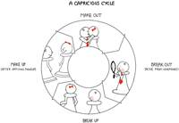
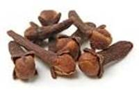
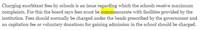
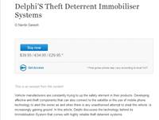
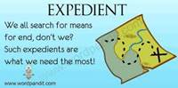
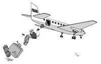

Goto Z
Goto P
Goto I
Goto C
Abase
Degrade or humble; to lower in rank, status, or esteem
Act in a way that shows that you accept somebodys power over you. To reduce in rank ,prestige or esteem. debase,degrade,humiliate.
He felt abased when his clothes were removed.


Abate
(v) Reduce, Diminish, become less in amount or intensity;
make less active or intense
The storm abated


Abdicate
(v) Formally give up the throne (or some other power or responsibility), give up, such as power, as of monarchs and emperors, or duties and obligations
to renounce , give up , surrender
Sometimes someone in power might decide to give up that power and step down from his or her position. When they do that, they abdicate their authority, giving up all duties and perks of the job.


Aberrant
markedly different from an accepted norm, Abnormal or deviant, one whose behavior departs substantially from the norm of a group
Deviating from usual or normal Abhorrent describes something truly horrible like finding a dead rat in your soup, but something aberrant is just abnormal, like a cat in a pink fedora.
The aberrant nature of heart pulses


Abeyance
Temporary suspension, inactivity
temporary cessation or suspension
the deal was held in abeyance until her arrival


Abhor
Detest, regard with disgust
hate,detest It is the strongest way in English to express hatred, even stronger than loathe.
I abhor spinach She abhors cats


Abjure
Give up, renounce; repudiate, recant, or shun (especially formally or under oath)
abjure - ab (away) + jure (jury). He abjured (rejected, moved away from) her earlier statements in front of jury. recant,rescind,repudiate Abjure means to swear off, and it applies to something you once believed.
She abjured her beliefs When you abjure something, you swear it away and dissociate yourself with it. When you abjure something, you swear it away and dissociate yourself with it.


Abrasive
Rough, suitable for grinding or polishing (such as sandpaper); causing irritation or annoyance
abrasive..it sounds like aggressive,which means harsh behavior
an abrasive character If you find someone abrasive, he or she grinds away at your nerves.


Abreast
Side-by-side The more common abreast of means keeping up with, staying aware of, or remaining equal in progress with
Abreast can also mean alongside.
kept abreast of the latest developments 2 men could hardly walk abreast


Abridge
Reduce or lessen; shorten by omitting parts throughout while retaining the main idea
abbreviate , contract , cut , foreshorten , reduce ,shorten
the new law might abridge our freedom of expression he just wants to abridge your masterpiece, trimming it down to the more readable essential elements.


Abscission
Cutting off; sudden termination; the separation of leaves, petals, or other parts from a plant or animal
the act of cutting something off
When an apple ripens and then falls off a tree, it's called an abscission. If you're wounded in the leg in battle and gangrene sets in, you will be faced with the abscission of a limb.


Abscond
Depart suddenly and secretively
Abscond is to escape, often taking something along.
Abscond is generally used to describe someone running from law or capture the Ponzi schemer who went to live in the South of France with his client's money? He absconded.


Abstain
Hold back, refrain (especially from something bad or unhealthy); decline to vote
If you abstain from something, you restrain yourself from consuming it.
People usually abstain from things that are considered vices like drinking alcohol or eating chocolate. I abstain from alcohol


Abyss
A deep and vast space or cavity; anything profound or infinite
a bottomless gulf or pit; any unfathomable (or apparently unfathomable) cavity or chasm or void extending below (often used figuratively) abysm You may know the related adjective abysmal, which means "appallingly bad" or "way down in the depths," as it were.
the abyss referred to the "bottomless pit" of Hell. "Thirty years ago, we peered into this abyss and pulled back just in time." The word is sometimes used to describe a wide difference between cultures or nations.


Accede
Agree, give consent; assume power (usually as accede to)
acquiesce , assent It differs slightly from concede, which also means consent, but a more reluctant kind. If you were to concede to your mom's 10 PM curfew rather than accede to it, you'd be doing so against your will.
If you accede to your mother's request that you come home before ten, it means you'll be missing that midnight movie with your friends accede to the throne


Accretion
Gradual increase; an added part or addition
an increase by natural growth or addition Addition implies adding to something that already exists, such as an addition to the cast (when a new actor joins an existing show). The noun accretion, on the other hand, implies an accumulation that causes increase,
an accretion of frost on the windows an accretion of plaque on your teeth


Acerbic
Sour; harsh or severe
Sounds like "Acidic." Lemons have a sour taste and are acidic. Therefore, they are ACERBIC. acerb , acid , acrid , bitter , blistering , caustic , sulfurous , sulphurous , virulent , vitriolic
caustic jokes about political assassination, talk-show hosts and medical ethics an acerbic tone piercing otherwise flowery prose


Acidulous
Slightly acid or sour; sharp or caustic
being sour to the taste
If someone makes a snarky comment about your culinary skills, you might call their comments acidulous or bitter. John was unpopular because of his sarcastic and acidulous remarks.


Acme
Summit, peak, highest point
the highest level or degree attainable; the highest stage of development elevation , height , meridian , peak , pinnacle , summit , superlative , tiptop , top,zenith, summit, pinnacle, apex, and peak
his landscapes were deemed the acme of beauty the artist's gifts are at their acme


Activism
The practice of pursuing political or other goals through vigorous action, often including protests and demonstrations
a policy of taking direct and militant action to achieve a political or social goal Activism is working or campaigning for political or social change. Any controversial social issues you can think of involve activism on both sides. This sense of the word has been from activist.
Your activism as a college student might help you get a job with a human rights organization after you graduate.


Acumen
Keen, quick, accurate insight or judgment
acumen sounds like IQ-men.. men with high IQ have ability to judge quickly (has keen insight). Acute thinking is sharp thinking
If you are able to make pointed decisions, if you have a sharp intellect, if you make good strategic moves, if you are successful in your field, or if your business instincts are spot-on, you have acumen.


Adhere
Stick (to), such as with glue, or to a plan or belief
be compatible or in accordance with be a devoted follower or supporter
You must adhere to the rules They adhered to their plan The residents of this village adhered to Catholicism The friends adhere together through the war


Admonish
Mildly scold; caution, advise, or remind to do something
admonish or counsel in terms of someone's behavior warn strongly; put on guard adm(in)+on(e)+(pun)ish
He admonished the child for his bad behavior If a child or subordinate is being admonished, it means "scold" or "rebuke" whereas if someone admonishes a person with equal standing, warn or advise are closer synonyms.


Adulterate
Make impure by adding inappropriate or inferior ingredients
corrupt, debase, or make impure by adding a foreign or inferior substance; often by replacing valuable ingredients with inferior ones
Whenever something original, pure, fresh, or wholesome is marred, polluted, defaced, or otherwise made inferior, it has been adulterated.


Adumbrate
Give a rough outline of; foreshadow; reveal only partially; obscure
umbra means shadow, ad+umbra means to shadow the details, so the word means outline, to shadow, obscure and overshadow.
In an English essay, you could adumbrate the themes in a novel; or, in a letter to Santa, you could adumbrate all the ways you have been behaving.


Adverse
(adj) Opposing, harmful
contrary to your interests or welfare Adverse and averse are both turn-offs, but adverse is something harmful, and averse is a strong feeling of dislike. Rainstorms can cause adverse conditions, and many people are averse to rain.
adverse circumstances


Advocate
Speak or argue in favor of (verb); a person who pleads for a cause or on behalf of another person (noun)
a person who pleads for a cause or propounds an idea on our behalf advocate...advocate usually "urges"or "pleads" judge to give in his favour advocate...advocate usually "urges"or "pleads" judge to give in his favour
The doctor advocated a smoking ban in the entire house he was an untiring advocate of economic reform


Aerie
Dwelling or fortress built on a high place; the nest of a bird of prey, such as an eagle or hawk, built on a mountain or cliff
the lofty nest of a bird of prey (such as a hawk or eagle) any habitation at a high altitude Don't confuse aerie with airy, meaning spacious and well ventilated (though it's a safe bet that given their location most aeries are exactly that). The word also has the meaning of a human residence that's perched high up — particularly an artist's garret
An aerie is the nest of a large bird of prey somewhere high up, such as the branch of a tree or a clifftop.


Aesthetic
Concerning the appreciation of beauty or good taste, pertaining to the science of what is beautiful (adj); a sense of beauty and taste of a particular time and place (noun)
a philosophical theory as to what is beautiful concerning or characterized by an appreciation of beauty or good taste
aesthetic painting the aesthetic faculties an aesthetic person aesthetic feeling the illustrations made the book an aesthetic success


Affable
Warm and friendly, pleasant, approachable
diffusing warmth and friendliness amiable , cordial , genial affection+able=affection to others
an affable smile Affable people generally seem like they're in a good mood and are happy to see you.


Affectation
Fake behavior (such as in speech or dress) adopted to give a certain impression
'affection' is natural and true, but 'affectation' is artificial and pretentious
While affection might not always be genuine, affectation is never the real thing. In fact, affectation is all about faking it. Do you believe the politician cares about poor people, or do you think his concern is an affectation?


Aggrandize
Make greater; exaggerate
add details to aggrandise , blow up , dramatise , dramatize , embellish , embroider , lard , pad
If you are a window washer, but you refer to yourself as a "vista enhancement specialist," then you are aggrandizing your job title ” that is, making it sound greater than it is.


Aggregate
Gather together, amount to (v); constituting a whole made up of constituent parts (adj)
the whole amount
You can also use it as an adjective, as in your aggregate sales for February, March and April. The mountain of foam in bubble bath is an aggregate of small bubbles.


Alacrity
Cheerful or Speedy willingness
cheerful promptness or eagerness
like a kid whose mother has told him he can buy anything in a candy store. She invited him home and he accepted with great alacrity


Albeit
Although, even though
though. all beat him though he was alive
he was making progress, albeit rather slowly


Alienate
Cause to become unfriendly, hostile, or distant
transfer property or ownership
an urban environment which would alienate its inhabitants The will aliened the property to the heirs they defended the Masai against attempts to alienate their land


Aloof
Distant physically or emotionally; reserved; indifferent
remote in manner not friendly or forthcoming; cool and distant.
he stayed aloof from the bickering shy by nature she stayed aloof while all the rest conversed


Amalgamate
Blend, merge, or unite
to bring or combine together or with something else
the amalgamated colleges constituted a university A school board might decide to amalgamate two schools into one school due to a decrease in the student population, but amalgamating their mascots would be impossible.


Ambiguous
Not clear, hard to understand, open to having several meanings of interpretations
open to two or more interpretations; or of uncertain nature or significance; or (often) intended to mislead equivocal
ambiguous words frustrated by ambiguous instructions, the parents were unable to assemble the toy


Ambivalent
Uncertain; unable to decide, or wanting to do two contradictory things at once
uncertain or unable to decide about what course to follow Ambivalent is when you don't hate something, but you don't love it either. Since you feel two ways about it, you don't really care
Valentine's Day When You're Dating a Woman You're Ambivalent About. When choosing between ambiguous and ambivalent, consider whether you are describing something that is unclear or vague: that's ambiguous. If it's a fluctuation in attitude or feeling, that's ambivalent.


Ameliorate
Improve; make better or more bearable
to make better amend , better , improve , meliorate a meli rate- kannada mele means improve
Aspirin can ameliorate a headache. Family therapy can ameliorate severe sibling rivalry Anything that can lift a burden can ameliorate.


Amortize
Gradually pay off a debt, or gradually write off an asset
liquidate gradually gradually write off the initial cost of (an asset) over a period. mort - death Amortize - to death means gradually debt to death(end)
the vessel's owners could not amortize her high capital costs eighty per cent of the proceeds has been used to amortize the public debt


Anachronism
Something that is not in its correct historical time; a mistake in chronology, such as by assigning a person or event to the wrong time period
Chronology - arrange in time. anachronism - something located at a time when it could not have existed or occurred an artifact that belongs to another time
You see anachronisms all the time in the movies — they occur when you see a jet fly over a Civil War battle! Or knights jousting over a maiden during the time of Shakespeare!


Analgesia
Pain relief; inability to feel pain
Analgesic as popularly known, a kind of drug to relieve pain so when you have analgesic, you move into state analgesia
If you suffer from headaches, stomachaches, bad knees, a sore back, or any other kind of pain, analgesia is a state you'd like to be in.


Analogous
Comparable, corresponding in some particular way (making a good analogy)
similar or equivalent in some respects though otherwise dissimilar remember analogous from analogy
the wings of a bee and those of a hummingbird are analogous brains and computers are often considered analogous


Anarchy
Absence of law or government; chaos, disorder
a state of lawlessness and disorder (usually resulting from a failure of government) Anarchy-Sounds like 'monarchy' (like tibet was ruled by monarchy)...so, absenceof government
A substitute teacher might worry that an unruly classroom will descend into anarchy.


Annul
Make void or null, cancel, abolish (usually of laws or other established rules)
AN NULl value is VOID.. C programming ! cancel officially,declare invalid
The contract was annulled New government officials often want to annul laws and policies of the previous post-holder, effectively reversing their work.


Anodyne
Medicine that relieves pain (noun); soothing, relieving pain (adj)
capable of relieving pain a medicine used to relieve pain
the anodyne properties of certain drugs When you’re stressed out or unhappy, try looking at anodyne pictures of kittens.


Anoint
Rub or sprinkle oil on; make sacred, such as by a ceremony that includes applying oil to someone
choose by or as if by divine intervention
She was anointed the head of the Christian fundamentalist group


Anomaly
Deviation from what is common; inconsistency
An anomaly is an abnormality
there are a number of anomalies in the present system


Antagonize
Make hostile or unfriendly
go anti to someone that is antagonize for you
Don't antagonize your boss Actually Bugs antagonizes every cartoon character he comes into contact with!


Antedate
Be older than, precede in time; assign to an earlier date
When things antedate something else, they come before it, or happen earlier than it does.
World War I antedates World War II.


Antithetical
Directly opposed, opposite; involving antithesis (the rhetorical act of placing two phrases opposite one another for contrast, as in love me or hate me)
sharply contrasted in character or purpose mutually incompatible
people whose religious beliefs are antithetical to mine practices entirely antithetical to her professed beliefs hope is antithetic to despair


Apathy
Not caring; absence of feeling; lack of interest or concern
consider pathy==sympathy, there are two words. 1. antipathy = dislike 2. apathy = disinterested Since "anti" is stronger than "a".. disliking is 1 step above disinterested..
the expressions voter apathy, student apathy, and consumer apathy show just how unenthusiastic groups of people can be.


Apocryphal
Of questionable authenticity; FALSE
Apocrypha are statements or claims that are of dubious authenticity(genuine). Derived from root "crypt" which means "secret". So, Apocryphal means "of doubtful authenticity"
an apocryphal story about a former president


Apostate
Person who deserts a party, cause, religion, etc
apostate can be thought of as 'opposite state'.. That is changing to the opposite state, and not loyal to his current state..
so someone might call you "a political apostate" if you ran for office as a Republican during one election and then ran as a Democrat in the following election.


Apostle
Pioneer of a reform movement (originally, an early follower of Jesus)
sounds like ACCOSTle...accost means approach and address (someone) boldly or aggressively....whenyou are addresing someone you are being a leader or figure of a reform movement and hence you are an APOSTLE !!!!!!! an ardent early supporter of a cause or reform
an apostle of revolution Anna hazare is apostle to pass Lokayuktha bill.


Apposite
Highly appropriate, suitable, or relevant
apposite=> opposite of OPPOSITE i.e. perfectly matched; appropriate; most suitable apt , pertinent
It is apposite that radio stations play Christmas carols on Christmas Eve Your tax accountant takes vacation after April 15th. It all makes sense.


Apprise
Inform, give notice to
apprise and appraise. Appraise means to determine the value of something either its quality or its monetary worth. Apprise, on the other hand, means to inform or make aware. This word has a rather formal, weighty tone. one who will inform will get the prize
Presidents get apprised of foreign affairs, but you will most likely not get apprised of weather conditions or dinner plans.


Approbation
Praise or approval, especially formal approval
Ap+PROBATION: You get CONFIRMATION/APPROVAL in your job after your Probation period later you get praise and salary increment approval
Remember that probation is a testing period, to see if you can be good. Approbation means it's all good. Or you can remember this rhyme: "Filled with approbation, the audience gave a standing ovation."


Appropriate
Set aside or authorize (such as money) for a particular purpose; take for one's own use
suitable or proper in the circumstances. appropriate = a + property + iate.. i.e. to make it your own property .. by force if required.. And also when you are appropriating it your self you are "allocating" it to yourself.
the accused had appropriated the property there can be problems in appropriating funds for legal expenses


Arbiter
Judge, umpire, person empowered to decide matters at hand
someone with the power to settle matters at will arbitrator , umpire, supreme authority
she was the final arbiter on all matters of fashion


Arcane
Known or understood by only a few; obscure, secret
improvising the first mnemonic.., Ar + Kane - Kane's face always remains secret, as he uses a mask. seen only few ie., understood by only few esoteric
Experts in academic fields often show off the depth of their knowledge by mentioning some arcane and esoteric fact as if it was common for everyone to know.


Archaic
Characteristic of an earlier period, ancient, primitive
so extremely old as seeming to belong to an earlier period antediluvian , antiquated ,primitive
archaic laws archaic forms of life


Ardent
Very passionate, devoted, or enthusiastic
characterized by intense emotion fervent , fervid , fiery , impassioned , perfervid , torrid
an ardent lover ardent revolutionaries Ardent devotees exhibit devotional ecstasy (an overwhelming feeling of great happiness or joyful excitement.) A pop star's ardent admirers might go so crazy at his concert that they faint from excitement.


Arduous
Very difficult, strenuous; severe, hard to endure
arduous = read it as: "hard to do for us"
Writing all those college essays and filling out the applications is an arduous process! worked their arduous way up the mining valley


Arrogate
Claim or take presumptuously or without the right to do so
A surrogate mom arrogate the custody of the child for ever
When the teacher steps out of the classroom and some bossy girl marches up to the front chalkboard? What she's trying to do is arrogate the teacher's authority to herself.


Articulate
Using language in a clear, fluent way (adj ); speak distinctly or give clarity to an idea (v)
speak, pronounce, or utter in a certain way articulate speech is 'artistic'...it attracts attention of ppl..
articulate speech an articulate orator articulate beings


Artifact
Any object made by humans, especially those form an earlier time, such as those excavated bu archeologists
art +factory--man made factory of art when you use the word artifact, you are describing something crafted that was used for a particular purpose during a much earlier time.
An artifact is a man-made object that has some kind of cultural significance. If you find a 12th century vase, it's an artifact of that time. Don't drop it!


Artless
Free of deceit or craftiness, natural, genuine; lacking skill or knowledge, crude, uncultured
without the art of deception art - less - lacking art (knowledge) now a days to survive art is deception
An artless person could never make a living as a con artist. Young people, animals, the socially inept these can all be artless in the way they express themselves.


Ascertain
Find out with certainty
establish after a calculation, investigation, experiment, survey, or study When you have determined your chances of admission into a college AS CERTAIN, then you have ASCERTAINed your chance to be 100%
Information that is ascertained is certain beyond a doubt. If you want a less formal synonym, use discover.


Ascetic
Abstinent or austere in lifestyle; a person who leads an austere and simple life without material pleasures, esp someone who does this for religious reasons
someone who practices self denial as a spiritual discipline abstainer , austere , spartan
ascetic practices Ascetic can be a noun: a person with incredible self-discipline and the ability to deprive herself, or an adjective that describes such a people or their lifestyle.


Ascribe
Assign or credit to a certain cause or source
Scribe - assign money to a account and subscribe. regard something as being due to (a cause). ascribe is often used to link writers to their words
he ascribed Jane's short temper to her upset stomach a quotation ascribed to Thomas Cooper It can also be a way of blaming something ,you might ascribe your bad attitude to your mom because she won't let you have cupcakes for dinner.


Aseptic
Free from germs
septic - because of germs. Aseptic - free from germs
Hospitals make every effort to keep operating rooms aseptic so that patients don't contract infections after surgery.


Asperity
Rigor, severity; harshness or sharpness of tone; roughness of surface
something hard to endure, harshness of manner grimness , hardship , rigor , rigorousness , rigour , rigourousness , severeness , severity As+per+IT(software industry)is well known for their harshness in layoff
the asperity of northern winters


Aspersions
Damaging remarks, defamation, slander
Verbal assault on someones character . Aspersion is related to the word asperity. Asperity is harshness, while an aspersion is a harsh or disparaging statement.
Anti fans of salman khan cast aspertions on him. I don't think anyone is casting aspersions on you


Assail
Attack violently, assault
assailant is common word in newspaper for mumbai attackers take 'sail' from 'assail'- for begining an war many warships are sailed to the warfront
the Scots army assailed Edward's army from the rear


Assiduous
Persevering, diligent, constant
marked by care and persistent effort assiduous+ass+in+the+dust.a donkey working hard in the dust.meaning hard working or industrious or diligent
her assiduous attempts to learn French assiduous research


Assuage
Make milder, relieve; soothe, pacify, or calm
a sage leaves in peace calm environment. cause to be more favorably inclined; gain the good will of alleviate , palliate , relieve,appease , conciliate , gentle , gruntle , lenify , mollify , pacify , placate
the letter assuaged the fears of most members an opportunity occurred to assuage her desire for knowledge


Attenuate
Weaken or thin out
Attenuate is a verb that means to make or become weaker.
The effects of aging may be attenuated by exercise. The rain attenuated, ending the storm


Attuned
In harmony; in sympathetic relationship
If you want a good sound from musical instrument, you tune it. If you want good relationship, you get accustom to it. attune it Attune comes from tune, "bring into a state of proper pitch." When you attune to something, you adjust to it and become aware of the way it works.
A new parent has to attune to a baby's schedule and personality. when you visit a foreign country it's important to attune to the unfamiliar culture, so that you're both comfortable and respectful.


Audacious
Very bold or brave, often in a rude or reckless way
audacious..auda(AUDIBLE)....IF YOU WANT to be audible to millions of people you have to be very daring and bold ,to go to the stage and deliver your message.
audacious visions of the total conquest of space he made an audacious remark


Augment
Make Larger
you can remember it as opposite of segment...... segment means to make less.... augment to add
The recent speech of the president augmented tensions in the Near East People augment their computers and phones all the time, adding new gadgets and apps.


Augury
Telling the future, such as through supernatural means
Augury.... Augur..... Sounds like Eager. We are always eager to know whats written in our future... so... foretoken , preindication , sign
Auguries are signs of what's to come, and it's wise not to ignore them.


August
Venerable, majestic; inspiring admiration
profoundly honored
she was in august company August gathering


Austere
Severe in manner or appearance; very selfdisciplined, ascetic; without luxury or ease; sober or serious
severely simple ascetic , ascetical , spartan
You wouldn't want someone to describe you or your home as austere. if you go on an austere diet, it's likely you wouldn't ever get to have candy


Autonomous
Self-governing, independent
function separately or independently independent , self-governing , sovereign
an autonomous judiciary Autonomous college


Avarice
Insatiable greed; a miserly desire to hoard wealth
ava - rice - extreme greed for wealth cupidity
Do you want more and more money? Or cookies? Or video games? Or anything? Then your heart is full of avarice, which you probably know better as greed.


Aver
Declare or affirm with confidence
A VERy confident statement! affirm , assert , avow , swan , swear , verify
The grandmother averred that her granddaughter would make a fine veterinarian because of her love and caring for animals. Sources aver that if Prabhu directs another film in Tamil, it will have none other than Vijay in the lead role.


Avid
Enthusiastic, dedicated, passionate; excessively desirous
a person is always eager to be in avid(a video)
avid for adventure an avid ambition to succeed


Axiom
Self-evident truth requiring no proof; universally or generally accepted principle
An axiom is a statement that everyone believes is true Mathematicians use axiom to refer to established proofs.
A police officer interrogating a witness might just as easily say, "Stick to the axioms," as "Stick to the facts, ma'am."


Balk
Refuse to proceed or to do something
sound close to bulk...when u see a bulky thing on ur way u refuse to go ahead
A donkey balks when it refuses to move forward. This is a good picture for balk which is often used in conjunction with demands. Demands are something people often balk at like a donkey refusing to move.


Balloon
Swell or puff out; increase rapidly
become inflated ride in a hot-air balloon
He tried to balloon around the earth but storms forced him to land in China the trousers ballooned out below his waist


Banal
Lacking freshness and originality; clich+¬
SPLIT INTO ba-nal ba-BAR - COMMONPLACE FOR MEN TO MEET & NAL(HINDI - TAP) - COMMON PLACE FOR WOMEN TO MEET. commonplace , hackneyed , old-hat , shopworn , stock , threadbare , timeworn , tired , trite , well-worn
Anything that's unoriginal and dull is banal a fancy word for things that bore you to tears.


Bane
Something that ruins or spoils
Modern technology is BOON OR BANE. Boon is useful and BANE is Something causing misery or death
the telephone was the bane of my life


Base
Morally low, mean, dishonorable; or little or no value; crude and unrefined; counterfeit
debased; not genuine
an attempt to eliminate the base coinage


Baying
Howling in a deep way, like a dog or wolf
(of a dog, especially a large one) bark or howl loudly.
the crowd bayed for an encore


Belie
Contradict or misrepresent
be in contradiction with contradict , negate It suggests characteristics or behavior that inadvertently or deliberately hide the truth. To remember it, just think "be lying."
If you are 93 but look like you are 53, then your young looks belie your age.


Beneficent
Doing good
Simply think about beneficial(something gives benefit) which help people. salutary, benevolent , eleemosynary , philanthropic
the most beneficent regime in history Kind, generous, and giving are all synonyms of beneficent.


Benign
Harmless; favorable; kindle, gentle, or beneficial; not cancerous
benign- bene(good) + sign Cloud number nine (BY Bryan adams) . so nign or nine is good. Benign is to be pleasant, good etc.
the benign ruler of millions benign intentions a benign smile the benign sky the benign influence of pure air


Bent
Personal inclination or tendency
If you have a knack or aptitude for doing something, you can say you have a bent for it.
Perhaps you have a bent for woodworking, creating fabulous desserts, or writing poetry, you are good at it.


Besiege
Attack, overwhelm, crowd in on or surround
divide it like-->be+siege(seize)-- Indian army has seized the line of control, and now the whole area is surrounded by armed forces. beleaguer , circumvent , hem in , surround
When all your teachers ask you to hand in assignments on the same day, you can end up feeling besieged. If you get a lot of spam in your e-mail, you are besieged with advertisements and maybe also besieged with worries that you'll get a virus!


Bevy
Group of birds or other animals that stay close together; any large group
Bevy=be +"we" not me, hence refers to group of people a large gathering of people of a particular type
At a family reunion, you may find your grandmother holding court in the kitchen with a bevy of female relations. a bevy of beauties


Bifurcate
To fork into two branches or divide into two halves
When you're walking through the woods, you sometimes see the path bifurcate, or split in two directions, and have to choose which way to continue. Bifurcate means to "divide into two branches."
The road bifurcated


Bilk
Cheat or defraud
cheat somebody out of what is due, especially money
Ever paid a restaurant bill only to discover they charged you for stuff you never had? What they did was bilk you cheat you out of money that was justly yours. Shady companies are forever bilking their investors. He bilked his creditors


Blight
Disease that kills plants rapidly, or any cause of decay or destruction (noun); ruin or cause to wither (verb)
A blight is a disease that hurts plants and makes their leaves wither Black light may destroy the plants
Too much rain may blight the garden with mold her remorse could be a blight on that happiness


Blithe
Joyous, merry; excessively carefree (so as to ignore more important concerns)
Blithe== Be-light- Hearted. means care free
spoke with blithe ignorance of the true situation


Bogus
Fake, fraudulent
fake , phoney , phony
a bogus insurance claim


Bolster
Strengthen or support
RELATE TO BOLT>> USED TO SUPPORT OR REINFORCE
bolster morale When you bolster your friends, you support them and prop them up, just like the pillow does for your back.


Bombastic
(Of speech or writing) far too showy or dramatic than is appropriate; pretentious
ostentatiously lofty in style
To be bombastic is to be full of hot air — like a politician who makes grand promises and doesn't deliver.


Bonhomie
Friendliness, open and simple good heartedness
Bon is the latin word for good...and Homie is a man...Good Man affability , affableness , amiability , amiableness , geniality
If you are known for your bonhomie, that's a good thing. It means that you are a cheerful friendly sort of person.


Boor
Rude, ill-mannered, or insensitive person a peasant or a country bumpkin
boora in hindi resembles something bad. boore log, boora kaam... barbarian , churl , goth , peasant , tike , tyke When a boor is around, other people want to leave.
If you have self-control and culture, you'll never be accused of being a boor. To be a boor is to be an obnoxious, unsophisticated oaf. A boor would swear in church.


Brandish
Shake, wave, or flourish, as a weapon
brandish = brand(brandy)...so once v drink brandy v vill start waving foolishly...
brandish a sword If you win a bowling tournament, for example, you might be inclined to brandish your shiny new trophy in front of the other competitors.


Brook
Suffer or tolerate
relate this to BROOK BOND tea....jst drink the tea and then u can tolerate any tension. :-)
If you brook no criticism of your friend, it means you won't let people speak ill of her.


Bucolic
Pertaining to shepherds; suggesting a peaceful and pleasant view of rural life
bucolic sounds a bit like bullock which is used in the "country side"...
a pleasant bucolic scene If your parents wanted to raise you in a bucolic environment, you may find yourself living 45 minutes away from the nearest movie theater or person your age. Not ideal.


Buffer
Something that shields, protects, absorbs shock, or cushions
a cushion-like device that reduces shock due to an impact
A buffer state is a country between two conflicting ones that helps them better get along by creating a buffer between them like Mongolia is for China and Russia. A person can also be a buffer if she keeps people prone to fighting from coming in contact or hurting each other, like a teacher who separates two rowdy kids at the lunch table.


Bureaucracy
Govt characterized be many bureaus and petty administrators or by excessive, seemingly meaningless requirements
nonelective government officials CBI - bureau , non elected ppl
Bureaucracy is an organization administered by people behind desks, or bureaus. Bureaus, get it?


Burgeon
Grow or flourish rapidly; put forth buds or shoots (of a plant)
Burge+on sounds like Bulge which means growing big
Your tiny retirement account can burgeon into an excellent emergency fund if you invest even a small amount each month. If you have a green thumb, in the spring your flower gardens will burgeon in a cacophony of color. If you don't have a green thumb, your collection of plastic plants will burgeon.


Burnish
Polish, make smooth and lustrous
the property of being smooth and shiny
That seductive gleam on that Porsche behind the dealer's window? It's called a burnish, a gloss only achieved by loads of polishing. Likewise, you can burnish resume, by polishing it until it's perfect.


Buttress
Support or encourage (v); a support or prop, esp projecting from and supporting the wall of a building (n)
remember by your BUTT or BUTTOCKS ! what do they do? They provide you with a padding when you sit, giving support.. :)
buttress your thesis You may find that giving compliments to everyone you meet buttresses your popularity


Bygone
Past, former (adj ); that which is in the past (usually plural noun)
gone days - past
bygone days let bygones be bygones

 Harsh, discordant, or meaningless mixture of sounds
Caw caw - a loud harsh or strident noise
Do the students in the orchestra enjoy the cacophonous sounds they make when they're tuning up? I don't know how they can stand the racket.
Harsh, discordant, or meaningless mixture of sounds
Caw caw - a loud harsh or strident noise
Do the students in the orchestra enjoy the cacophonous sounds they make when they're tuning up? I don't know how they can stand the racket.


Calumny
Malicious lie intended to hurt someone's reputation; the act of telling such lies
rhymes with ALUMNI - imagine urself slandering n defaming some of ur cllg ALUMNI
He could endure his financial failure, but he could not bear the calumny that his foes heaped upon him.


Canard
Rumor, a FALSE or baseless story
Remember Kannad movies their fighting is so unreal false... so remember canard as being a false portrayal.
It is a canard that neither mainstream media's managers nor its journalists have good answers to that question.


Candid
Open, sincere, honest
Candor (N) - Frankness Candiadates in a interview are recommended to be straight forward,outspoken and honest in an interview for best result
I gave them my candid opinion


Canonical
Authorized, recognized; pertaining to the canon, or body of accepted rules, standards or artistic works
Canon - rule canonical--look at the word canon+ical-....something that resembles or like the biblical canon.
the canonical rites of the Roman Church


Capricious
Acting on impulse, erratic
(adj) changeable,Unpredictable ca(CAR) + PRIC(PRICE)...PRICE OF cars nowadays is becoming unpredictable with the launch of Tata's 1 lakh car.
The headmaster's punishments were capricious—break the rules one day, you get a warning; break them another day, you get expelled.


Cardinal
Chief, most important
'cardinal' also means pertaining to the 'heart' and the heart is the 'most important' part of our body. It is responsible for the working of our body.
If you want to increase your word power, the cardinal rule of vocabulary-building is to read.


Cartography
Map-making
Carto-graphy is making CHARTS and GRAPHS and maps.
The invention of better navigation tools had major effects on cartography—the more ships knew precisely where they were sailing, the better the world could be mapped.


Castigate
Criticize severely; punish in order to correct
cast+i+hate - if you hate caste, you criticize it
When the teacher threatened that she would castigate the mischievous boys if they didn't behave, they shaped up in a hurry.


Catalyst
Causer of change
agent which brings about a chemical change while it remains unaffected and unchanged. Many chemical reactions cannot take place without the presence of a catalyst.
The young manager was a catalyst at the stodgy old company—once he introduced employee laptops, telecommuting, and mobile workstations, even the most conventional of employees totally changed the way they worked.


Catholic
Universal, broad-minded
(adj) free from provincial prejudices or attachments catholic in one's tastes
He was extremely catholic in his taste and read everything he could find in the library.


Caustic
Capable of corroding metal or burning the skin; very critical or sarcastic
caustic soda is very common and its "harmful " for health if taken in large quantity....therefore caustic means harmful or burning. (adj) harsh or corrosive in tone make others burning by ur sarcastic words
caustic jokes about political assassination, talk-show hosts and medical ethics


Censure
Strong disapproval or official reprimand (n); to issue such disapproval or reprimand (v)
censor––which means to suppress speech or other forms of expression Try to link the meaning of this word with the censor board which always critisizes every inch of the film and also disapproves of some of the parts. A censor hides information. A censure is harsh criticism.
An example of censure is a newspaper article condemning a new educational practice.


Chauvinism
Fanatical patriotism or blind enthusiasm for military glory; undue or biased devotion to any group, cause, etc
extreme patriotism male chauvnistic society
He's such a chauvinist that he denies that any other nation could be better than ours at anything


Chicanery
Trickery, deception by knowingly FALSE arguments
Have you ever gotten the sense that politicians or corporate leaders will say anything to turn public opinion their way? This tricky kind of deceit and manipulation is called chicanery.
Those sneaky lawyers misrepresented what occurred, made up all sorts of implausible alternative scenarios to confuse the jurors, and in general depended on chicanery to win the case.


Chronological
Arranged in or relating to time order
Chronological
Chronological


Circumscribe
Strictly limit a role, range of activity, or area; in math, to be constructed around so as to touch as many points as possible
limit; confine.
Although my team lead do not wish to circumscribe my activities, she insists that i should complete given assignment before i start anything else.


Circumspect
Cautious, prudent; careful to consider the circumstances and consequences
circum(means circumstance)...spect(means to inspect)...so a kind of person who inspects circumstances before speaking, and such people are generally considered as prudent. Prudent -ability to govern and discipline oneself by the use of reason.
An example of prudent is someone who consults with a financial advisor before investing money.


Clamber
Climb awkwardly or with difficulty, scramble
climber is a person who climbs and clamber is a person who climbs awkwardly using his hands and feet
She clambered over the small hill when we went to trekking


Clamor
Noisy uproar or protest, as from a crowd; a loud, continuous noise
CLAMOR rhymes wit glamourous....whenever de crowd sees a glamour girl they become NOISY
As soon as a scent of scandal emerged, the press was clamoring for details.


Clinch
Make final or settle conclusively; to fasten or hold together
the act of one boxer holding onto the other to avoid being hit and to rest momentarily hold in a tight grasp
Open wide, said the dentist, but I clenched my teeth even more tightly than before.


Cloying
Disgustingly or distastefully sweet
remember CLOVE--excessive addition of clove in the food makes the food distasteful.. distasteful (because excessive); excessively sweet or sentimental.
a romantic, rather cloying story


Coagulate
Cause a liquid to become solid or semisolid
transformed from a liquid into a soft semisolid or solid mass
When you get a cut, the blood flowing from the wound will coagulate: it will start to clot and form a solid scab so you will stop bleeding.


Coalesce
Come together, unite; fuse together
A broken bone healing back into one is an example of to coalesce. Two armies joining together against a common enemy is an example of to coalesce.
While at first everyone on the team was jockeying for power and recognition, eventually, the group coalesced and everyone was happy to share credit for a job well-done.


Coda
Final part of a musical composition; an ending, esp one that sums up what has come before
conclusive part of the lunch ,is done by soda(coda) by watching music on television.
If you tell a story about your crazy experience getting lost in the country and sleeping at a farmer's house, you might add, as a coda, that the farmer ended up visiting you too, a year later.


Coffer
Chest for storing valuables; financial resources, a treasury
Coffer
People use coffer to save thier valuables.


Cogent
Very convincing, logical
It was inevitable that David chose to go to Harvard: he had several cogent reasons for doing so, including a full-tuition scholarship.
clear, logical, and convincing cogent - gent - a gentle person is always the right person to convince others.


Collude
Conspire; cooperate for illegal or fraudulent purposes
Collude sounds like "conclude" so come to a secret understanding of
When you collude with someone you secretly plot together to do something bad. You might collude with your twin sister to find out where all the birthday presents are hidden.


Commensurate
The same in size, extent, etc , equivalent; proportional
Your reward will be commensurate with your effort. pay should be commensurate with the time worked
Commensurate


Compendium
Concise but complete summary; a list or collection
CUM(hindi for less) PEN use karke u can just write summary of topic.
When you search an online encyclopedia, you are searching a compendium of information on just about everything.


Complacent
Self-satisfied, smug; overly content (and therefore lazy, neglectful, or some other bad quality)
COMP(Company)+PLACEncy- When you get placed in a company you get lot of self satisfaction i.e complacency
com + plais(please) + ant come and please the a(u)nt Complacent is self satisfied and Complaisant is a person who satisfies other people


Complaisant
Eager to please; cheerfully complying
The courtier obeyed the king's orders in a complaisant manner.


Complementary
Completing; fitting together well; filling mutual needs
`male' and `female' are complementary terms
After ordering lot a meals they gave ice to everyone as complementary


Compliant
Obeying, submissive; following the requirements
one who never complains and obeys everything is compliant !
Because Joel usually gave in and went along with whatever his friends desired, his mother worried that he might be too compliant.


Concede
Give in, admit, yield; acknowledge reluctantly; grant or give up (such as giving up land after losing a war)
Despite all the evidence Monica had assembled, Mark refused to concede that she was right.
con- ‘completely’ + cedere ‘yield’.


Conciliatory
Reconciling, appeasing, attempting to make the peace
concilium - council. conciliare - to bring together –ory suffix means "relating to or doing,"
spoke in a conciliating tone


Concur
Approve, agree
I concur is a formal (and sometimes humorous) way of saying "I agree!" or "I hear that!"
when a king conquers(concur) a state then the people in the state hav to agree with it You can see concur as concurrent


Condone
Overlook, tolerate, regard as harmless
mom might say, "I don't condone you staying up till 10, but I know you need to read." In Companies manager condone listening to music.
condone = consideration + done If you condone something, you allow it, approve of it, or at least can live with it. Some teachers condone chewing gum, and some don't. remember kannada word "condum madbeda"


Confer
Consult, compare views; bestow or give
in CONFERENCE people go for CONFERing
We had a team meeting to confer about a schedule for sharing the CANoe Dongle.


Confound
Confuse, frustrate; mix up or make worse
CONfusion FOUND == CONFOUND
When I had been Chutney Chung For team lunch I was confounded by the overwhelming number of choices.


Connoisseur
Expert, especially in the fine arts; person or educated, redefined tastes
a connoisseur of music
Kaun Inse Zyada Synonym -cognoscente


Connote
Suggest or imply in addition to the precise, literal meaning
to connote is to imply a meaning or condition denote is to define exactly. connote is like imply, and denote is telling
Often your body language can connote or imply how you feel without you having to saying it directly. The word red can connote danger; we use the color red in warning signs to signify danger.


Console
Lessen the suffering or grief of (v); a control panel, or small table or cabinet (n)
Perhaps you avoid babysitting your baby brother because you're worried that if he starts to cry, you won’t be able to console him or make him feel better.
(V) give moral or emotional strength to (N)Central Control Panel


Consolidate
Unit, combine, solidify make coherent
The companies consolidated The town and county schools are being consolidated
com- (meaning "together") with solidare (meaning "to make solid")


Constrict
Squeeze, compress; restrict the freedom of
Her throat constricted
Constrain


Construe
interpret or translate
his words could hardly be construed as an apology
If you interpret something or make sense of it, you construe its meaning. Consider true meaning of message The opposite of construe is misconstrue


Contentious
Controversial; prone to causing arguments, especially gratuitous or petty ones
A contentious issue is one that people are likely to argue about, and a contentious person is someone who likes to argue or fight. In every batch there will be a Contentious person whom evryone hates. a central and contentious element of the book
Contentious- (Contender+Serious) One who takes competition too serious always fights and quarrels) content issues - leads to controversies


Contextualize
Place in context, such as by giving the background or circumstances
Use contrary when two things are exactly opposite or entirely different.
the excellent introduction summarizes and contextualizes the work


Contraries
Things that are opposing; either of two opposite things
SPLIT AS cont (COUNT) - rite (RIGHT). COUNT THE CASH RIGHT, ELSE YOU WILL REGRET IT.
acts contrary to our code of ethics


Contrite
Remorseful; feeling sorry for one's offenses or sins
Full of complacency about his latest victories, he looked smugly at the row of trophies on his mantelpiece.
We are sorry to inform you that the adjective contrite means to feel regret, remorse, or even guilt. Someone who feels remorse or guilt is contrite and in addition to feeling sorry, part of the definition includes wanting to atone for having done something wrong. being remorseful for past sin and resolved to avoid future sin


Contumacious
Rebellious; stubbornly disobedient
(In Hindi language) Break the word as CON - TU - MA - CI- OUS n tat can be read as Kaun Tu Ma Ki one who says this is disobedient
a contumaceous witness is subject to punishment That horse that keeps heading back to the barn, no matter how much you coax and kick and try and convince him to stay on the trail? He's showing you his contumacious side, meaning he's stubbornly resisting authority.


Conundrum
Riddle, the answer to which involves a play on words; a mystery
brain-teaser , enigma , riddle drum ke andar kaun hai
One of the most famous conundrums is the riddle of the Sphinx, famously in the play Oedipus the King by Sophocles. Oedipus encounters the Sphinx, a mythical beast, who asks him, "What walks on four legs in the morning, two in the afternoon, and three in the evening?" The answer is "A person": crawling as a child, walking as an adult, and using a cane in old age. The scary thing is that if the Sphinx asked you the riddle and you didn't know, she'd eat you!


Converge
Move towards one another or towards a point; unite
Coverge
Social forces converged to bring the AAP back to power


Conversant
Knowledge about or experienced with
Through conversations you can gain more knowledge and thus become conversant.
If you know a lot about computer programming, then you could describe yourself as conversant with the latest updates in coding languages. This means you have current working knowledge of the topic.


Conversely
in opposite way; on the other hand
with the terms of the relation reversed
You say the photo is a fake. Conversely, the photographer claims it's real.


Convoke
Call together, as to a meeting
In convocations colleges call all the students to get together.
Convoke/ Evoke/ Invoke/ Provoke/ Revoke 1-Convoke: v. con-: together + -voke: call> to call together to a meeting e.g The headmaster convoked the teachers to an urgent meeting. 2-Evoke: v. e-: out, forth + -voke: call> to call forth or up; to call to mind; to inspire e.g The old photo has evoked very dear memories. 3-Invoke: v. in-: into + -voke: call> to call for help or support e.g The poor man invoked the help of the passers-by. 4-provoke: v. pro-:forth + -voke: call> to arouse the feeling e.g His stupid behaviour provoked her into laughter. 5-Revoke: v. re-: again + -voke: call> to cancel; to annul e.g The traffic police have revoked his driving licence because he is a dangerous driver. Please give your opinion.


Convoluted
Twisted; very complicated
Convolution theorem was very hard to understand!!
I never read others code because i feel its convoluted. But fact is that it will actually easy


Copious
Plentiful, bountiful
By copying in an exam, some get a LOT of marks
In engineering girls in our batch used to take copious notes


Corroborate
Support, add evidence to
sounds like collaborate => to support
To corroborate is to back someone else’s story. If you swear to your teacher that you didn't throw the spitball, and your friends corroborate your story by promising that you were concentrating on math homework, she might actually believe you.


Cosmopolitan
Belonging to the entire world, at home globally; free from local or national prejudices or attachements
Cosmopolitan
Your Aunt Eleanor, who's lived in six different countries and speaks four languages fluently, might be described as cosmopolitan, or comfortable and familiar with different cultures and people.


Cosset
Treat as a pet, pamper
Cosset” is derived from a word meaning cottage dweller.” It came to describe a pet lamb who was taken out of the flock and raised in the farmer's cottage. Such pets were, of course, pampered.
all her life she'd been cosseted by her family


Coterie
Close or exclusive group, clique
coterie => snds like ROTARY;so group that meets socially
manmohan,rahul,priyanka,sonia “gang of four” — a coterie that was “misleading” Sonia


Countenance
Facial expression or face (n); approve or tolerate (v)
(count+ten) A ten year old kid is learning how to count upto 10 and his dad's countenance gave kid a lot of encouragement
When i said that everyone that i got incentive they had puzzled countenance When i was asked again and again to write procedure of test I was afraid I can't countenance that.


Counterintuitive
Against what one would intuitively expect
Intuitive - using or based on what one feels to be true even without conscious reasoning; instinctive.
A classic example of the intuitive/counterintuitive divide can be found in computers: today they're so easy to use a toddler can handle them; early ones were so counterintuitive they remained a head-scratching mystery to all but a few techies.


Counterpoint
Contrasting item, opposite; a complement; the use of contrast or interplay in a work of art
Counterpoint
the sauce made a piquant counterpoint to the ham piquant - having a pleasantly sharp taste or appetizing flavour.


Counterproductive
Defeating the purpose; preventing the intended goal
Counterproductive
It seems counterproductive to have people like that representing us.


Covert
Secret, veiled, undercover
Covert sounds like "covered (covert = cover + t or covered + t) and something which is covered can be considered a secret.
a covert operation is one that no one but the president and a few generals know is happening.


Crafty
Cunning, skillful in deception or underhandled schemes
If people call you crafty, they probably mean you are sly and a little deceptive.
Ranvir singh con-man in movie Ladies vs Ricky Bahl is crafty.


Craven
Very cowardly, lacking courage
craven -- is the opposite of 'brave'. A craven man is no Superman or Spiderman, nor is he a firefighter or a soldier. A craven man is the opposite of those guys: he has not an ounce of courage.
the craven fellow turned and ran


Credibility
Believability, trustworthiness
You have credibility when you seem totally trustworthy or believable.
Congress lost election badly because of loss of credibility


Credulous
Gullible; prone to believing or trusting too easily or without enough evidence
gives 'credit' to everything one hears or reads - credulous
so credulous he believes everything he reads


Crescendo
Steady increase in force, intensity, or the loudness of a musical passage; a climactic moment or peak
Krish end -at end of movie large music sound There's often a crescendo in a large group of talking people, too.
each time the key changes, there is a gradual crescendo


Culminate
Reach the highest point or final stage
The verb culminate is used to describe a high point or a climactic stage in a process.
It will all culminate in a school-wide debate that could make or break both of their careers.


Cupidity
Greed, great or excessive desire
cupidity:look for CUPID HERE..cupid is the god of love. so cupidity means having an desire or greed for wealth. cupid-wealth-cupidity...greed for wealth. Cupidity means a burning desire to have more wealth than you need.
The growing wealth of Venice soon attracted the cupidity of her piratical neighbours on the coast of Dalmatia.


Curmudgeon
Bad-tempered, difficult person; grouch
Cur-mud-geon Car mud main gone... to driver went bad tempered... i.e. curmudgeon..
Old, cranky, and more than a little stubborn, a curmudgeon is the crusty grey haired neighbor who refuses to hand out candy at Halloween and shoos away holiday carolers with a "bah humbug!"

Cynical
Thinking the worst of others' motivations; bitterly pessimistic
If you think public officials are nothing but a bunch of greedy buffoons, you have a cynical attitude about politics.
Inside Every cynical person there is Disappointed idealist.


Daunt
Discourage, dishearten, lessen the courage of
daunt sounds like DON'T,means som1 discouraging u daunt = haunt = if you are frightened you will be discouraged to go into the haunted house.
The steepness of the mountain daunted the team of amateur climbers, who hadn’t realized what they were in for.


Debase
Degrade; lower in quality, value, rank, etc ; lower in moral quality
de(means without)+base..so think of someone /something without having any base or value. To debase something is to make it corrupt or impure
Debase is often used in the context of two things: coins and people. To debase a coin is to replace some of the precious metal in the coin with metal of lesser value. To debase a person is to corrupt them, often by driving them to perform an immoral act like (gasp!) using the lemonade mix.


Debunk
Expose, ridicule, or disprove FALSE or exaggerated claims
DE+BUNK . so when you bunked your college, and got caught by your teacher... your teacher debunked (exaggerated this fact and ridiculed ) me in front of the class.
Columbus debunked the idea that the world was flat: he showed clearly that it was round.


Declaim
Speak in an impassioned, pompous, or oratorical manner; give a formal speech
claim - assert reclaim - take back proclaim - to make an official announcement acclaim - to applaud, welcome with approval disclaim - to disavow any connection with someone or something; to renounce declaim - To make a formal speech exclaim - to cry out suddenly
Declaim can also describe reciting words aloud for practice. If you're learning a new language, you might declaim a sentence until it sounds clear and natural when you say it.


Declivity
Downward slope
acclivity: upslope of a hill.. so, declivity is the downslope of a hill
If you're standing at the top of a hill looking down to the bottom, you're staring down a declivity, a downward slope of any kind.


Decorous
Behaving with propriety and good taste; polite
dignified, proper, and in good taste decor.DECORATE.if you decorate your ROOM it will look proper in appearance compared to hall. You can relate it to decorum.
Decorous great-aunt who always wears a awesome dress even when she's only headed to the grocery store.


Deem
judge; consider
can we relate it with seem so that Seem will mean appear and deem will mean consider.
Your parents or boss may deem something necessary that you don't, like coming home by midnight or working late.


Deface
Vandalize mar the appearance of
spoil the surface or appearance of (something), for example by drawing or writing on it. de-face:: if u can concentrate on face , then deface means face which is scraped.face is a part of a persons figure,so if the face is scrapped wen somone hits(mar), then the person is disfigured.
he defaced library books graffiti can deface a statue.


Default
Failure to act, neglect (n); fail to fulfill an obligation, especially a financial one (v)
Separate FAULT : Fault is a mistake and due to a mistake the person looses by default. Debt fault - did fault by not paying debt.
Your credit score will go down if you default on a loan. The number of loan defaults was down this month.


Deference
Respectful submission; yielding to the authority or opinionj of another
The noun deference goes with the verb defer, which means "to yield to someone's opinions or wishes out of respect for that person." If you and your dad disagree about the best route to the grocery store, you might defer to him, and take his route. You're taking his route out of deference to his opinion and greater experience.
Sure you wear ripped jeans to school every day, but you don't wear them to your grandmother's house out of deference to her.


Deflect
Cause to curve; turn aside, esp from a sstraight course; avoid
sounds like reflect. If some thing reflects, it turns away
Hockey goalies deflect the flying puck with their sticks or blockers, making it travel in a different direction, preferably to a teammate's stick.


Deleterious
Harmful, unhealthful
relate it to DELETE...so you DELETE all the spam mails because they may BE HARMFUL to your PC.
Smoking has obvious deleterious effects on your health, not to mention your social life.


Delimit
Fix, mark, or define the boundaries of
(verb) determine the essential quality of (verb) be opposite to; of angles and sides, in geometry (verb) set, mark, or draw the boundaries of something
agreements delimiting fishing zones


Delineate
Mark the outline of; sketch; describe in detail
there is a "line" in the middle of delineate. This might help you remember that to delineate is to outline and define something in detail or with an actual marking of lines and boundaries.
When you create an outline for a paper it usually summarizes what you will detail later. You delineate the sections, or mark the heading lines, and when you write the details, you delineate the subject of each heading. So, to delineate is both to mark lines and to fill in the lines.


Demagogue
A leader who lies and gains power by arousing the passions and especially prejudices of the people
democracy+agog-an agog(desire or eager) man leading democracy will only try to win peoples support by using unreasonable and emotional arguments
He was accused of being a demagogue because he made promises that aroused futile hopes in his listeners.


Demur
Show reluctance or object, especially for moral reasons
sounds a little like Damn U R wrong!! I object!
If your mother asks you to clean your room and you refuse, you demur. And if your friend invites you to the Death Metal Forever concert but you hesitate, you demur. Whether you object, politely disagree, or hesitate, you demur.


Denigrate
Belittle, attack the reputation of
Denigrate - degrade - defame DENIGRATE=DENY+GREAT.so if yu deny someone is great ,it means you BELITTLE him
Your neighbors may denigrate your proposal for mandatory recycling in an attempt to stop your plan


Denote
Be a name or symbol for
connote is to imply a meaning or condition, and to denote is to define exactly
She denoted her feelings clearly


Deride
mock scoff at laugh at contemptuously
deride means to show a low opinion of someone or something To "ride" people is to get on their case or give them a hard time, and to deride is to do the same with insulting language or poor treatment. DE(lower)RIDE(ride a cycle) if u ride a cycle of low quality people will REDICULE u
The jerk would deride the other kids on the bus by calling them names or pulling their hair until the driver decided to de-ride him by kicking him off the bus.


Derivative
Derived from something else; not original
derivative describes something that borrows heavily from something else that came before it.
A movie plot might be described as derivative if it steals from another film


Desiccate
Thoroughly dried up, dehydrated
Desert Cake: Cake that has been dried out and turned dull in taste.
As anyone who's been stuck in the desert will tell you, being desiccated by the burning sun isn't much fun desiccate also means to preserve something by drying it out. Without desiccation, raisins or beef jerky would not be possible!


Desultory
Lacking consistency or order, disconnected, sporadic; going off topic
desultory think like de story-> moving away from the main story The adjective desultory comes from the word desultor, which was a circus rider who would leap from the back of one galloping horse onto another. From this literal sense of jumping from one thing to another, we get the modern meaning of desultory as jumping between things without a logical purpose.
If you lack a definite plan or purpose and flit from one thing to another, your actions are desultory. Some people call such desultory wanderings spontaneous. Others call it "being lost."


Detached
impartial, disinterested; unconcerned, distant, aloof
DE (removed or cut off) + ATTACHED (emotionally involved)...if you cut yourself off an emotional involvement, you detach yourself from the relationship.
she felt detached from the group


Deterrent
Something that restrains or discourages
DETER + RENT. A high rent IS ALWAYS A discouraging factor FOR TENANTS. deter - discourage (someone) from doing something by instilling doubt or fear of the consequences. A deterrent is the opposite of a reward. A reward encourages you to do the right thing, while a deterrent discourages you from doing the wrong thing.
Let's say there's a giant pile of cookies being guarded by an angry dog — the dog is a deterrent.


Diaphanous
Very sheer, fine, translucent
modern gowns are diaphanous .i.e transparent from dia 'through' + phainein 'to show'
a hat with a diaphanous veil


Diatribe
Bitter, abusive attack or criticism; rant
diatribe = di-tribe = two tribes fighting...criticize
a diatribe against consumerism


Dichotomy
Division into two parts or into two contradictory groups
can be think as di + cut _ ... so dichotomy is cutting into two parts A dichotomy is an idea or classification split in two. When you point out a dichotomy, you draw a clear distinction between two things
A dichotomy is a contrast between two things. When there are two ideas, especially two opposed ideas — like war and peace, or love and hate — you have a dichotomy.


Dictum
Formal or authoritative pronouncement; saying or proverb
dictator means authoritarian; dictum means an authoritative statement.
If the principal of your school issues a dictum declaring "no jeans in school," it's time to go shopping.


Didactic
Intended to instruct; teaching , or teaching a moral lessen
diactic=did+act You do an act to teach something,as in a moral thus didactic=teach
Luther’s seemingly amusing talk had a didactic purpose; he was trying to show his listeners the difference between right and wrong.


Diffident
Lacking confidence, shy
diffident = difficult to be confident Diffident can describe someone who is reserved and restrained. Some may mistake your diffident manner for aloofness.
she was diffident when offering a comment on the professor's lecture


Diffuse
Spread widely, disseminate (verb); dispersed, widely spread out, or wordy and going offtopic (adj)
diffuse means to spread something out, but also applies to spreading things such as ideas or culture so that they become widely known
a large diffuse organization


Digress
Go off-topic when speaking or writing
tiger goes for hunting but in way sees a tigress...... so hi goes after the tigress.....nd deviates from his aim
Don't digress when you give a lecture She always digresses when telling a story


Dilate
To become wider or make wider, cause to expand; to speak or write at length, elaborate upon
Usually the word dilate is used when the opening of something circular becomes larger, but every so often you might hear someone refer to the need to dilate someone's understanding of quantum physics, global warming, livestock breeding, or any other topic.
His pupils were dilated


Dilatory
Slow, late; procrastinating or stalling for time
If you are always late to appointments, people may accuse you of being dilatory, especially if they think you don't have a good excuse.
Extract 'late' from the word dilatory and you get.... delay which is generally due to waste of time. slow , tardy


Dilettante
Person who takes up an art or activity for amusement only or in a superficial way
if you call your friend who likes to paint a dilettante, it's like you're calling him or her a poser.
A dilettante is an amateur, often one who pretends to be very knowledgeable. DIL(my heart) ETTANTE ATU..watever my heart says ill jus follow bilndly


Din
Loud, confused noise, esp for a long period of time
he dinned the lessons into his students
Walk into the average school cafeteria at lunchtime, and you'll get a good sense of what a din is — loud, confused, continuous, generally unpleasant, and often potentially headache-inducing noise. DIN (morning) mein you will hear the loud noises of the traffic etc, but at night its very quiet.


Dirge
A funeral or mourning song or poem
On Great people funeral day there will a dirge written on them.
die - urge to start crying


Disabuse
Free someone from a mistake in thinking
In singing lessons, you must disabuse young singers of the idea that they can sing better by singing louder.
story: like a girl fall in love with a rascal, and her father comes to know. what he will do is abuse the boy and disabuse the girl about the boy. simple naa.


Discerning
Having good judgement or insight; able to distinguish mentally
a discerning reader a discerning editor discerning taste
Discerning is similar to "Discovering". When you discover something you reveal something Discerning people pick up on subtle traits and are good judges of quality — they're the ones that can tell if your cupcakes are homemade from the finest ingredients or totally from a box mix.


Discomfiting
Disconcerting, confusing, frustrating
An easy way to discomfit another person is to use the age-old, childish trick of ignoring them.
To discomfit someone is to make them feel uncomfortable or upset. Discomfort is a noun meaning uncomfortable, like the feeling you get when you realize you put salt instead of sugar in Mama’s tea.


Discordant
Harsh or inharmonious in sound; disagreeing, incongruous
A discordant conversation at your dinner table may make some people upset — they want everyone to get along. Discordant can also describe harsh and unpleasant sounds, like the blaring horns in city traffic.
Con+Cordant means "with agreement". Dis+Cordant means "Without Agreement" DISCORDANT = DIS(not) CORDANT(can be taken as COORDINATION) .. when there is NO COORDINATION there will be NO HARMONY and there is a possibility to CONFICT


Discredit
Injure the reputation of, destroy credibility of or confidence in
your actions will bring discredit to your name The paper discredited the politician with its nasty commentary
REMEMBER this word means, not to give credit, as opposed to credit (TO GIVE FAME OR CREDIT). to reduce the credit's of some one!..


Discrepancy
Difference or inconsistency
There is a discrepancy when there is a difference between two things that should be alike. For example, there can be a wide discrepancy or a slight discrepancy between two objects, stories, or facts.
break into dis+creep+fancy= this is creep and this is fancy what an inconsistency with this item .i.e fancy and creep are different


Discrete
Separate, distinct, detached, existing as individual parts
A room is a discrete space within a house, just as the transmission is a discrete part of a car engine.
A discrete unit is a separate part of something larger. Don't confuse discrete with its close cousin discreet, which means “appropriately private.― Billionaire Bruce Wayne, for example, is very discreet about his secret life as Batman.


Discriminating
Judicious, discerning, having good judgement or insight
the discriminating eye of the connoisseur A discriminating TV watcher will only watch the best shows, while someone undiscriminating will watch anything that's on.
Someone discriminating has fine-grained judgment and can tell, for example, the difference between pretty good cookies and incredibly great cookies — a valuable skill. A discriminating person can pick up on the small differences between things and use those differences to make better choices. We should all try to be more discriminating.


Disingenuous
Insincere, not genuine
It's disingenuous when people pretend to know less about something than they really do. a disingenuous excuse
INGENUOUS(can be remembered as genuine) IS SINCERE, INNOCENT AND SOPHISTICATED. AND disingenuous IS not naive, insincere This word is derived from the word "Genuine", which means true and real. Disingenuous is just the opposite of genuine.


Disinterested
Unbiased, impartial; not interested
We are struggling to identify twelve disinterested people for the jury.
Dis-Interest...if a particular issue is not of any interest to me (dis-interest), i'll pass a biased free opinion about it... unaffected by self-interest


Disjointed
Disconnected, not coherent, jerky; having the joints separated
When someone gets injured, they may end up with a disjointed shoulder or a disjointed hip.
Disjointed is an adjective that describes something as disconnected, illogical, or just messed up. A disjointed argument is an argument that doesn’t make a lot of sense.


Dismiss
Allow to disperse or leave; fire from a job; put aside or reject, especially after only a brief consideration
And if you've been ignoring your friends' warnings that your boyfriend is cheating, you've been dismissing their concerns.
class dismissed. This means that you and the rest of the students are free to go.


Disparage
Belittle, put down; bring shame upon, discredit
She disparaged her student's efforts
dispa-rage can be read as display a rage. When you display your RAGE on your juniors you BELITTLE them in front of the others.


Disparate
Distinct, different
a disparate aggregate of creeds and songs and prayers disparate ideas
Dis(this) + parate(parrot) is different from the rest. But how?? It can talk!!!


Dispassionate
Unbiased, not having a selfish or personal motivation; calm, lacking emotion
unaffected by strong emotion or prejudice
a journalist should be a dispassionate reporter of fact


Dispatch
Speed, promptness; send off or deal with in a speedy way
kill intentionally and with premeditation kill without delay
Anything that needs to be mailed, sent off, or quickly shipped needs to be dispatched. Letters, official reports, teams of police — if it has somewhere to be, you can dispatch it to get there. the traitor was dispatched by the conspirators


Disperse
Scatter, spread widely, cause to vanish
Disperse is to spread out people or things, making them move in different directions.
He scattered gun powder under the wagon


Disposition
A person's general or natural mood; tendency
dis (this) position - natural tendency Inclined to stay in dis position.
People say I have a happy disposition


Disquieting
Disturbing, cause anxiety
Dis - Quiet /.. Not quiet loud sound.This may cause mental discomfort in you.
the disquieting sounds of nearby gunfire


Dissemble
Mislead, conceal the truth, put on a FALSE appearance of
The word sounds like "resemble"...the person/ a thing of tat type can be in disguise...
My boyfriend was dissembling the whole time. He was a married father of two. When confronted about their human rights record, the Chinese government typically dissembles.


Disseminate
Scatter, spread about, broadcast
sounds this emit >> scatter.. semminate means comes to something conclusion, disseminate means to scatter the idea.
The dis- of disseminate and distribute come from the same Latin prefix which means "apart, in a different direction." But unlike papers distributed in class, information, once spread around in all directions, cannot be pulled back in. Think about false rumors or political smear campaigns and you'll understand that dissemination is usually a one-way process.


Dissent
Disagree or take an opposing view, esp in relation to a formal body such as a government, political party, or church; such a view
ASSENT, ACCORD etc mean, to agree and DISSENT, DISCORD etc mean to disagree.
Dissent is what you do when the glee club wants to get matching red outfits but you like purple.


Dissolution
Dissolving, the state of having been dissolved; breaking bonds or breaking up of a group of people; death, disintegration; sinking into extreme hedonism, vice, and degradation
dissolution is the opposite of resolution. When you make a resolution you make a promise, when you make a dissolution you BREAK or dissolve the promise!
The dissolution of a relationship means that it's broken up or ended. The dissolution of your band means you better get started on your solo album. Dissolution looks very similar to "dissolve," so to help you remember the meaning, think about what happens if you put paper in water — it breaks apart. A dissolution of a marriage is the same thing as divorce.


Dissonance
Harsh, inharmonious sound; cacophony; disagreement
dis-sonance::DIS RESONANCE--not resonant....so not in harmony Dissonance is opposite of resonance, which is cacophonous, discordant.
You know it's dissonance if you have the strong desire to cover your ears with your hands.


Distaff
Female, esp relating to the maternal side of the family; women or women's work; a staff that holds wool or flax for spinning
In staff room in school all were ladies (Females) characteristic of or peculiar to a woman womans side of family
Sooner Country Babe wins $26,750 Distaff Bonus Challenge


Distend
Swell, expand, stretch, bloat
try to relate it with dis means distance and extend means to expand.
A soda and pizza binge might make your stomach distend, meaning your stomach will swell as a result of pressure from the inside The word distend often applies to stomachs — a pregnancy would also cause a stomach to distend — but it can also refer to anything that is stretched out as a result of internal pressure.


Distill
Purify; extract the essential elements of
When you distill something, you are boiling it down to its essence — its most important part.
Whether it's alcohol or ideas, the distilled part is the most powerful. If you take notes at a lecture and then turn them into an essay for your professor, you're distilling your notes into something more pure and exact.


Dither
Act indecisively (verb); a state of fear or trembling excitement
DITCH+HER....I am indecisive whether to ditch her or not because it's a big decision and it will ruin her life.... act nervously; be undecided; be uncertain an excited state of agitation
dont get yourself on a dither over everything she was dithering over what to wear


Diurnal
Occurring every day; happening in the daytime (rather than at night)
u have to visit the urinal everyday!! he adjective diurnal can be used to describe anything that takes place in the daytime, but it is most often used in the field of biology to describe animals that are active during the day and then sleep at night. Animals with the opposite schedule are said to be nocturnal, which means they’re active at night and sleep in the daytime.
If it’s 9:00 at night and your mom wants you to do the dishes, you could try to put it off until the next day by politely pointing out that you are a diurnal animal. That means you get most of your activities done during the day. Diurnal can also be used to describe something that has a daily cycle, such as a diurnal tide that occurs once each day.


Diverge
Differ, deviate; branch off or turn aside, as from a path
To diverge means to move apart or be separate.
The word diverge in the poem carries both the meaning of separating and of being apart from the main.


Divest
Deprive or strip of a rank, title, etc , or of clothing or gear; to sell off holdings (ant: invest)
opposite to invest; di + vest; vest means an inner garment; divest is to remove it.
if your boss becomes insane and power mad, his handlers may divest him of his title, meaning his position is taken away from him.


Divine
Discover through divination or or supernatural means; perceive by insight
godllike
the divine Shakespeare novels


Doctrinaire
Person who applies doctrine in an impractical or rigid and close-minded way (noun); merely theoretical, impractical, or fanatical about other people accepting one's ideas (adj)
Some Doctors are arrogant on their opinions when a junior suggest them.
You've doubtless met someone doctrinaire at some point. You know them by their complete unwillingness to accept any belief other than their own.


Document
Support with evidence, cite sources in a detailed way, create documentary evidence of
support or supply with references
If you call a company to complain about something, make sure to document your phone calls by noting the date you called, who you spoke to and what was said.


Doff
Take off (such as clothes), put aside; remove one's hat as a gesture
DO + OFF or take off, remove. Doff is a contraction of "do (take) off," and don is short for "do (put) on."
He doffed his hat


Dogma
A system of principles laid down by an authority; established belief
Dogma means the doctrine of belief in a religion or a political system. read the word backwards. Someone told himself "i AM GOD" surely talks about his religion a lot.
he believed all the Marxist dogma


Dormat
Asleep, inactive, on a break
Dormant Normal physical functions suspended or slowed down for a period of time in or as if in deep sleep
Dormant butterflies


Dovetail
Join or fit together
fit together tightly, as if by means of a dovetail
a joint made by inserting tenon on one piece into mortise holes in the other


Droll
Funny in an odd way
when u r amused u roll on the ground
So they have locked me out of the house ? Very droll I'm sure


Dubious
Doubtfull, questionable, suspect
dubious - opposite of obvious..i.e) in doubt or questionable
he has a dubious record indeed


Dupe
Person who is easily fooled or used (noun); to fool or exploit (verb)
duplicates(in movies) are used to fool people Dupe actually means â trick or deceive
The immigrant was duped because he trusted everyone


Duplicity
Deceit, double-dealing, acting in two different ways for the purpose of deception
Though he said he didn't know anything about the footprints in the new sidewalk, his duplicity, or deceitfulness, was obvious from the cement caking his shoes. His mouth said one thing, his feet said another
duplicity== making two faces(duplicate).. one who makes two faces is a fraud..


Dyspeptic
Grumpy, pessimistic, irritable; suffering from dyspepsia (indigestion)
It describes someone who is irritable due to depression or indigestion. dys (means not functioning properly) + peptic.. pepsin..is an ENZYME...WHICH BREAKS DOWN THE FOOD PARTICLES AND HELPS IN DIGESTION,...SO if this enzyme stops functioning..then the problem of INDIGESTION occures.
A common dyspeptic type would be an old man shouting "Get off my lawn!" to kids playing on the street


E
g For example, such as
E
E


Ebullient
Very enthusiastic, lively, excited; bubbling as though being boiled
Your dad purchasing you a new 'Enfield Bullet' so you shpw ur 'Excitement' -> ebullient! :D
There are two senses of the word of ebullient. One describes an immediate, and ultimately short-lived, reaction to a particular event — for example if you've just won the lottery, you are ebullient. The other describes someone who is perpetually upbeat and cheerful, for example, as in "an ebullient personality." Watch out for ebullient personalities: they can often be "over the top" as well.


Eccentric
Peculiar, odd, deviating from the norm esp in a whimsical way
ec(x)-centric(normal): going away from the center that is departing from the norms
an eccentric is an unconventional, odd person. Think of them as following a slightly different orbit from the rest of society.


Echelon
A level, rank or grade; the people at that level
a body of troops arranged in a line break it as ek+hi+line(similar to lone)..means in a line.so its a line of body of troops
An echelon is a stepped formation with objects arranged in a diagonal. Birds flying in a V shape create echelons so that they can draft behind each other and conserve energy — except for the guy up front, who’s super tired.


Eclectic
Selecting the best of everything or from many diverse sources
eclectic or elect means, chosing the best from many sources which is the meaning of the word eclectic
For Development committee in our college best students from various branches were selected which proves eclectic taste of organizers


Eclipse
The obscuring of one thing by another, such as the sun by the moon or a person by a more famous or talented person (n); to obscure, darken, make less important (v)
during the total solar eclipse one heavenly body covers another heavenly body making the other one barely visible
A TV eclipse, perhaps the most serious of all, is when your dad walks in at the most crucial part of the movie and blocks your view of the TV while he lectures about taking out the trash.


Edify
Uplift, enlighten, instruct or improve in a spiritual or moral way
edify sounds close to "rectify" which means to correct edify -> edit + y; you edit some thing to improve it
If you know that the noun edifice is a synonym for building, you may wonder what the related verb edify has to do with understanding. You can think of something that edifies as the building blocks of what might become a lifelong interest, like an elementary school teacher who edifies the student who becomes an Abraham Lincoln scholar, or an activity you eventually master, like the beginners' lessons that edify new ice skaters. the explanations that hang beside paintings at a museum that edify visitors who aren't familiar with the artist.


Efficacy
the quality of being able to produce the intended effect
EFFICACY = EFFI + CACY = EFFEct producing CApaCitY
concern about the safety and efficacy of the vaccine


Effigy
Representation or image of a person, esp a crude facsimile used to mock a hated person
a fig(ure) y effigy most often refers to a likeness, such as a dummy, that is hanged, burned, or otherwise abused when protesting the despised person's actions.
Effigy of cricket players was burnt when India lost the world cup in super six the coin bears an effigy of Lincoln


Effrontery
Shameless boldness
audacious (even arrogant) behavior that you have no right to for every discussion he comes to the FRONT and argues...in a rude manner.
When a couple stroll into a crowded restaurant, demand the best table, and threaten the staff unless they're seated right away, that's effrontery.


Egalitarian
Related to belief in the equality of all people, esp in political, economic, or social spheres
for EAGLES, it does not matter which person's meat is that, ultimately they have to fill their stomach being scavengers. EAGLES are EGALitarians.
an egalitarian society gives everyone equal rights. The opposite of an egalitarian system could be a fascist society or dictatorship. Monarchies are not egalitarian.


Egregious
Extraordinarily or conspicuously bad; glaring
scores we get in GRE is outrageously bad (egregious)
Something that is egregious stands out, but not in a good way — it means "really bad or offensive," like a tattoo on a man misspelling his girlfriend's name. An egregious error is hardly forgivable. Some synonyms are shocking, appalling, and intolerable. an egregious lie


Egress
An exit or the action of exiting
If you want to leave a place, you need a means of egress, or a way to exit, such as a door or window gress- to step progress - pro(forward) gress(tostep) opposite regress- re(backward) gress (step) digress -Because di- means two (divide, divert, different), when we talk about someone digressing, we mean that they are stepping away from one topic, and into a second one, usually something more intesting to them. transgression -Because trans- means across (transit, transact, transportation), a transgression is a stepping across acceptable boundaries of behavior. egress - e(out) gress (step)
When buildings undergo inspection, one of the main safety features under review is the number and placement of doors and windows, the "means of egress," in case of fire or other emergency.


Elated
Very happy, in high spirits
sounds like elevated...if you are promoted you will definitely be in high spirits
If you're elated you aren't just happy — you're over the moon, absolutely excited and bursting with pride. Like the way you feel after winning a scholarship to an Ivy league school or mastering a back handspring.


Elegy
Song or poem of sorrow, esp for a deceased person
E(a)-LEGY(legendry).....so if a legendry person dies......people sing a mournful poem or people lament or regret for his death..... An elegy is a sad poem, usually written to praise and express sorrow for someone who is dead. A speech at a funeral is a eulogy, you might later compose an elegy to someone you have loved and lost to the grave. grggravegrave.grave.
After the death of his grandfather he spent days alone in his farmhouse writing elegies to vent his sorrow.


Elevate
Raise, lift up; lift the spirits of; move up to a higher rank or status or raise up to a higher spiritual or intellectual plane
Elevate means to raise, either literally or figuratively. Think: elevator. At the end of the track meet, the team elevated their trophy for everyone to see. Their mood could only be described as elevated
If you get promoted, you might be elevated to the rank of vice president. Having elevated levels of cholesterol in your blood means that your levels are high.


Elicit
Call forth, bring out, evoke
implicit-which is understood .. explicit - means specifically told or written.. ELICIT means which is not specifically told or understood but WE HAVE TO DRIVE BY REASONING
A good comedian elicits a lot of laughs. A great speech will elicit cheers — a bad speech will elicit boos.


Eloquent
Marked by forceful, fluid, apt speech; expressive, emotionally moving
E+LOG+FLUENT hain..these people are fluent expressing yourself readily, clearly, effectively
Even though eloquent usually describes oral speech, it can also be used to describe powerful writing. Being eloquent is about using words well. All the great writers from English class — such as Shakespeare, Mark Twain, Emily Dickinson, and Virginia Woolf — were eloquent. A great orator or speaker like Martin Luther King was eloquent. When something is beautifully, gorgeously, perfect said (or written), it's eloquent.


Emaciate
Make abnormally thin, cause to physically waste away
emaciate starts with "hEy MA", thats when u cry when u go hungry..
She emaciated during the chemotherapy She emaciated because of abnormal increase in sugar level


Embellish
Decorate, add ornamentation; enhance (a story) with fictional or fanciful details
The word "bell" shows up in the middle of embellish, and bells are something that decorate, or embellish something, making it more attractive Embellish often has the positive meaning of adding something to make it more handsome or beautifully decorated. But, while adding bells to something looks great at first, after a couple of hours of bells ringing in the ears, what was meant to embellish and beautify can get annoying. That's what can happen when you embellish by adding too many false or exaggerated details to a story. Embellishing with true, colorful details and vivid descriptions is what can really enhance the beauty of a story.
If you embellish speech, though, it can get ugly if you add a lot of details that aren't true.


Eminent
Prominent, distinguished, of high rank
standing above others in quality or position eminent describes anyone who's famous. But imminent refers to something about to happen, like the next big thing's imminent rise to the top.
In music, no one is more eminent than Beethoven


Empirical
Coming from, based on, or able to be verified by experience or experimentation; not purely based on theory
derived from experiment and observation rather than theory
To do an empirical study of donut shops, you'll need to visit every one you can find. empirical data


Emulate
Copy in an attempt to equal or be better than
an emulator is hardware or software or both that duplicates (or emulates) the functions of one computer system in another computer. When you emulate someone, you imitate them, especially with the idea of matching their success.
When someone is impressive because of their great skills, brains, strength, or accomplishments, other will emulate.


Encomium
Warm, glowing praise, esp a formal expression of praise
INCOME - People of high INCOME are formally praised for their large donations. An encomium is a fancy word for a formal speech or piece of writing that warmly praises someone or something.
It used to refer to the song for the winner of the cricket World cup, sung at a victory celebration. You might hear an encomium at a retirement party, after you publish a fabulous book, or even at a funeral (a eulogy, or speech at a funeral about the person who died, is a kind of encomium).


Endemic
Native, local; natural, specific to, or confined to a particular place
simple think of epidemic as an epidemic desease that spreads a vast area and endemic disease as a disease that spreads only a confined area
Many complain of endemic corruption in the local government.


Enervate
Weaken, tire
ENERV(w)asTE whwn you waste you energy you become weak weaken mentally or morally
A three-hour lecture on the history of socks might thrill someone, it would enervate most people.


Engender
Produce, give rise to, cause to exist; procreate
when two gender's male & female end up together .. they produce or give rise to a CHILD..
Engender is a fancy way of saying "to make happen," like when you engender the spirit of teamwork and cooperation by encouraging others and doing your share of the group's work.


Enhance
Raise to a higher value, desirability, etc
Enhance - increase
This sauce will enhance the flavor of the meat


Enigma
Puzzle, mystery, riddle; mysterious or contradictory person
enigma refers to something or someone that is mysterious, puzzling or difficult to figure out. As a funny-sounding word with an interesting meaning, many things have been named enigma such as a rock band, a video game, a rollercoaster ride, and a very famous coding machine used in World War II.
Sadly, the little girl’s disappearance continues to be an enigma


Entitlement
Having the right to certain privileges; believing, sometimes without cause, that one deserves or has a right to certain privileges
right granted by law or contract
entitlements make up the major part of the federal budget


Enumerate
Count or list; specify one-by-one
ENUMERATE; NUMBER + IT means COUNT
She enumerated the many obstacles she had encountered Science is feasible when the variables are few and can be enumerated; when their combinations are distinct and clear.


Ephemeral
Lasting only a short time, fleeting
sounds like e-funeral. Electric funeral is SHORT A related word is the plural noun ephemera, meaning "things that are meant to last for only a short time." Posters for a rock concert are often ephemera, unless the band is so famous that they get saved and sold on eBay.
the ephemeral joys of childhood


Epicure
Person with cultivated, refined tastes, esp in food and wine
EPIC-CURRY...one who can write an EPIC on CURRY has to be a CONNOISSEUR OF FOOD.. Occasionally, you might find the word epicure used for a person who loves something else, but an epicure is usually someone who delights in fine food.
Most fine restaurants these days will charge you an arm and a leg for a meal good enough to satisfy a real epicure: a good bottle of wine alone could cost the choosy epicure a couple of Benjamins ($100 bills). Preston is also a writer for MasterChef and delicious. magazines as well as the former columnist for The Age newspaper's food section, "Epicure"


Equanimity
Composure, evenness of mind; mental or emotional stability, esp under stress
Equal+Anxiety - Behave equally even when anxiety situations come
he accepted their problems with composure and she with equanimity If you take the news of your brother's death with equanimity, it means you take it calmly without breaking down. Equanimity refers to emotional calmness and balance in times of stress. Composure - the state or feeling of being calm and in control of oneself. "she was struggling to regain her composure"


Equitable
Fair, equal, just
fair to all parties as dictated by reason and conscience
equitable treatment of all citizens an equitable distribution of gifts among the children


Equivocate
Use unclear language to deceive or avoid committing to a position
equi(equal) vocal(sound)... if we make similar sounds then it would be ambiguous(unclear) to distinguish!!
When you are unwilling to make a decision and almost intentionally go back and forth between two choices, you are equivocating. When politicians equivocate, they are often afraid of upsetting, and thus alienating, voters with their decisions.


Erratic
Inconsistent, wandering, having no fixed course
liable to sudden unpredictable change Like its linguistic relative, error, the adjective erratic means "deviating from the norm," or "wrong."
erratic winds are the bane of a sailor someone driving a car that veers out of its lane is said to be driving erratically.


Erroneous
Mistaken, in horror; improper, morally incorrect
containing or characterized by error
Early explorers had the erroneous notion that the oceans were full of dragons.


Ersatz
Artificial, synthetic; being an inferior substitute
When you try to pronounce Ersatz ur trying to pronounce in american accent which is artificial(Inferior Substitute)
Instant coffee would be considered ersatz to a freshly brewed cup made from hand-ground Costa Rican beans. You would be in deep trouble if your fiancé found out that her engagement ring was an ersatz diamond.


Erstwhile
Former, previous (adj); in the past, formerly (adv)
at a previous time
If your dad was lecturer, but is now a software engineer, you could call him an erstwhile lecturer.


Erudite
Scholarly, knowledgeable; possessing deep, often systematic, knowledge
in kannada ( eru diet ) - means people who are on diet and concentrate only on knowledge even forgetting about eating food
an erudite professor


Eschew
Shun, avoid, abstain from
es+CHEW... CHEWING a CHEWINGGUM IS A BAD HABIT while working in an office, so you must avoid this HABIT.
You eschew things that you find morally or aesthetically wrong, or that you have chosen to find wrong. A dieter might eschew a chocolate sundae, not because he doesn’t like it, but because he’s afraid of what it will do to his waistline.


Esoteric
Understood by or intended for only a few; secret
HISTORIC things are known to few people "Exoteric"-Normal waking consciousness ,Simplistic "Esoteric" - Expanded; meditative or spiritual states,complex cosmology, psychology, ontology,etc
do you know the secret handshake? If you haven't been brought into the inner circle of those with special knowledge, esoteric things will remain a mystery to you. Americans might find the sport of cricket to be esoteric, but the rules of baseball can be just as impenetrable to outsiders. The infield fly rule? Totally esoteric.


Estimable
Worthy of esteem, admirable; able to be estimated
deserving of esteem and respect Something or someone estimable is worthy of respect and admiration.
Many U.S. presidents might be described as estimable, though it depends on who you ask.


Ethos
The character, personality, or moral values specific to a person, group, time period, etc
ETHOS = ETHICS
the Greek ethos


Eulogy
Speech of praise or written work of praise, esp a speech given at the funeral
Eulogy comes from Greek eulogia “praise; good or fine language,” from eu “well” + -logia “speaking” A speech or an essay written in honour of a deceased person.
The eulogy he read at the funeral brought back memories of Sam and I was moved to tears.


Euphemism
Substitution of a mild, inoffensive, or indirect expression for one that is considered offensive or too direct
Assuming: females are milder than males as they are more emotionally inclined. It reads like E(xpress) U(yourself) Phemism(like feminism). Euphemism is from Greek euphemismos, meaning "good speech,"
These days we tend to use euphemisms when talking about anything having to do with elimination of bodily waste: toilet, bathroom, and water closet were all originally euphemisms. The military is also notorious for using euphemisms, like saying "neutralizing the target" instead of "killing someone."


Euphony
Pleasing or sweet sound, especially as formed by a harmonious use of words
To understand it, break it down: eu- means good; phon- means sound or voice. Sounds like SYMPHONY. Music is sweet sounding. Opposite of cacaphony
Kids and their parents rarely find euphony in the same song.


Exacerbate
Make worse (more violent, severe, etc ), inflame; irritate or embitter (a person)
Abate means decrease in quantity or measure . Exacerbate - make worse
This drug exacerbate the pain A drought will exacerbate a country's food shortage. Worsen, intensify, aggravate and compound are similar, but exacerbate has the sense of an irritant being added in to make something bad even worse.


Exacting
Very severe in making demands; requiring precise attention
requiring precise accuracy severe and unremitting in making demands having complicated nutritional requirements; especially growing only in special artificial cultures Exact - precise , just does exactly exigent - pressing; demanding.(immediately) "the exigent demands of her contemporaries' music took a toll on her voice"
an exacting job An exacting person expects things to be, well, exact. Some exacting people are extremely selective about what they eat, rejecting anything that doesn't meet their complicated standards of nutrition and taste.


Exculpate
Clear from guilt or blame
exculpate sounds like ex-culprit = culprit...but now he has been cleared of the charges. Get him to exculpate and exonerate you.
If you've been wrongly accused of robbery, you'd better hope a judge will exculpate you, unless you want to go to jail because you've heard prison food is amazing. So if that judge exculpates you from the robbery charge, everyone in town might still think you did it.


Exhaustive
Comprehensive, thorough, exhausting a topic or subject, accounting for all possibilities; draining, tending to exhaust
im exhausted of this exhaustive debate.
an exhaustive study exhaustive reasearch


Exigent
Requiring immediate attention, action, or aid; excessively demanding
EX-tremely ur-GENT
If there's a runaway train driving straight at you, that's an exigent situation — not a good time to stop and write a poem If you've ever worked as a waiter, you've surely dealt with an exigent customer.


Exonerate
Clear from blame or accusation; free from a responsibility
To exonerate someone is to declare him not guilty of criminal charges A word with a similar meaning that might be familiar is “acquit.”
When your next door neighbor was arrested for painting smiley faces on the front doors of all the houses on your block, evidence to exonerate him was discovered when the police found a young hooligan from the next street over with a basement full of paint canisters.


Expedient
Suitable, proper; effective, often at the expense of ethics or other considerations
The adjective expedient describes something that provides an easy way to achieve a goal or result, but it's not necessarily a moral solution. pronounce it like "experienced"...an experienced person is always SUITABLE for making decisions
in the circumstances it was expedient to express loyalty


Explicit
Direct, clear, fully revealed; clearly depicting sex or nudity
precisely and clearly expressed or readily observable; leaving nothing to implication
explicit instructions she made her wishes explicit


Exponent
Person who expounds or explains; champion, advocate, or representative
a person who pleads for a cause or propounds an idea
I'm an Exponent for Kannada Movies


Expurgate
Censor; remove objectionable or offensive parts
Expurgate - divide this word into (expel+ur+gate), you always expel the waste from your gate to make your home 'clean' and 'purified'. edit by omitting or modifying parts considered indelicate
On TV, if you hear some words bleeped out, those words have been expurgated When it comes to things children read or watch, there's often the difficult question of what to expurgate and what to leave alone.


Extemporaneous
Done without preparation (esp of a speech), or with some preparation but no notes; improvised, done on the spur of the moment
TEMPORARILY done in haste and so not planned.
an extemporary lecture an extempore skit Some politicians are so skilled that even their prepared remarks have an extemporaneous quality. As opposed to policy debates where teams know the resolution in advance, extemporaneous debate is judged on style and nimble argumentation, as the participants receive the resolution minutes before debating begins.


Extrapolate
Conjecture about an unknown by projecting information about something known; predict by projecting past experience
Extrapolation= EXTRA + Info + POL poll in computers term means getting information, so getting Extra information is Extrapolation
The verb extrapolate can mean "to predict future outcomes based on known facts." , looking at your current grade report for math and how you are doing in class now, you could extrapolate that you'll likely earn a solid B for the year. Another meaning of extrapolate is "estimate the value of." You could extrapolate how much your antique watch is worth by finding how much similar watches sold for at recent auctions.


Facetious
Joking, humorous, esp inappropriately; not serious, concerned with frivolous things
someone who makes funny faces Facetious>>>Face is not Serious cleverly amusing in tone
I was being facetious when I told my mother I want Brussels sprouts with every meal, but she took me seriously! facetious remarks


Facilitate
Make easier, help the progress of
If your best friend is very shy, you could facilitate her efforts to meet new people. you could facilitate the process by sharing your knowledge The stimulus facilitates a delayed impulse
you could facilitate the process by sharing your knowledge


Faction
Group or clique within a larger organization; party strife and dissension
Politics is one area where faction gets a lot of use, because a political party often starts with a large group but has some members who disagree with a belief or direction. These members separate from the larger party and become a faction of their own, with many of the same beliefs as the original group but with a few new differences, too. rival faction within the administrartion
a small group of people within a large group whose members have some different aims and beliefs to those of the larger group . a clique (often secret) that seeks power usually through intrigue a faction or sect that has broken away from its parent organization


Fallacious
Containing a fallacy, or mistake in logic; logically unsound; deceptive
fallacious reasoning fallacious hope Predictions that the whole state of California will snap off from the rest of North America and float away have proven to be fallacious A tween's assumption that anyone over 20 can't understand her situation would be fallacious; we have all been young once too.
fallacious.split it like fallac+ious...if you just concentrate on fallac..it look like FALSE,......so THINK that SOMETHING is based on a FALSE OR incorrect notion..... containing or based on a fallacy


Fallow
Left unplanted (of land); not in use
after plowing farmer fallow(fall-low) of money so, he left it without seeding(uncultivated) left unplowed and unseeded during a growing season undeveloped but potentially useful
fallow farmland (undeveloped but potentially useful) If you are smart but lazy, someone might say you have a fallow mind. a fallow gold market


Fanatical
Excessively devoted, enthusiastic, or zealous in a uncritical way
fanatical ~ fanatic ~ fan ~ holligan = acting excessively enthusiastic The original English meanings of both fanatic and fanatical implied that the person being described was insane with enthusiasm, like a religious zealot.
If you are excessively enthusiastic about something a sports team, an actor, your religion, saving the whales, a certain brand of chocolate then you are fanatical about it.


Fanciful
Whimsical, capricious; imaginary; freely imaginative rather than based on reason or reality
fanciful is full of fancies. Someone who is fanciful usually allows creative thought rather than the practical to come to the forefront. The adjective fanciful sprang from the 15th-century noun fancy, which was in turn a short version of the word fantasy.
a fanciful pattern with intertwined vines and flowers


Fastidious
Excessively particular, difficult to please; painstaking, meticulous, requiring excessive attention to detail
If you want to describe a person who insists on perfection or pays much attention to food, clothing and cleanliness, the right word is fastidious. fastidious - fasting + tidious(clean and tidy) - person insisteing perfection on cleanliness and doing fasting (dieting) . Fussy and hard to please will also do for meaning
Fastidious is occasionally used as a compliment to describe someone whose attention to detail gives them good organizing abilities, but it is usually used as a disapproving term. Aninditha is a fastidious(She gives excessive attention to detail and very difficult to please her)


Fathom
Measure the depth of (usually of water)as with a sounding line; penetrate and discover the meaning of, understand
shortform of "father or mother"; they always like to see their son working; he may be an invistigator or a plumber (measure the depth of water) doesn't really matter for them. understand (a difficult problem or an enigmatic person) after much thought.
I can't fathom why he doesn't want to go along with us. the locals could not fathom out the reason behind his new-found prosperity


Fatuous
Foolish, silly, esp in a smug or complacent manner
remembles FAT ASS an ass is considered foolish devoid of intelligence
When your mother outlaws calling your brother stupid, use fatuous instead.


Fawn
Show affection or try to please in the manner of a dog; try to win favor through flattery and submissive behavior
A fawn is a young deer, but it's also a verb meaning to try and win favor by flattering.
If you ever come into possession of a great fortune, watch out for sudden friends who want to fawn over you and shower you with presents. Few employees get good increment by fawning over with their manager


Feasible
Possible, logical or likely, suitable
capable of being done with means at hand and circumstances as they are
Feasible things are possible. If you have enough time, money, or energy to do something, it's feasible.


Fecund
Fruitful, fertile; capable of abundantly producing offspring, vegetation, or creative or intellectual work
Sounds like "FUCK" "AND". You fuck and You are able to produce an offspring (no offence) adjective fecund can also be used to describe someone who is innovative or highly intellectually productive
a fecund imagination Your fecund imagination will be an asset if you have to tell ghost stories around the fire at camp while eating s'mores but that same fecund imagination could be less helpful if you're at home alone on a stormy night and you think you hear a knock at the door!


Felicitous
Admirably appropriate, very well-suited for the occasion; pleasant, fortunate, marked by happiness
felicitous sounds like felicitation... in felicitation the person is praised with SUITABLE, APT , WELL CHOSEN remarks.. Felicitous describes something that's really pleasant. If someone behaves in a felicitous manner, she's being agreeable and appropriate. Felicitous also describes something that's happy or lucky.
When you plan a trip to the amusement park and it turns out that the sun is shining, that’s felicitous. If you need to mail a package by a certain date and you make it to the post office just in time, that’s also felicitous.


Fervid
Very hot; heated in passion or enthusiasm
Fervid = Fer ( again) + V + Id; Again We have to show id that why we have become hot in angry. it is more often used to describe heated emotions like anger, love, or desire.
a fervent desire to change society


Fetid
Stinking; having an offensive smell
Fetid is a fancy way of saying that something smells really bad. a foul odor
Call inquiry into city hall's rotten, fetid mess


Fidelity
Faithfulness, loyalty; strict observance of duty; accuracy in reproducing a sound or image
the quality of being faithful accuracy with which an electronic system reproduces the sound or image of its input signal
Marital fidelity is faithfulness to your spouse. If you're a journalist, your reports should have fidelity to the facts. Dogs are famous for their fidelity.


Figurative
Metaphorical, base don figures of speech; containing many figures of speech (as fancy sounding writing); relayed to portraying human or animal figures
not literal; using figures of speech a statement or phrase not intended to be understood literally — is figurative.
When speech or writing is not literal, it is figurative, like when you say you have a ton of homework. You don't really have 2000 pounds of homework, do you? a figural design the figurative art of the humanistic tradition You say your hands are frozen you are so hungry you could eat a horse.


Finesse
Extreme delicacy, subtlety, or diplomacy in handling a sensitive situation or in a performance or skill (n); use tact or diplomacy; employ a deceptive strategy (v)
Fine cheesy people - People who know to handle situations properly under any circumstances and know what to speak when
finesse it takes to help two friends work out their differences — without taking sides or alienating either one. Someone who has finesse says the right thing at the right time — or knows when to say nothing at all.


Flag
Get tired, lose enthusiasm hang limply or droop
on independence day parade keeping flag for long time mat tire you and make loose enthusiasm flag can also refer to something that seems to drop off become less intense
Stopping for a snack may help when your energy or attention begin to flag


Fledgling
A young bird that has just recently gotten its feathers, an inexperienced person (noun); new or inexperienced (adj)
sounds similar to sledging in cricket... normally inexperience young players if unable to get wickets than do sledging.. sledging - Sledging is a term used in cricket to describe the practice whereby some players seek to gain an advantage by insulting or verbally intimidating the opposing player. The purpose is to try to weaken the opponent's concentration, thereby causing him to make mistakes or underperform. fully fledged = mature or experienced.. but fledgling means the one who isn't matured
a fledgling enterprise A fledgling is a fuzzy baby bird just learning to fly, or someone (like a baby bird) who's brand new at doing something. fledgling photographer for the school paper who accidentally erases all the pictures.


Fleeting
Passing quickly, transitory
fleet is usually used for a group of airplanes/ship/cars which can be seen for short period of time, so shot lived fleeting is somewhat like flirting that lasts for time being
Fleeting is an adjective that describes something that happens really fast, or something that doesn’t last as long as you’d like. Driving in a car on the highway, you see a unicorn in the woods, but you only get a fleeting glimpse of it because you’re driving too fast.


Florid
Reddish or rosy; flowery, showy, or excessively fancy
florid sounds like florida. So u see beautiful beaches, with beautiful girls taking sunbath. There skin becomes reddish. So florid means reddish. When people are red-cheeked with good health they are florid. Spending most of the year in the college library can give you a colorless, weary face, but after a mountain vacation, you'll be florid with the reddish color that comes from exercise and living well.
the senator's florid speech Something overly decorated, such as a really ornate living room, is florid in the flowery sense, while people with rosy cheeks and a look of healthiness are florid because they are flourishing with a fullness of life.


Flout
Treat with disdain, contempt, or scorn (usually of rules)
FLOUT... FOUL + OUT. When a player is sent out by foul, the player shows his contempt to the referee. Flaunt is to show off, but flout is to ignore the rules. Rebels do both — they flaunt their new pink motorcycles by popping a wheelie, and flout the law by running a red light. openly disregard (a rule, law, or convention). "the advertising code is being flouted"
I flout the law and the concept of civilian safety by making a concerted effort to jaywalk every time I cross a street.


Fluke
Stroke of luck, something accidentally successful
F(ortunately)LUKE(Y) means fortunately lucky
It was a fluke to find that fifty dollar bill on the ground, and it made you smile for the rest of the day.


Foment
incite, instigate, stir up, promote the growth of; apple medicated liquid to a body part
Foam starts to appear once you profusely foment (stir up) a soapy hot water bucket(2nd meaning ). try to stir up public opinion, bathe with warm water or medicated lotions.
instigate or stir up (an undesirable or violent sentiment or course of action). "they accused him of fomenting political unrest" foment means stirring up something undesirable, such as trouble Stand outside the school cafeteria passing out flyers with nutritional details on school food, and you may foment a revolution––foment means stirring up something undesirable, such as trouble. Ferment can mean "to stir up" in a good way––a football game can ferment excitement in a town, or foment trouble through traffic tie-ups and litter.


Forage
Wander in search of; rummage, hunt, make a raid
it take as for+age(alive)=food(which is most important)so for the further aliving searching of food is necessary
The animals forage in the woods Software Engineers forage in others cubicles When it’s cold and snowy outside, birds may forage for food in your backyard, digging around for whatever they can find.


Ford
Place where a river or similar body of water is shallow enough to walk or ride a vehicle across (noun); to cross at such a place (verb)
a shallow place in a river or stream allowing one to walk or drive across.
ford car....you crossed the ford in your ford.


Foreshadow
Indicate or suggest beforehand, presage
fore -before , A 'shadow' of an assasin alerts you 'before' his arrival. To foreshadow is to predict something or to give a hint of what is to come. The verb foreshadow is often defined as "warning" or has a suggestion of something bad to come, though sometimes it's more neutral or shows examples of both good and bad predictions.
Dark gray clouds foreshadow a thunderstorm, just as spring showers foreshadow May flowers. A story might not foreshadow a happily-ever-after ending, but then it takes an unexpected twist, and the villain turns out to be a hero.


Forestall
Delay, hinder, prevent by taking action beforehand
Fore means before. Stall means to stop. Hence Forestall == Before Stop. i.e to stop something before it happens. FORESTALL sounds like (Force to stop) him in Advance Before he release it was the End of the road. The prefix fore is one you've seen in words like forewarn, which means "to warn in advance." And you probably know that stall means "delay." So to forestall is to stall in advance, or put another way, to try to prevent or put off something you don't want to happen.
To forestall the effects of aging, exercise and take care of your health all your life.


Forfeit
Surrender or lose as a result of an error, crime, or failure to fulfill an obligation
forfeited == fore (before) + feet , that is when u have done some mistake u fall on some ones feet for excuse.
If you don’t finish your homework and eat all your broccoli, you'll most likely forfeit your right to watch TV before going to bed. those unable to meet their taxes were liable to forfeit their estates

Fortify
Strengthen, invigorate, encourage
make strong or stronger fort is strong n fortify is to strengthen
Food scientists have found ways to fortify cereal, but in addition to vitamins C and D, they usually add a lot of sugar.


Fortuitous
Happening by chance; lucky
equivalent to fortune............. fortune isn't destined to occur it is accidental
profits were enhanced by a fortuitous drop in the cost of raw materials


Fracas
Noisy disturbance or fight; brawl
sounds like bakwas ie., backwas noisy disturbance or fight Fracas-(fraud + cause), a fraud will generally cause a quarrel or brawl.
If your marching band gets into a fight with another school's pep squad, your principal might say the fracas was uncalled for and undignified.


Fractious
Unruly, troublemaking; irritable
those who get their limbs get fractured...gets annoyed or bad tempered by taking bed rest for long (typically of children) irritable and quarrelsome. "they fight and squabble like fractious children"
If you're prone to picking fights, making snarky comments, and being frustratingly stubborn, you're fractious. She had always been too hard on me, she had at last seen the error of her fractious ways, she was sorry and too stubborn to say so


Frenetic
Wildly excited, frantic, distracted
frenzied wildly excited or uncontrolled. "a frenzied attack" when i see friends i become energetic So it's no surprise that a frenetic person looks absolutely crazed and super anxious.
fast and energetic in a rather wild and uncontrolled way. "a frenetic pace of activity"


Fringe
On the margin, periphery (adj ); the people in a group who hold the most extreme views
the outside boundary or surface of something a part of the city far removed from the center a social group holding marginal or extreme views You know how fringe hangs on the edge of fabric and clothing? Think of this picture when you see fringe used metaphorically to mean something that is on the outer boundaries of something else.
members of the fringe believe we should be armed with guns at all times A group of people whose beliefs place them on the outskirts of a social group is called a fringe group


Frugal
Economical, thrifty, not wasteful with money; inexpensive
sounds like free(threw) from gal(girls)=>if no girl friends . no wastage of money A person who lives simply and economically can be called frugal.
Buying clothes at a consignment shop would be considered frugal. You might also speak of "a frugal meal" — a very plain, cheap one.


Fulminate
Explode, detonate; attack verbally in a vehement, thunderous way
criticize severely come on suddenly and intensely Culminate - peakpoint/maximum/climax fulminate sounds like full + illuminate During an explosion or lightning, everything is illuminated completely. Frustration will culminate in a loud verbal attack, an emotional explosion.
the disease fulminated Watch a bomb fulminate or explode and hope you're under safe cover. Look up at the sky during a violent thunderstorm and chances are you'll catch thunder and lightning fulminate or explode loudly and violently overhead.

Furtive
Done secretly; stealthy, sly, shifty
One who is FARTive has to expel farts stealthily.
Let's hope the teacher doesn't see your furtive attempts to pass chits in exam hall.


Futile
Producing no useful result, ineffective, trivial or unimportant
futile is not fertile.. hence not fruitful
a fruitless search Hopefully all the time you're spending studying vocabulary won't turn out to be futile!


Gainsay
Declare false, deny; oppose
she has (Gain)ed weight but is not (say)ing it which means, she is denying the fact. Gainsay, a verb, means "contradict" or "speak out against."
When you challenge authority, you gainsay, as in teachers don't like it when unruly students gainsay them.


Gambol
Frolic; skip or leap playfully
light-hearted recreational activity for diversion or amusement There are some really fun-sounding synonyms for gambol, such as "frolic," "romp," and "cavort," and though it sounds like "gamble," when you gambol with an "ol" you never lose — you just have a great time!
Being really excited or even just slap-happy makes people gambol, and it's so energizing that animals do it too. Dogs gambol when they rise on two legs to greet each other Squirrels gambol when they chase each other up and down trees.


Garner
Gather and store; amass, collect
Sounds like a gardener who gathers fruits and vegetables from his/her garden. garner face wash which collects and remove dirt
If you want to run for office without belonging to a political party, you must garner enough signatures — usually a few thousand — to get onto the ballot. Think of movie stars garnering Oscar nominations for their excellent work.


Garrulous
Talkative, wordy, rambling
(garrulous can be related to girls when pronounced)and girls talk more than boys
If someone is garrulous, he doesn't just like to talk; he indulges in talking for talking’s sake — whether or not there’s a real conversation going on.


Gauche
Tactless, lacking social grace, awkward, crude
person who wears gauchi(in kannada) is lacking social grace it is pronounced 'gosh' O my Gosh!!- she reacted to his gauche behaviour.
too gauche to leave the room when the conversation became intimate their excellent manners always made me feel gauche


Gawky
Physically awkward (esp of a tall, skinny person, often used to describe teenagers)
sounds like GAW(village) KI ladkiya lack grace
a gawky lad with long ungainly legs


Germane
Relevant and appropriate, on-topic
Ger(main) : he asked the "main" (appropriate) question
he asks questions that are germane and central to the issue Few people ask questions in seminar for show-off , but it wont be germane questions


Gestation
Pregnancy; the period from conception until birth of an animal or (metaphorically) of an idea or plan
when we pronounce gestation, we have guest in the name. so a guest is about to come(stationed) permanently which implies pregnancy
If you've been vaguely thinking about starting a revolution for the last year, then that idea has been in gestation.


Gist
Main idea, essence
gist..sounds very similar to list.....SO your lecturer is asking you to LIST OUT THE MAIN POINTS of the paragraph. When you need a quick summary of the essentials, rather than the whole story or a thorough explanation, you're looking for the gist.
the gist of the prosecutor's argument He watched the trailer, but he still didn't get the gist of the movie. She was having trouble writing a headline that conveyed the gist of her article.


Glacial
Pertaining to glaciers; cold, icy, slow, unsympathetic
glacial places are cold glacial can be considered as facial(unfriendliness expression) devoid of warmth and cordiality; expressive of unfriendliness or disdain
a person can be glacial, too, like that unfriendly girl who gave you a glacial stare. a glacial handshake


Glib
Fluent and easy in a way that suggests superficially or insincerity
someone who doesn't go to lib(glib) lacks intellectual depth and who foes to library to watch girls is insincere
The word glib might be used to describe the slick car salesman who uses his polished sales pitch to talk his customers into buying lemons. Telling your boss that you had a "hot time" with his daughter is the kind of glib remark that could end your career.


Glower
Stare in an angry, sullen way
When girls use nartural glow cream ,boys look at them , then girls looks back them in angry (Glower)
If you see someone glower at you, you might consider glowering back, but no one likes an angry staring contest.


Goad
Urge on (as cattle) with a pointed or electrically charged stick; spur on, stimulate, encourage
goad tells you to "GO And Do (it)" A goad is a pointy stick or other instrument used to prod something along. To goad is to poke something with that pointy stick. Either way, the pointiness is really essential for making things leap into action.
say you left your pointy goading stick at home. Have no fear! You can goad people with words, too. Literally or figuratively, a goad prods and pokes and provokes people into doing something. A sheep herder might hustle his flock along with a goad, just as your mom's constant nagging and goading might finally get you sit up straight at the dinner table.


Goosebumps
The bumps created by hairs standing up on the skin in response to cold, fear, etc
Goose bumps, also called goose flesh, goose pimples, are the bumps on a person's skin at the base of body hairs which may involuntarily develop when a person is cold or experiences strong emotions such as fear, nostalgia, pleasure, euphoria, awe, admiration and sexual arousal.
I had goose bumps because it was such a fabulous experience.


Gouge
Scooping or digging tool, like a chisel, or a hole made with such a tool (noun); cut or scoop out; force out a person's eye with one's thumb; swindle, extort money from (verb)
Like gouge extracts layer from surface .... extracting money from people. Gouge means stealing by overcharging.
If your local gas station puts the price of gas way up because a storm is coming, you may say that the station owner gouges prices — and that's illegal.


Gradation
A progression, a process taking place gradually, in stages; one of these stages
You have to increase in steps to reach graduation, and if you graduate more, the color of your robes change.
subtle gradations in color Any organization with a hierarchy, set up so that some members are considered better, higher, or more respected than others, has a gradation of positions within it.


Graft
Insert part of a plant into another plant, where it continues to grow; join living tissue (such as skin) to part of the body where it will continue to live and grow; attach as if by grafting (verb); the part so grafted (as in a graft of skin); the act of acquiring money or other benefits through illegal means, esp by abusing one's power (noun)
Graft, a form of political corruption, is the unscrupulous use of a politician's authority for personal gain. Most governmental systems have laws in place to prevent graft although this does not always halt political corruption. a grafted plant is given a part of another plant... so that it grows along with the original plant.. similarly graft means to give money as a bribe... tissue or organ transplanted from a donor to a recipient; in some cases the patient can be both donor and recipient
Graft can mean bribery or corruption. It's also a way of transplanting skin or bones in medicine, as in a skin graft. A traditional example of political graft is when someone exchanges a political donation for political favor


Grandiloquent
Relating to lofty speech, esp to the point of being pompous, overblown, bombastic
Grandiloquent - GRAND+ELOQUENT only an ELOQUENT speaker can deliver a POMPOUS/BOMBASTIC speech in front a HUGE/GRAND crowd
a grandiloquent and boastful manner


Grandstand
Perform showily in an attempt to impress onlookers
Grand Stand on stage to impress audience
She never misses a chance to grandstand


Grating
Irritating; harsh or discordant (of a noise); scraping
a barrier that has parallel or crossed bars blocking a passage but admitting air
Gate opened with a grating sound.


Gregarious
Social, pertaining to a flock or crowd
remember AGGREGATION means gathering something together... similarily AGGREGATION -> GREGATION ->GREGARIOUS
he is a gregarious person who avoids solitude


Grievous
Causing grief or suffering; very serious, grave; flagrant, outrageous
remember grief - intense sorrow, especially caused by someone's death. we always say like a soul from grave threatens us or causes fear so grievous is like from grave...
a grievous offense against morality a grievous crime


Grouse
Complain or grumble (verb); a reason for complaint (noun)
spouse .... complain a lot It means to gripe about how unhappy you are.
I grouse, therefore I am she heard him grousing about his assistant


Grovel
Creep or crawl with one's face to the ground, prostrate oneself as a token of subservience, degrade or abase oneself
One who wants to "grow well" needs to grovel before his manager.
Too much groveling will leave you looking weaker than ever.


Guile
Clever deceit, cunning, craftiness
SOME GUYS guile GIRLS
It is the work of a brave man surely, in whom there was no guile


Hackneyed
So commonplace as to be stale; not fresh or original
when a software is hacked, it becomes hackneyed because then all people are able to use that program without paying for so software is not fresh used by many.
hackneyed phrases hackneyed jokes of your Uncle Fred


Halcyon
Calm and peaceful, carefree; prosperous, successful, happy
halycon can be considered as opposite of cyclone...just imagine a cyclone...you will understand what I mean
a halcyon atmosphere Halcyon - a woman who was turned into a kingfisher


Hallmark
A mark indicating quality, purity, genuineness, etc ; any distinguishing characteristic
When purchasing gold purchase the one having Hallmark
A basketball player could say that coming to practice early is a hallmark of her success. A business could say their success is a hallmark of their commitment to customers


Handwringing
Grasping, squeezing, etc of the hands as an expression of nervousness, guilt, etc ; extend debate over what to do about an issue
worried talk or behavior
regarding NCAA sanctions against Penn State from the Jerry Sandusky scandal: While the anticipation of the announcement led to much hand-wringing among athletic directors and among the N.C.A.A. compliance community.


Hapless
Unlucky, unfortunate
relate it to helpless
a hapless victim A traveler who goes to Moscow, accidentally eats food he is allergic to, somehow loses all his money, and by chance gets on a train destined for Mongolia? Definitely hapless.


Harangue
Long, intense verbal attack, esp when delivered publicly
a loud bombastic declamation expressed with strong emotion
they were subjected to a ten-minute harangue by two border guards


Hardy
Bold, brave, capable of withstanding hardship, fatigue, cold, etc
able to withstand very hard conditions
hardy explorers of northern Canada a hardy breed of cattle


Harrow
Farming tool that breaks up soil (noun); painfully disturb or distress (verb)
cause distress to.
Todd could take it, whereas I'm harrowed by it


Haven
Harbor or port; refuge, safe place
it sounds like 'heaven'...a place which is always safe.
Haven looks a lot like heaven, and the words have quite a bit in common. A haven isn't necessarily as wonderful as heaven is supposed to be, but it is a good place to find when you're in trouble or someone is after you.


Hearken
Listen, pay attention to
it has hear in it Hearken is an old fashioned form of the word hark, meaning "to listen" (see Hark.)
In the Bible, phrophets and saints are always telling people to hearken to their words.


Hedge
Avoid commitment by leaving provisions for withdrawal or changing one's mind; protect a bet by also betting on the other side
imagine ur in edge if u say anything directly u wud be in difficulty. avoid giving direct answers hedge against something to protect urself against problems especially against loosing money reduce risk of loosing supporting more than one side enclose or bound in with or as it with a hedge or hedges hedge the property
If you someone asks you a question and you hedge, you're avoiding a straight answer. If you hedge your bets, you're trying to minimize risk or loss — that is, you're trying to cover yourself no matter what happens.


Hedonist
Person devoted to pleasure
hey..don... is.. hedonist...don enjoys all the pleasures of life so he believes in pleasure as the aim of life
Your parents might want to visit the museum while you want to hike in the forest, but your brother, the hedonist, just wants to lounge by the hotel pool and eat cake If you need some examples of modern day hedonists, think the many celebrities today who are only famous for going to parties.


Hegemony
Domination, authority; influence by one country over others socially, culturally, economically, etc
hegemony:he's got money,so he's domineering in the society and he control others.
the hegemony of a single member state is not incompatible with a genuine confederation hegemony is also the term for the leading group or nation itself.


Hermetic
Airtight, sealed, isolated; reclusive; pertaining to alchemy, occult
HERMETIC-HERMET-HELMET...completely airtight(kind of...)
If you want to keep cookies crisp for a long time, store them in a jar with a hermetic, or airtight, seal. A child who is completely protected from the outside world might be said to come from a hermetic environment.


Heterogenous
Different in type, incongruous; composed of different types of elements
consisting of elements that are not of the same kind or nature
suggesting that two or more things are unlike in substance or nature, as in a heterogenous mixture containing two substances that do not totally combine, like oil and water.


Hew
Strike, chop, or hack (as with an axe, sword etc ); make or shape something (such as a statue) with a cutting tool
CHEW- when you chew, you try to chop the thing with your teeth. (whatever you hew stick to rules ) conform or adhere to. "his administration would hew to high ethical standards"
If you're trying to adhere to rules, stick to a budget, or conform to a certain tradition, you can use hew, too. He hewed a path through the forest


Hierarchy
A ranked series; a classification of people according to rank, ability, etc ; a ruling body
the organization of people at different ranks in an administrative body
At school the principal is at the top of the staff hierarchy, while the seniors rule the student hierarchy.


Hoary
Very old, gray or white as from old age
Hoary or Hairy (white here).
hoary jokes your great uncle Albert clings . Santa is usually depicted with a hoary beard and hoary hair The hoary leaves felt like velvet to the touch.


Hodgepodge
Mixture of different kinds of things, jumble
sounds like mixing everything
Hodgepodge is a funny-sounding word for a somewhat funny occurrence — a grouping of things or people that don't fit together. A dorm room might be furnished with a hodgepodge of milk crates, antique mirrors, and a poster of a kitten hanging on a branch with one paw.


Homage
Honor or respect demonstrated publicly
Homage = Home + Age; In our culture, we respect the aged persons of our home.
We pay homage to our ancestors and say prayers in homage to their memory. Homage means great respect and honor, or something done to honor a person or thing.


Homogenous
Of the same kind; uniform throughout
all of the same or similar kind or nature
If you have a homogenous group of friends, you probably wear the same outfits, talk the same way, live in the same kind of neighborhood, and like the same music.


Hoodwink
Trick, deceive
hoodwink->a person drops INK on the precious WOOD.so he tells you a story and DECEIVES you.. influence by slyness
Beware of fake ATMs that try to hoodwink you into giving over your bank card and your code, only to keep them both and steal all your money.


Hotly
In an intense, fiery, or heated way
in a heated manner
`To say I am behind the strike is so much nonsense,' declared Mr Harvey heatedly


Husband
Manage prudently, sparingly, or economically; conserve
husband , meaning : "save , conserve), mnemonic : husband usually "saves" money for his family ,, As a verb, husband means to conserve resources and use them frugally.
Because of the flooding in the area, roads are cut off and everyone is being asked to husband their supplies. This conservation of resources sense of husband also occurs in the related noun husbandry.


Hyperbole
Deliberate exaggeration for effect
hyper(beyond the limit)+bole(means speak)..so someone who gives the statement beyond his limit..overstating basically.
Praising your favorite sports team is one thing, but if you call the team the most incredible group of humans ever to walk the earth, then you're going overboard and indulging in hyperbole.

 Attacker of cherished beliefs or institutions
icons-ideals; clast is like clash... so iconoclast is someone whose ideas clash with the traditional ideals. a destroyer of images used in religious worship
To be called an iconoclast today is usually kind of cool — they're rugged individualists, bold thinkers who don't give a hoot what tradition calls for.
Attacker of cherished beliefs or institutions
icons-ideals; clast is like clash... so iconoclast is someone whose ideas clash with the traditional ideals. a destroyer of images used in religious worship
To be called an iconoclast today is usually kind of cool — they're rugged individualists, bold thinkers who don't give a hoot what tradition calls for.


Idiosyncrasy
Characteristic or habit peculiar to an individual; peculiar quality, quirk
Idiot in sync with the crazy ppl are idiosyncratic.
If you only say goodbye in French, never in English, that would be an idiosyncrasy. Putting salt in your hot chocolate or needing the light on to sleep or tapping your head while you think are all idiosyncrasies.


Idolatry
Idol worship; excessive or unthinking devotion or adoration
combination of idol+ adulatory(adulation - excessive praising ) gives the meaning
If you worship or even just look up to a person or a thing, you are said to idolize them. For some modern idolaters, money is their idol, while for others it is celebrities and for still others their jobs


Idyllic
Presenting a positive, peaceful view of rural life (as poetry or prose); pleasant in a natural, simple way
Sounds like being idle. when we are idle without work we are jolly. (adj) excellent and delightful in all respects
Mango mist is an idyllic spot for team outing.


Ignoble
Not noble; having mean, base, low motives; low quality
Ignoble - not noble
Ignoble means low, common, or humble, but we tend to use it to describe the lows of human nature, rather than economically humble people or places.


Illiberality
Narrow-mindedness, bigotry; strictness or lack of generosity
a disposition not to be liberal (generous) with money
The left seems to have an illiberal desire to shut down arguments.


Imbue
Permeate or saturate, as dye in a fabric; influence throughout
very close to imbibe. imbibe means to drink. imbue means drink so thoroughly that you soak everything. To imbue is to fill up with or become "soaked" in an idea or emotion, as a sponge takes in water
to imbue them with strength or optimism.


Imminent
Ready to occur, impending
imminent sounds similar to immediate. so imminent means about to occur immediately.
eminent describes anyone who's famous. But imminent refers to something about to happen, like the next big thing's imminent rise to the top. eminent person is successful,like that rapper Eminem. Something imminentis going to happen in a minute.


Immutable
Unchangeable
mutation implies changes in genes etc. Therefore, it is im(non) + mutable ie cannot change
the view of that time was that all species were immutable, created by God If you can't change it, it's immutable. There are many things in life that are immutable; these unchangeable things include death, taxes, and the laws of physics.


Impair
Make worse, weaken
Opposite of Repair.Repair is to mend, Impair is to Injure..
Whether its communication, visibility, or your marriage prospects, if you impair it, you make it worse. The word can be used for situations that describe something that has deteriorated, such as as Snow continued to impair driving conditions.


Impartial
Unbiased, fair
not partial
the impartial eye of a scientist In most high school elections, teachers strive to create an impartial atmosphere, to keep it from appearing to be a popularity contest.


Impasse
Position or road from which there is no escape; deadlock
im(IMPOSSIBLE)+passe(PASS)....IMPOSSIBLE TO PASS through a canal, which has no way to escape. a situation in which no progress can be made or no advancement is possible. a street with only one way in or out.
We're at an impasse! We can't move forward we can only reverse and go back in the direction from which we came.


Impassive
Not having or not showing physical feeling or emotion
Impassive-> A person saying-"I m Passive(Not Active)", that means he has no feelings,emotions. Impassive is tricky, as it sounds it should be the opposite of passive. It's not, though. The fact is you can be passive and impassive at the same time.
he remained impassive, showing neither interest in nor concern for our plight


Impecunious
Poor, without money
It is IMPossible to C U IN US "Without Money"
If you go into the arts, you are most likely facing an impecunious future. If you gamble away your cash instead of saving it for rent, your landlord might throw you out for being impecunious.


Impede
Hold back, obstruct the progress of
impede from impedance meaning resistance , hinder , hamper
Building work was impeded due to rain She is impeding the progress of our project


Imperious
Commanding, domineering; acting like a high-ranking person; urgent
sounds like imperial , dominated by a person(king) arrogant, overbearing, and domineering. Originally, imperious meant "befitting or suitable to an emperor or ruler," as in Shakespeare's lines from Hamlet: "Imperious Caesar, dead and turned to clay, / Might stop a hole to keep the wind away." Now, imperious is more often used to mean "imperative" or "urgent": "There is an imperious need for food in this stricken area." One might speak of an imperious dictator who lives in the imperial capital city of his country.
Someone who is imperious gives orders in a way that shows they feel superior or more important than other people. You might want the smartest kid in the class as your lab partner, but not if they have an imperious attitude and boss you around.


Impermeable
Impassable, not allowing passage through (such as by a liquid)
im(no)+permeable(permission)that means no permission for seepage.
a coat impermeable to rain Some gadgets, like waterproof watches and underwater cameras, are designed to be impermeable.


Imperturbable
Calm, not able to be upset or agitated
not easily perturb(to disturb , bother or unsettle)
His normally imperturbable secretary burst into tears If something really annoying is going on, like one neighbor is jack-hammering his driveway and another has a dog that's barking while you're trying to sleep because you were up all night studying and you really really need a nap, but you stay calm and don't get upset, you are imperturbable.


Impervious
Impenetrable, not able to be harmed or emotionally disturbed
The word comes from Latin: in- + pervius, meaning "not letting things through." A common synonym is impermeable. Things are often described as being impervious to physical assaults like heat, water, bullets, weather, and attack, but just as frequently to less tangible things, like reason, criticism, pain, and pressure.
His steely personality made him impervious to jokes about his awful haircut.


Impetuous
Passionately impulsive, marked by sudden, hasty emotion; forceful, violent
sounds like impatient, an impatient person will be impetuous A pet which is not our becomes arrogant at us fast. characterized by undue haste and lack of thought or deliberation syn- hasty,impulsive,hotheaded
If you're impetuous, you act quickly and thoughtlessly when you should just take a deep breath, relax, and think about the best thing to do. an impetuous display of spending and gambling impetuous heaving waves


Impious
Not religious, lacking reverence, ungodly
pious means religious...so with a -ve prefix,impious means not religious....so a person who is not religious lacks respect for god. synonym:IMPIETY Being impious is similar to being blasphemous, but it’s a little more passive to be impious, while blasphemy is more actively insulting.
impious toward one's parents


Implacable
Not able to be appeased, calmed, or satisfied
Sounds like IMPLEASABLE -- some one who cannot be pleased or appeased - not pacifiable. placable - peacefull
an implacable enemy If you’re babysitting and the kid starts screaming the moment that his parents leave the house, and nothing you give him, be it a toy or ice cream, can calm him down, he might seem implacable.


Implication
Act of implying or that which is implied; close connection, esp in a incrimination way
sounds like INDICATION which has a similar meaning.
his resignation had political implications Are you surprised by their implication that you were involved in the crime?


Implicit
implied, not stated directly; involbed in the very essence of something, unquestionable
implicit-which is understood .. explicit - means specifically told or written.. ELICIT means which is not specifically told or understood but WE HAVE TO DRIVE BY REASONING
You might think you and your boyfriend might have an implicit understanding that you are going to get married, but it's probably better to talk it through.


Implode
Burst inward
ex-'out'+plode-'burst'...so im-'in,inwards'+plode-'burst'... so implode means burst inwards
The bottle imploded Well, imagine there is something deep beneath the sea, being subjected to the intense pressure there. If the pressure is high enough that the object bursts, it would collapse in rather than out. It would, in fact, implode. All that stress just made Jess implode.


Imprecation
Curse; prayer for harm to come to someone
to "invoke evil" or "bring down bad spirits upon." More than simply the use of bad language (although that can be involved, too), an imprecation is a damning curse wishing them nothing but ill.
he suffered the imprecations of the mob


Impugn
Attack the truth or integrity of
pugn is root word meaning fight...(for eg ..pugnacious means quarrelsome) so impugn means you are fighting or attacking, but by saying that something is false or wrong.
the father does not impugn her capacity as a good mother


Impute
Credit, attribute; lay blame or responsibility for (sometimes falsely)
i'm(put)e... put the blame to somebody
The teacher imputed the student's failure to his nervousness you might impute your ability to sing well to the thousands of dollars your parents spent in voice lessons


Inadvertent
Unintentional; characterized by a lack of attention, careless
Advert means to turn attention.Inadvertent - not known in advance, hence unexpected. When something happens by accident, it's inadvertent, or unintentional.
with an inadvertent gesture she swept the vase off the table


Inasmuch
In like manner, considering that (contradiction of in as much, generally followed by as)
to the extent that; in so far as. considering that; since. Used to add a comment on something that you have just said and to day in what way its true.
He was a very unusual musician inasmush as he was totally deaf. You will improve only inasmuch as you practice


Incarnadine
Blood red or flesh-colored
When you incarnate, you take birth in a body filled with red blood and flesh ... the blood colour is incardine to redden
Will all great Neptune's ocean wash this blood clean from my hand? No, this my hand will rather the multitudinous(very numerous.) seas incarnadine, making the green one red. Macbeth means that there is not enough water in the sea to cleanse his hands, but instead the blood on them will stain the ocean red.


Incendiary
Setting on fire, pertaining to arson; arousing strife, rebellion, etc ; inflaming the senses
INSane person who sets his DIARY on fire. a criminal who illegally sets fire to property arousing to action or rebellion
An incendiary device is a bomb. An incendiary statement is, "You're ugly, fat, and stupid." Both are likely to produce an explosion of one kind or another. If you are a radical who changes the world by exciting people and makes as many enemies as followers, you might be called an incendiary figure.


Incentive
Something that encourages greater action or effort, such as a reward
bonus an additional payment (or other remuneration) to employees as a means of increasing output
If your mom wants you to mow the lawn but you don't feel like it, she might offer to treat you to ice cream after as an incentive. An incentive is something that stimulates you to take action or work harder.


Inchoate
Just begun, underdeveloped, unorganized
choate seems like "chote"..for example "chote bachche" means not fully grown up or in the initial stage of life.
You can have an inchoate idea, like the earliest flickers of images for your masterpiece, or it can be a feeling, like the inchoate sense of anger toward your new neighbor's talking parrot.


Incipient
Just beginning; in a very early state
inci(INITIAL)+pie(nt)(PAYment)...wen only d initial payment is given, ur house wil be partially constructed!!(construction just begun) adj only partly in existence; imperfectly formed
incipient civil disorder an incipient tumor It is important to note that when something is in an incipient stage, there is a chance it will never come to completion. So be on the lookout for incipient trouble or an incipient crisis you might be able to prevent it from happening.


Incongruous
Out of place, inappropriate, not harmonious
in + congruence...wen 2 things are in congruence they are in harmony so in+congruence means lack of harmony
incongruous behavior a joke that was incongruous with polite conversation That's why burping(releasing gas) at the dinner table could be called incongruous behavior: it's not proper and certainly doesn't go well with the main course.


Inconsequential
Insignificant, unimportant; illogical
consequence means result- we are never worried about the result of inconsequential or worthless things.
his work seems trivial and inconsequential the quite inconsequent fellow was managed like a puppet


Inconstancy
Fickleness, unreliability; the state of changing without good reason
Not constant (Change with no gud reason) When your friend promises to save you the last piece of gum but doesn't, you might curse her for her inconstancy. Inconstancy means changeability, not sticking to a predetermined course.
Inconstancy is a word often associated with love , if someone promises to love you forever in eighth grade but ends up falling for someone else in ninth, their behavior testifies to the inconstancy of their love. Or the inconstancy of youth. Or maybe just the inconstancy of love in general.


Incorporate
Combine, unite; form a legal corporation; embody, give physical form to
form a corporation
She incorporated his suggestions into her proposal You could incorporate your new roommate's furniture into the decor of your apartment


Inculcate
Teach persistently, implant (an idea) in a person
teach and impress by frequent repetitions or admonitions sense of responsibility should be inculcated to students from young age. IN + CULCATE (calculate). IN school, teachers inculcate (teach) the students how to calculate.
inculcate values into the young generation If you repeatedly tell your brother how important it is to be responsible, then you are trying to inculcate in him a sense of responsibility.


Indefatigable
Untiring, not able to become fatigued
Indefatigable comes from Latin indefatigabilis, formed from the prefix in- "not" plus defatigare "to tire out." Here the prefix de- means "entirely." You can remember the root fatigare because it sounds so much like the English fatigue. Someone who is indefatigable can go on for a very long time without becoming tired.
You might not be so happy to have an indefatigable guide on your walking trip ,you'll have blisters, but she'll see no reason not to keep going.


Indeterminate
Not fixed or determined, indefinite; vague
not precisely determined or established; not fixed or known in advance
a zillion is a large indeterminate number the influence of environment is indeterminate an indeterminate future


Indifferent
Not caring, having no interest; unbiased, impartial
he showed "no difference" in his face...it means he is unmoved or unconcerned...!!! marked by a lack of interest being neither good nor bad neither too great nor too little
indifferent to the sufferings of others indifferent to her plea an indifferent voter might choose a candidate at the last minute by flipping a coin.


Indigence
Extreme poverty
Indica + Zen (Cars)…Cars owned by poor people. Antonym:"Opulence" which means "Rich" Mnemonic :Opel Astra(Its a car owned by very rich people)
If you experience indigence, you have a critical need for food, money, and other resources. their indigence appalled(horrify , shock) him


Indolent
Lazy, slothful
dol beating end they beat fastly so indolent - slow . disinclined to work or exertion
Doctors use the word indolent to describe medical conditions that are slow to progress. If you're diagnosed with an illness, you'd prefer an indolent one over one that spreads quickly. an indolent ulcer


Inert
Inactive; having little or no power to move
unable to move or resist motion
When motion is restricted or sluggish, or when something or someone appears lifeless, the adjective to use is inert. A dog who's playing dead is inert, inert gases — those elements that won't react with other elements or form chemical compounds.


Inexorable
Relentless, unyielding; not moved by pleading
exorcism is one in which evil spirit cant cant be thrown out by pleading , it cant be stopped. When a person is inexorable, they're stubborn. When a thing or process is inexorable, it can't be stopped. not to be placated or appeased or moved by entreaty(pleading) process that cannot be stopped or changed
the inexorability of progress the inexorable raise of crime


Infallible
Incapable of error; certain
IN(not)+FALL...A person who doesn't fall is a person who doesn't make mistakes "Fallible" means capable of making mistakes — or, easier to remember — capable of failing. Infallible means exactly the opposite — incapable of failing.
an infallible antidote an infallible memory the Catholic Church considers the Pope infallible no doctor is infallible


Inform
Inspire, animate; give substance, essence or context to; be the characteristic quality of
To inform is to tell someone news, pass on wisdom, leak gossip, or give instruction.
religion informs every aspect of their lives


Ingenuous
Genuine, sincere, not holding back; naive
In+genuine- In genuine relationship people are naive(showing a lack of experience, wisdom, or judgement.) and trusting to each other. Ingenuous means innocent, artless, simple, while ingenious refers to something original, creative, inventive characterized by an inability to mask your feelings; not devious; Unsophisticated honest innocent and willing to trust people
an ingenuous admission of responsibility an ingenuous smile he eyed her with wide, ingenuous eyes" Ingenious is characterized by an aptitude for invention and resourcefulness; being clever, tricky, or shrewd: “The lawyer I have engaged in known for his ingenious arguments.” Ingenuous , on the other hand, is characterized by a childlike candor, without subtlety; open, frank, innocent: “She welcomed us with an ingenuous smile and offered us a seat.”


Ingrained
Deep-rooted, forming part of the very essence; worked into the fiber
grained - deeply rooted in us ingrained habits are also deeply rootedand its difficult to change them untill strict action is not taken.
This type of dye was indelible unable to be removed , much like ingrained beliefs that are so firmly fixed that they'll never change.


Ingrate
Ungrateful person
ingrate: antonym of grateful a person who shows no gratitude
a person who does not show proper appreciation or thanks for something . An ungrateful person.


Ingratiate
Make an effort to gain favor with
ingratiate, take the word as intake of gratitude....so you do something to gain gratitude of others
When you ingratiate yourself to people, you risk annoying them , like a little dog nipping at their heels.


Inherent
Existing as a permanent, essential quality; intrinsic
existing as an essential constituent or characteristic
if you have never been able to eat spinach, you have an inherent dislike of it.


Inimical
Hostile, adverse, harmful
Inimical comes from the Latin word inimicus, meaning "enemy." inimi=enemy, and enemies cause damage. So inimical means something damaging.
To be inimical is to be harmful, antagonistic, or opposed to — like smoking two packs a day is to healthy lungs.


Iniquity
Injustice, wickedness, sin
Iniquity sounds like inequality;lack of justice. hence iniquity is injustice
Some would call Las Vegas a “den of iniquity,” implying that sinful or wicked behavior occurs there. Others would just call it a vacation.


Innocuous
Harmless, inoffensive
in(not)+nocuous(noxious)........ means not noxious......something which is not noxious is harmless...
it was an innocuous remark Innocuous remarks or comments are meant kindly, and innocuous germs won't make you sick.


Inordinate
Excessive, not within proper limits, unrestrained
Ordinate a location having a value for x and y axis. Inordinate is with no limits
fantasy football junkie who spends an inordinate amount of time checking his team.


Inquest
Legal or judicial inquiry, especially before a jury and especially made by a coroner into the cause of someone's death; the results of such an inquiry
IN+QUEST(search).......to find out the murderer, you had to quest for the proof hence you started INQUESTING.....
An inquest is when a court of law or a coroner investigates the circumstances of a person's death. If a person in your family dies suddenly, you might attend an inquest at the courthouse.


Insensible
Incapable of feeling; unconscious, unaware
in (without..) +sensible (sense..)i.e. without sense we are UNCONSCIOUS or UNRESPONSIVE..
The adjective insensible describes a lack of emotional response or being indifferent. If your friend says that the roller coaster was so scary it nearly made him vomit and you shrug and say, "Eh, it was okay," he may think you are insensible to fear If you keep your bowling ball on the top shelf of the closet and it rolls out and conks you on the head, you will be probably rendered insensible.


Insinuate
Hint, suggest slyly; introduce (an idea) into someone's mind in a subtle, artful way
IN(not)+SIGN....without any signal i.e indirectly hint or imply introduce or insert (oneself) in a subtle manner
I insinuated that I did not like his wife He insinuated himself into the conversation of the people at the nearby table During the debate, the senator tried to insinuate his opponent was not qualified for office. Longing to be popular, the girl made several attempts to insinuate herself into the crowd of popular kids.


Insipid
Dull, stale, lacking taste or interest
Sipid - having a strong, pleasant taste. "sapid nut bread" Insipid - lacking taste sounds like lipid
Because spices and salts are left out, hospital food is usually considered insipid. You might think that your goody-two-shoes cousin is the most insipid girl you've ever met.


Insular
Pertaining to an island; detached, standing alone; narrow-minded, provincial
IN(not)+SECULAR...a country which is not secular is INSULAR !!!!! secular - a state or country purports to be officially neutral in matters of religion, supporting neither religion nor state
insular territories Hawaii's insular culture insular attitudes toward foreigners


Insurrection
Rebellion or revolt against a government or similarly established authority
in-surrection relate surrection with surrender thus -in surrection = not to surrender = rebellious
An insurrection can lead to revolution, but it is just as likely to be put down. One who rises up in insurrection is called an insurgent by the force they are rising against. Like Paul Revere, insurgents are often called heroes by the people they are rising up to support.


Intelligible
Able to be understood, clear
like if u done something by intelligency, it would be intelligible that is clear and easily understood
the intelligible words of your principal which, thanks to a microphone, you were able to hear


Inter
Bury (a dead body) or place in a tomb
place in a grave or tomb Occasionally, you might see it in the phrase "inter alia," a literary Latin expression meaning "among other things." Your professor is probably a poet and a scholar, inter alia.
If you loved your cat a lot, you might want to inter her remains in the back yard and make a nice little memorial.


Interplay
Interaction, reciprocal relationship or influence
reciprocal action and reaction
the way in which two or more things have an effect on each other. "the interplay between inheritance and learning"


Interregnum
A time in between two reigns or regimes during which there is no ruler; a period during which government does not function; any period of freedom from authority or break or interruption in a series
the time between two reigns, governments, etc. reg stands for king or kingly styles (e.g. in regicide,regalia etc.) so inter regnum = in between two kings(referring to their ruling period). inter-b/w regnum - reign
If you're a rebel leader, you may try to gain power during an interregnum.


Intractable
Difficult to control, manage, or manipulate; hard to cure; stuborn
Intractable: things which can not be brought in the right track... opposite of tractable.
an intractable disposition intractable pain the most intractable issue of our era intractable metal


Intransigent
Refusing to compromise, inflexible, having extreme attitudes
impervious to pleas, persuasion, requests, reason
Argue all you like with an intransigent three-year-old. If one political party wants to raise funds to improve schools but the other is intransigent on the subject of higher taxes, the debate will get nowhere.


Intrepid
Fearless, brave, enduring in the face of adversity
prefix in- "not" plus trepidus "alarmed." trepid fearful: timid by nature or revealing timidity; "timorous little mouse"; "in a timorous tone"; "cast fearful glances at the large dog"
Super heroes are intrepid in their struggle for truth, justice and the American way. fearless; adventurous (often used for rhetorical or humorous effect). "our intrepid reporter"


Intrinsic
Belonging to the essential nature of a thing
The intrinsic qualities of something have to do with its nature.
An intrinsic quality of dogs is that they're loyal.


Inundate
Flood, cover with water, overwhelm
I+NUN +DATE....I asked the NUNs for a DATE and i was FLOODED with letters from christian societies for violating the social norms.
the basement was inundated after the storm Right before the holidays, toy stores are often inundated with eager parents scrambling to get the latest action figures and video games. Attempt to read the entire dictionary in one sitting and you'll inundate your mind with vocabulary. But you probably won't remember any of it tomorrow.


Inure
Toughen up; accustom or habituate to pain, hardship, etc
inured means its 'in' 'ur' system...ur used to it.. accustom (someone) to something, especially something unpleasant.
He was inured to the cold


Invective
Violent denunciation; accusations, insults, or verbal abuse
ENVY + ACTIVE or Active jealousy can cause you to ABUSE the other person.
insulting, abusive, or highly critical language. "he let out a stream of invective"


Inveigle
Entice, lure; get something by flattery, cleverness, or offering incentives
inveigle sounds like in veil. SO something that is concealed by a veil. Outward appearances are sometimes deceptive. We do whatever that is inside veil says
persuade (someone) to do something by means of deception or flattery. "he inveigled her back to his room"


Investiture
Investing; formally giving someone a right or title
After you get an investment and venture, you get a investiture the ceremonial act of clothing someone in the insignia of an office; the formal promotion of a person to an office or rank
The dinner followed the investiture ceremony at St. He had also borrowed a videotape of a friend's investiture and memorized the moves for today's ceremony.


Invidious
Hateful, offensive, injurious
invi seems like "envy" check the meaning of envy and you will understand the mnemonic Envy a feeling of discontented or resentful longing aroused by someone else's possessions, qualities, or luck. "she felt a twinge of envy for the people on board"
invidious comparisons insidious describes something that lies in wait to get you, and invidious is something offensive or defamatory. Cancer can be insidious, lurking in your body without your knowing it. Invidious doesn't hide; it's hateful right away. Joining the cheerleading squad so you can poison the football team is insidious. Yelling, "Teams like yours always lose!" at the game is invidious.


Irascible
Irritable, easily angered
concentrate on rasc- a rascal is one who is irritable, choleric, shor-tempered & hotheaded
If you're irascible, you get angry easily — perhaps blowing up in rage when someone brushes into you. If you're looking for a fight most of the time, then you're irascible — ready for the spark that's going to set you on fire.


Irresolute
Wavering, not sure how to proceed, not firm in one's decision-making
ir+resolute--- resolute means firm and determined, irresolute means the opposite, doubtful
Resolute describes certainty. When someone is resolute, things get done: plans are made and carried out. But add the prefix ir to resolute and you get its opposite. An irresolute person isn't necessarily a slacker — he or she just doesn't know what to do. if someone is irresolute, you'll need to be patient — or willing to nudge him or her into action.


Itinerant
Traveling from place to place, esp as part of a job
sounds like itenary( plan of a trip).. so a traveller..keeps on wandering\ travelling... hope its hlpful
the itinerant preacher who moves to a new community every few years. “itinerant labor” “an itinerant judge”


Itinerary
Travel schedule; detailed plan for a journey
the car i10 is rarely used to plan a trip in it... an established line of travel or access
Itineraries can be really useful because if you give your mother yours, she will always know where you are!


Jargon
Vocabulary specific to a group or occupation; convoluted or unintelligible language
a characteristic language of a particular group (as among thieves) in gaun (village) ppl use typical or different laguage from metro cities.
If you say that someone's speech or writing is full of jargon, this means you don't approve of it and think it should be simplified.


Jettison
Discard, cast off; throw items overboard in order to lighten a ship in an emergency
throw away, of something encumbering jetti(jet plane)+son..so someone throwing out his 2 quintal SON out of JET PLANE to make it LIGHTER.
Jettison means to push to the side or toss away. If a boat is leaking or an airplane is running out of fuel, you can buy more time by jettisoning cargo, or throwing it overboard.


Jingoism
Excessive, loud patriotism and aggressive, warlike foreign policy
an appeal intended to arouse patriotic emotions
Jingoism comes from the word jingo, the nickname for a group of British people who always wanted to go to war to prove the superiority of Britain. Now we use jingoism for that kind of aggressive, chauvinistic behavior in any country, or for things intended to stir up war-thirst and blind patriotism.


Jocular
Joking or given to joking all the time; jolly, playful
characterized by jokes and good humor
Being jocular is usually considered a good thing: it's not just about making a lot of jokes; it's about being happy and pleasant to be around. Class clowns can't stop being jocular, though the teacher might just see them as obnoxious.


Judicious
Using good judgement; wise, sensible
marked by the exercise of good judgment or common sense in practical matters
a judicious decision is one that only comes after all sides have been weighed up and opposing points of view taken into consideration. Judicious decisions are never split-second decisions.


Juncture
Critical point in time, such as a crises or a time when a decision in necessary; a place where two things are joined together
an event that occurs at a critical time a crisis situation or point in time when a critical decision must be made
A juncture is a joint or connection between two things. At some point you and your boyfriend will reach a critical juncture and have to decide whether to get serious or break up. She had never learned how to drive and at this juncture, she knew she never would.


Juxtapose
Place side by side (either physically or in a metaphorical way, such as to make a comparison)
place side by side
The collage juxtaposed pictures of Jane while she was growing up and as an adult. The music juxtaposed the instrumentation of jazz with the harmonies of soul.


Keen
Sharp, piercing; very perceptive or mentally sharp; intense (of a feeling)
intense or sharp express grief verbally
Rhinos have sharp hearing and a keen sense of smell. we lamented the death of the child(Keen)


Kindle
Ignite, cause to begin burning; incite, arouse, inflame
catch fire
The setting sun kindled the sky with oranges and reds Another meaning for kindle is to arouse interest or passion. A dynamic music teacher could kindle the students' interest in learning an instrument. As they danced together, a spark of romance kindled between them


Kinetic
Pertaining to motion
supplying motive force relating to the motion of material bodies and the forces associated therewith
the complex civilization of which Rome was the kinetic center


Knell
The sound made by a bell for a funeral, or any sad sound or signal of a failure, death, ending, etc (noun); to make such a sound (verb)
knell== k + (hell+bell) === when u die u wil be in hell... so knell means tolling of a bell to indicate funeral
A knell is a ringing sound, particularly from a bell tolled to announce a death or the end of something. if you hear a bell knell in your dreams, look out — superstition says that's not a good sign.


Kudos
Praise, honor, congratulations
an expression of approval and commendation
You get kudos for doing something well, whether a class presentation, a chore, or a performance in a game or recital. Getting kudos for doing something that makes you famous or well-known is possible too, though it's easier to get kudos just for doing a good job.


Lachrymose
Tearful, mournful
Lachrymose is generally confined to use as a written critical term, often meaning much the same as sentimental. Books and plays and films can all be lachrymose, if their intent is to induce shameless sniveling.
A good place to see a display of lachrymose sorrow is at a funeral — people sobbing openly or sniffling quietly into their hankies.


Lackluster
Not shiny; dull, mediocre; lacking brilliance or vitality
lacking brilliance or vitality
lackluster sales would worry shop owners and a lackluster prom dress might help you blend in with the wallpaper.


Laconic
Using few words, concise
lack of words in speech brief and to the point; effectively cut short
A more laconic way to write that last sentence might be this: laconic means brief. There's a friend of yours who doesn't talk very much, and when he does, he says maybe three words and then becomes quiet again. You could describe that friend as laconic.


Lament
Mourn; express grief, sorrow, or regret (v); an expression of grief esp as a song or poem (n)
a cry of sorrow and grief lament = l(amen)t => we lament the death by saying 'amen'
their pitiful laments could be heard throughout the ward If you lament something, then you feel sorry about it. So if you keep saying how sorry you are about something, someone could say, "Enough of your laments!"


Lampoon
A harsh satire (n); ridicule or satirize (v)
a composition that imitates or misrepresents somebody's style, usually in a humorous way ridicule with satire remember a friend of u who imitates teachers or friends
Imagine you were frustrated by having your allowance reduced, so you wrote a funny play portraying mom and dad as dictators extracting lots of unfair taxes from their people.


Landmark
Object (such as a building) that stands out and can be used to navigate by; a very important place, event, etc
the position of a prominent or well-known object in a particular landscape an event marking a unique or important historical change of course or one on which important developments depend
If you’re walking to your cousin’s house, the pizza shop on the corner is the landmark that lets you know you just have two blocks to go.


Languid
Drooping from exhaustion sluggish, slow; lacking in sprit
i will always be studying a book called "LAN guide" with less spirit... because i am least interested in lan..
a lackadaisical attempt a languid mood a languid wave of the hand a hot languorous afternoon


Larceny
Theft
Larceny is used when talking about stealing someone's property in regards to the law.
If you illegally download music or plagiarize a text, that may be theft, but it is not larceny because there was no physical property involved. If you take a friend's yoyo and don't give it back, it's stealing — unless your friend calls the police and has you arrested on charges of larceny.


Largess
or largesse Generosity, the giving of money or gifts (esp with the implication that the giver is a bit superior to the recipient)
a gift or money given (as for service or out of benevolence); usually given ostentatiously ("flashy" or "showy.")
There is so much potential for business to thrive in this city, but too often bureaucratic largess slows down the process


Lassitude
Tiredness, weariness; lazy indifference
After a heavy lunch, if you drink a glass of LASSI, you will go into a lassitude i.e. weariness, lethargy and ultimately go to sleep.
Lassitude might sound like latitude, but the two words don't mean the same thing. Latitude describes the distance of a particular location from the equator. Lassitude is the weariness you'd experience after attempting to run a marathon around the equator. Lassitude can also describe a lack of interest, like deciding you'd rather lie on your couch rather than run that marathon along the equator


Latent
Potential; existing but not visible or active
potentially existing but not presently evident or realized
latent infection latent diabetes


Laudable
Worthy of praise
think of "appLAUDABLE"
applaudable efforts to save the environment laudable motives of improving housing conditions


Laudable
Worthy of praise
Acclaimed playwright-actor returns home for a laudable/laudatory cause When it was published, the most laudable/laudatory review came from the novelist Anthony Burgess. In the first sentence a playwright-actor comes home for a good cause, a praiseworthy cause. That's laudable. Though a positive word, laudable many times precedes a negative follow-up statement. In the second sentence, Burgess gave a positive review of the it mentioned. The review itself isn't being described as praiseworthy, the review was doing the praising. We want laudatory here.
The difference to watch for between these adjectives is who or what is receiving the praise. If the noun that the adjective modifies is receiving the praise, such as a worthy cause, then choose laudable. Think able to be praised. If the noun is giving the praise to something else, such as a positive review of a book, then choose laudatory.
Lavish
Abundant or giving in abundance; marked by excess (adj ); give very generously (v)
expend profusely; also used with abstract nouns
distributed gifts with a lavish hand the critics were lavish in their praise


Lax
Not strict; careless, loose, slack
lacking in strength or firmness or resilience emptying easily or excessively Lux advertisement lack seriousness lax entered English as a noun describing a substance taken or administered to relax the bowels. the modern definition of lax is closer to the Latin source word, laxus — an adjective meaning "loose."
That dad who buys beer for his teenage kids? His parenting style might be described as lax. A paperclip chain used as a bike lock? That would be an example of lax security. The entire class performed incredibly well on the test, largely due to the sleepy professor's lax supervision.


Layperson
A person who is not a member of the clergy or not a member of a particular profession (such as medicine, law, etc )
someone who is not a clergyman or a professional person
the book seems well suited to the interested layman


Leery
Suspicious or wary
leery >when u are travelling in train and someone asks u to eat something then they say "leh ri" then u get suspicious at his offering..
If you're leery that someone won't keep a secret, you won't confide in them, and if you're leery about whether they'll keep a promise to you, you won't count on them. After his brother came out with bald spots and uneven patches of buzz-cut hair, he was leery of having the same barber get near his own head.


Legerdemain
Slight-of-hand (magic as performed by a magician); trickery or deception
legerdemain: legendary man an illusory feat; considered magical by naive observers
If you and some friends cook up a scheme that involves telling complicated lies so that you can stay out all night, you are guilty of legerdemain.


Lethargic
Lazy, drowsy, or sluggish
Lacking energy. Not being energetic.
Being sleepy or hungry can make anyone lethargic. Being lethargic also goes well with watching TV, since that takes almost no energy at all. When you feel lethargic, you don't have any energy to spare.


Levity
Lightness (of mind, spirit, or mood) or lack of seriousness, sometimes in an inappropriate way
lev(leave)+it+y(.yaar)..you casually leave things without any seriousness (syn)frivolity
Joking that your dead grandmother "never looked better" could inject some levity, or frivolity, into her funeral, but your relatives might find your joke inappropriate to the occasion. Telling your Aunt Edna a joke while she recuperates from a skiing accident could provide the levity needed to brighten her mood.


Levy
Collect tax from, wage war on, or enlist for military service (v); act of collecting tax or amount owed, or the drafting of troops into military service (n)
The noun levy refers to a charge, such as a tax, fine, or other fee, that is imposed on something. The verb levy is used to describe the act of imposing or collecting the charge.
Use the word levy as you would use the word tax: “When the state government imposed a levy on soft drinks, thousands of citizens took to the streets in protest.


Liberal
Favorable to progress or reform; believing in maximum possible individual freedom; tolerant, open-minded; generous(adj ); a person with such beliefs or practices (n)
freedom and openness to change.
A liberal is someone on the left wing of politics — the opposite of a conservative. Also, a liberal attitude toward anything means more tolerance for change. A bank with a liberal attitude toward your money would probably be bad: some things are awful if they're loose and free.


Libertine
Morally or sexually unrestrained personl freethinker (regarding religion)
LIBERTINE=liberti+ne=LIBERTY IN Excess can make you irresponsible and immoral.
If you drink a lot, eat a lot, and live a wild and unrestrained life, you might be called a libertine.


Licentious
Sexually unrestrained; immoral; ignoring the rules
LICENSE TO US to do anything lacking moral discipline; especially sexually unrestrained
What some might call a licentious senior citizen, others would simply refer to as "a dirty old man" (or woman).


Likewise
Also, in addition to; similarly, in the same way
in like or similar manner
Your attempt to bypass security with a fake ID was unsuccessful, and your guise as a pizza deliverer was likewise ineffective.


Limpid
Clear, transparent; completely calm
limpid ..liquid...transparent... limpid...lucid...liquid The adjective limpid may also describe language that is easily understandable. Your teacher might ask you to give an answer in a single limpid sentence.
lucid air lucid directions could see the sand on the bottom of the limpid pool


Lionize
Treat like a celebrity
Lion is assigned a great social importance in animal kingdom
To lionize someone is to see them as important as a lion. Republicans continue to lionize Ronald Reagan as their ultimate hero.


Lissome
Flexible, supple, agile
Lissosome moves and bends with ease moving and bending with ease
Some examples of lissome bodies are those of mermaids twisting through the water, small snakes squiggling into sand piles, Men and women who bound up stairs as if they're light as air.


Listless
Spiritless, lacking interest or energy
Ur not in the list of hardworking ppl in ur team since u lack interest and energy To be listless is to be lethargic,
low spirited, and limp. If a fever has made you feel listless, you might also feel like you are melting into the sofa.


Livid
Furiously angry, enraged
=LIVE+VIDEO: The officer was ENRAGED WITH ANGER when he was caught taking bribe on LIVE VIDEO imparting a deathlike luminosity anemic looking from illness or emotion. Livid, even when it means "bluish-gray," has the sense of something not quite right.
But livid is used most often to describe fury. What if you waited in line 15 hours and the person in front of you got the last seat for the hottest concert of the summer? You'd be livid!


Log
Keep a record of, write down; travel for or at a certain distance or speed (v); a written record (n)
A log is the trunk of a tree minus the branches: logging is cutting down trees. A log is also a written record of something, and logging is keeping such a record Logging is when trees are cut down for lumber
every mobile has a LOG FILE, in which all your call RECORDS are stored Logging can be written or orally recorded.


Loquacious
Talkative, wordy
full of trivial conversation chatty , gabby , garrulous , talkative , talky
Sitting next to a loquacious person at a dinner party can make dinner a real drag. Of course, if you've got nothing to say, a loquacious person might make a good dinner companion, because they'll do all the talking.


Lucid
Clear, easy to understand; rational, sane
transparently clear; easily understandable crystal clear , limpid , luculent , pellucid , perspicuous
writes in a limpid style lucid directions a luculent oration


Lugubrious
Mournful, gloomy (sometimes in an exaggerated way)
He was very mournful when he had to BURY his maimed LEG.
I was feeling great when I got to the concert, but the lugubrious music left me in a terrible mood.


Lull
Soothe or cause to fall asleep (as in lullaby); quite down; make to feel secure, sometimes falsely (v); a period of calm o quite (n)
LULL -> DULL a pause during which things are calm or activities are diminished
Lull can be used to describe any temporary period of calm or diminished activity, like the quiet time before the lunch rush in a restaurant or the brief period of tranquility before the doors open for a pre-Christmas sale.


Lumber
Walk in a heavy or clumsy way, sometimes due to being weighed down
Relate to the person who is "lamba" (lamba in Hindi language means tall person in English ) moves heavily or clumsily
The heavy man lumbered across the room Lumberjack, meaning someone who cuts down trees, is another. Often lumber, in the sense of planks of wood, is interchangeable with the word timber.


Luminous
Shining, radiant, well-lit; brilliant or enlightening
softly bright or radiant
luminous prose is clear and easily understood. luminous career is bright and inspiring.


Lurid
Gruesome or excessively vivid; sensational, shocking, unrestrained
lurid..concentrate on de last 4 letters-ur+id.so if someone hacks UR mail ID,he has gotta be a SENSATIONAL hacker and in response to this u would become WILD
Shrunken heads of witch doctors and crime scenes are examples of lurid things. moonlight gave the statue a lurid luminence


Machination
or machinations Crafty schemes or plots
The robots have a machination to kill all the humans and make a MACHIne NATION...... TERMINATOR MOVIE.. a crafty and involved plot to achieve your (usually sinister) ends
When a James Bond villain comes up with a plan to destroy the world, he doesn’t use a simple plan. No, he uses a machination — a complex plot that relies on numerous elements coming together to work.


Maelstrom
Violent whirlpool; any chaotic, turbulent situation
a powerful circular current of water (usually the result of conflicting tides)
a powerful circular current of water (usually the result of conflicting tides)


Magnanimous
High-minded, noble, lofty; generous in forgiving others, free of resentment
magnani+ous magnificent -•a person is called magnificent(outstanding, superb) if he is kind, generous Magnanimous comes from Latin magnus "great" and animus "soul," so it literally describes someone who is big-hearted.
magnanimous toward his enemies


Magnate
Very important or influential person, esp in business
like a magnet.. attracts people and hence influences.. remember business magnate
If you're a hugely successful businessman, particularly if you've cornered the market in a particular area, you're a magnate.


Makeshift
A temporary, often improvised, substitute (n); improvised for temporary use (adj )
done or made using whatever is available make shifts and use canoe so that u make use of whatever available
Those people trapped in the island in Lost? They came up with some pretty cool makeshift tents and survival ideas.


Malediction
A curse
MALEDICTION=MAL+DICTION. MAL means 'evil or ill' and DICTUM is 'saying'. So to say something evil is to CURSE.
Darn you!! Go bury your head in the sand. You ugly nincompoop! Each of those nasty curses is a malediction


Malinger
Pretend to be sick, esp to get out of work, duties, etc
MAL(bad)+LINGER(stay in a place longer than necessary)...when you linger on the ramp badly you malinger
When you malinger, you pretend to be sick. If you ever claimed to have a stomach ache in order to stay home from school, you know what it means to malinger.


Malleable
Able to be bent, shaped, or adapted
relate with meltable; so possible to reshape easily influenced
A malleable personality is capable of being changed or trained, and a malleable metal is able to be pounded or pressed into various shapes. It's easier to learn when you're young and malleable.


Manifest
Obvious, apparent, perceptible to the eye (adj); to show, make clear, or prove (verb)
In a FEST it was visible that people had Money(MANI) ,so Money was visible ; evident and was obvious.
As an adjective, manifest is a formal way to say that something is apparent to the senses and is synonymous with evident, apparent, or clear.


Mannered
Having a particular manner, esp an artificial one
having unnatural mannerisms
If your grandmother describes you as mannered, she means you are very formal, observing all society’s mandates.


Mar
Damage, spoil, ruin
hindi- mar(beating)- spoils the appearance of anything.
nothing marred her beauty Game was marred by the behavior of drunken fans


Martinet
Person who adheres to rules extremely closely; strict disciplinarian
spelling is very similar to martial - so a person practicing martial art follows rules in his life
Use the noun martinet to describe someone who is a stickler when it comes to following rules, such as the teacher who won't accept homework if it is written in a color other than blue.


Maudlin
Excessively sentimental, showing sadness or some other emotion in a foolish or silly way
sounds like allaudin who is effusively or insincerely emotional
You can use maudlin to describe something that brings tears to your eyes, or makes you feel very emotional. Tearjerkers like "Forrest Gump" and "Titanic" can be described as maudlin


Maverick
Rebel, individualist, dissenter
Mave+"RICK" sounds like Ricky Ponting who is rebellious and non-conformist as he does not believe in umpire descisions during India's Cricket match
Someone who acts very independently is a maverick, and individual actions that stand out are maverick, as in "her maverick jumping style on the ice was both wild and delicate."


Maxim
A general truth or fundamental principle, esp expressed as a proverb or saying
a saying that is widely accepted on its own merits
Old people keep saying lot of maxim.


Mendacious
Lying, habitually dishonest
mendacious = requiring mending (correction)
So think of the most deceptive, insincere, perfidious, duplicitous, false person you've ever met, and then add the word mendacious to that list.


Mendicant
Beggar, or religious follower who lives by begging
Mandi me chant karta hua bhikhari
The noun mendicant can also refer to a man belonging to a religious order, such as the Franciscan Friars — who do not own personal property but live together in a monastery and survive off alms donated by others. As an adjective, mendicant describes someone who lives such an existence.


Mercurial
Quickly and unpredictable changing moods; fickle, flighty
when you hold mercury in hand it moves totally unpredictable
more than Mercurial thievishness the Mercurial canals


Meretricious
Attractive in a vulgar or flashy way, tawdry; deceptive
like a merit (meret) certificate.. flashy and attractive in a way.. but of no REAL value... deceptively pleasing
Have you ever heard the phrase "fake it until you make it"? That is advice that encourages you to be meretricious, pretending to be something you aren't, like the meretricious flaunting of gigantic fake diamond earrings, pretending they are real — and that you can afford them. In Navagraha movie meretricious flaunting of ambari was done


Metamorphosis
A complete change or transformation (in biology, a change such as a caterpillar becoming a pupa and then a butterfly)
he marked and rapid transformation of a larva into an adult that occurs in some animals
the metamorphosis of the old house into something new and exciting


Metaphysical
Concerned with abstract thought, related to metaphysics (branch of philosophy concerned with explaining the nature of being and of the world); very subtle or abstruse
highly abstract and overly theoretical Empirical
Add the Greek prefix "meta-" (beyond) to the base "physical" (nature), and you get metaphysical — a near synonym to the Latin-based word "supernatural." Both concern phenomena that are outside everyday experience or knowledge. metaphysical reasoning


Meticulous
Taking extreme care in regards to details; precise, fussy
it sounds like matriculation(admission to a college).To get matriculation we should be as a meticulous(careful) aspirant to clear the exam.
a meticulous craftsman almost worryingly meticulous in his business formalities


Milieu
Environment, atmosphere; the environmental setting in which something happens or develops
look at Mile - surrounding
People who are meticulous can be pretty annoying, what with their extreme attention to detail.


Militate
Have a great effect, weigh heavily (often as militate against)
Your father's loss of his job may militate against the big family vacation your parents had been planning. To militate is to be a deciding factor for or against.
The word militate descends from the same Latin word as military. Imagine armed soldiers at a check point. Their presence might militate against your plan of crossing the border, or it might militate for their bringing you in for questioning.


Mired
Stuck, entangled (in something, like a swamp or muddy area), soiled
You could be mired in six hours of homework. Congress could be mired in discussions that are going nowhere. A bad relationship could be mired in arguments.
Mired= M+Wired.. when you are wired, you are entangled..!


Mirth
Jollity, merriment; amusement or laughter
If you and your friends stayed up all night at a sleepover laughing, you might refer to that as a night of mirth.
mother at birth of her child is extreemely happy. this is how the word was made. mother at birth = mirth.


Misanthrope
or misanthropist Hater of humankind
Your great aunt Edna who lashes out at anyone who approaches, convinced they'll steal the jewelry she keeps in her handbag on her lap? A misanthrope indeed.
anthro(pology) -study of human kind. "misien"in greek means " to hate" and "anthropos" means "mankind" so misanthrope means one who hates mankind


Missive
Letter, written message
It might have been a missive sent from a commander to the troops, telling them of a change in the battle plan.
sounds like message a written message addressed to a person or organization


Mitigate
Make less sever; lessen or moderate (damage, gried, pain, etc )
mitigating circumstances You can mitigate your parents' anger by telling them you were late to dinner because you were helping your elderly neighbor.
extenuate , palliate lessen or to try to lessen the seriousness or extent of


Modest
humble; simple rather than showy; decent (esp covering up in terms of dress); small, limited
too modest to wear his medals
marked by simplicity; having a humble opinion of yourself


Modicum
A little bit or limited quantity
If you had a modicum of sense (i.e. any sense at all), you'd be able to see that the pencil you've spent the last five minutes looking for is tucked behind your ear.
MODICUM=MODERATE+INCOME a small or moderate or token amount


Modish
Stylish, contemporary
In the 1970s, it was considered modish to wear bell bottoms.
modish = mode (style) + ish.. thats is extremely stylish.. hence very fashionable..


Molify
Calm or soothe (an angry person); lessen or soften
She managed to mollify the angry customer
mollify sounds like nullify...so just think of nullifying something...nullifying your temper appease , assuage , conciliate , gentle , gruntle , lenify , mollify , pacify


Molt
Shed or cast off, esp to regularly shed skin, feathers, etc (as a snake)
our dog sheds every Spring People don't molt, but plenty of animals do as a normal part of their life cycle.
periodic shedding of the cuticle in arthropods or the outer skin in reptiles cast off hair, skin, horn, or feathers


Monastic
Relating to or resembling a monastery (where monks or nuns live), esp by being quiet, secluded, contemplative, strict, and/or lacking luxuries
Being monastic might sound like a strange or a hard thing to be, but you can compare it to student life very well.
monastic has 'ascetic' which means self-denial, living life like a Monk.


Monotony
Sameness or repetitiousness to the point of being boring; lack variation, uniformity, esp repetition in sound
he had never grown accustomed to the monotony of his work
MONO(SINGLE)+TONY(like TONE) = SINGLE TONE, the same tone gets boring after a while.


Moreover
Besides; in addition to what was just stated
the cellar was dark; moreover, mice nested there
in addition


Mores
Customs, manners, or morals of a particular group
A Victorian time traveling to our time would probably be shocked by current mores that allow women to wear shorts.
MORE + S = moral standards


Morose
Gloomy, sullen
a morose and unsociable manner
showing a brooding ill humor


Multifarious
Diverse, having a lot of variety
multifarious interests the multifarious noise of a great city
many-sided , miscellaneous , multifaceted having many aspects


Mundane
Common, ordinary, everyday
mundane affairs
belonging to this earth or world; not ideal or heavenly


Munificent
Generous, giving liberally
Use the word munificent to describe instances of over-the-top generosity — think Oprah on a gift-giving binge at Christmastime. a munificent gift
by muni - you think of rishi - muni (sages), who are always generous in giving, will give you whatever you want....tathastu :-) very generous lavish , overgenerous , too-generous , unsparing , unstinted , unstinting


Myopic
Near-sighted; lacking long-term thinking, short-sighted
myopic thinking
microscopic - small myopic -large - unable to see distant objects clearly


Nadir
Lowest point
If a highly forgetful person loses his phone, his wallet, and then his car keys in separate instances all in one day, you could say that he has reached an organizational nadir. This means “lowest point.―
na+gir meaning from where one cannot fall that is the lowest point.


Naive
Simple and unsophisticated, unsuspecting, lacking worldly experience and critical judgement
a teenager's naive ignorance of life the naive assumption that things can only get better this naive simple creature with wide friendly eyes so eager to believe appearances
marked by or showing unaffected simplicity and lack of guile or worldly experience


Nascent
Coming into existence, still developing
It can also imply a future promise, like the nascent government of a new country. Your nascent efforts to use the word felt awkward, but you quickly felt comfortable with it, especially after you learned how to pronounce it: NAY-sent.
new soul sent.....to earth being born or beginning


Negate
Deny or refute; make void or cause to be ineffective
Her optimism neutralizes his gloom This action will negate the effect of my efforts
make ineffective by counterbalancing the effect of neutralise , neutralize , nullify


Neologism
New word or phrase (or a new meaning applied to an existing word or phrase)
'neo' means 'new' and 'logos' means 'word'; so 'neologism' means inventing new word.
Neologisms can be fun-ti-ful, but the problem is making sure others understand what you mean.


Neophyte
Beginner, novice; person newly converted to a religion
a plant that is found in an area where it had not been recorded previously neo -new , -phyte - plant
A political neophyte is someone who has just been elected and comes to Washington D.C. not understanding how the game of politics is played. A Frisbee neophyte is someone who has just thrown the disc for the first time.


Net
Remaining after expenses or other factors have been deducted; ultimate (adj ); too bring in as profit, or to catch as in a net (v)
conclusive in a process or progression
A net profit is a company's earnings.


Nettle
Irritate, sting, or annoy
any of numerous plants having stinging hairs that cause skin irritation on contact Nettle sounds like kettle. A Kettle boiling water makes a lot of noise and is therefore irriating and annoying. It also means "worried".
A kid sister, a mosquito, an angry boyfriend, or a hot, muggy day: all of these are examples of things that might nettle a person.


Nevertheless
or Nonetheless However, even so, despite that
all the same , even so , however , nonetheless , notwithstanding , still , withal , yet
while we disliked each other, nevertheless we agreed


Noisome
Offensive, disgusting; harmful
causing or able to cause nausea(an uneasiness of the stomach that often comes before vomiting.) loathsome , nauseating , nauseous , offensive , queasy , sickening , vile
a nauseating smell nauseous offal


Nominal
Trivial, so small as to be unimportant; in name only, so-called
Schools, libraries, and other organizations often ask you to make a nominal donation to their cause.
While you want to support many causes, these nominal donations soon add up to a substantial portion of your budget!


Nontrivial
Important or big enough to matter
having some variables or terms that are not equal to zero or an identity. not trivial; significant.
Page noticed that while it was trivial to follow links from one page to another, it was nontrivial to discover links back.


Normative
Implying or attempting to establish a norm; expressing value judgments or telling people what to do (rather than merely describing that which is happening)
relating to or dealing with norms(rules)
normative discipline normative samples


Notoriety
Ill fame; the state of being well known for a disgraceful reason
root word is notorious means mischievous. so "notor" in the word specify defamity..illfame the state of being famous or well known for some bad quality or deed.
the song has gained some notoriety in the press


Novel
New, fresh, original
If something is so new and original that it's never been seen, used or even thought of before, call it novel.
Companies are always looking for that novel idea that will earn them millions and skydiving is a novel experience, especially if you're not adventurous.


Nuance
A subtle difference in tone, meaning, expression, etc
a subtle difference in meaning or opinion or attitude
When you say a work of art was nuanced, it means there was a lot to it, but incorporated subtly. without understanding the finer nuances you can't enjoy the humor


Obdurate
Stubborn, hardhearted, hardened in wrongdoing
Obdurate is a formal word meaning stubborn. adamant
the child's misery would move even the most obdurate heart


Objective
Factual, related to reality or physical objects; not influenced by emotions, unbiased
An objective is something you plan to achieve. An objective is the point of something.
an objective appraisal objective evidence


Oblique
Slanting or sloping; indirect, misleading, or evasive
any grammatical case other than the nominative a diagonally arranged abdominal muscle on either side of the torso indirect in departing from the accepted or proper way; misleading
oblique means indirect or purposely misleading. he issued an oblique attack on the President


Obsequious
Servile, very compliant, fawning
attempting to win favor from influential people by flattery Sounds like Obvious. Obvious that everyone tries to impress manager. bootlicking , fawning , sycophantic , toadyish
obsequious shop assistants Obsequious people are usually not being genuine; they resort to flattery and other fawning ways to stay in the good graces of authority figures.


Obsolete
Out of date, no longer in use
Obsolete is from the Latin obsolescere "to fall into disuse," and it is a very handy adjective for anything that is no longer used, from words to factories to computer software to ways of thinking. synonyms:out of date, outdated, outmoded, old-fashioned; antonyms:contemporary, current, modern, new, up to date
Compact discs made records and cassettes obsolete, and then downloadable digital music files made compact discs obsolete.


Obstinate
Stubborn or hard to control
When someone is beyond stubborn, use the word obstinate instead cussed , obdurate , unrepentant
he obstinates himself against all rational arguments an obstinate child with a violent temper


Obviate
Prevent, eliminate, or make unnecessary
The prefix ob means "to go against." That makes sense when you look at the words obstruct and obstacle via -way To obviate means to eliminate the need for something or to prevent something from happening.
If you want to obviate the possibility of a roach infestation, clean your kitchen regularly.


Occlude
Stop up, close, shut in or shut off
when you include someone they are welcome and the gates are always open but when you OCCLUDE(rhymes with EXCLUDE), they are unwelcome and hence the gates are SHUT or CLOSED on them. block passage through
If you close the bathroom door so your little brother won't come in while you're trying out makeup with your friends, you're occluding the bathroom. your makeup occludes your pores. Heart surgeons are looking for occlusions in blood vessels things that occlude the flow of blood.


Occult
The supernatural (n); pertaining to magic, astrology, etc ; mysterious, secret or hidden (adj ); to hide, to shut off from view (v)
diffiCULT to understand supernatural practices and techniques
he is a student of the occult If you see your neighbor chanting over a giant vat of bubbling brew in the middle of the night, there's a chance he's dabbling in the occult. a secret society to study alchemy and the occult


Offhand
Casual, informal; done without preparation or forethought; rude in a short way, brusque
without previous thought or preparation
I can't think of a better answer offhand we decided offhand to go to Canada she had made these remarks offhandedly


Officious
Excessively eager in giving unwanted advice or intruding where one is not wanted; meddlesome, pushy
OFFICIOUS,the first part of the word sounds similar to office. Imagine in office where people poke their nose in other's affairs, they are INTERFERING. assertive of authority in a domineering way, especially with regard to trivial matters.
the security people were very officious an interfering old woman bustling about self-importantly making an officious nuisance of himself busy about other people's business


Offset
Counteract, compensate for (v); a counterbalance(n)
When you offset something ”say, the price of gas ”you find a way to make up for it. My new car's ability to get fifty miles per gallon offset the rise in the price of gas.
The inconvenience of the blizzard was offset by the joy of not having to go to school or work—or even get out of bed. The joy was what you might call an offset.


Onerous
Burdensome, oppressive, hard to endure
it sounds like on+er+us..that is ONUS.. when something is ON US ..we feel burdensome
my duties weren't onerous; I only had to greet the guests A near synonym is burdensome. In legal usage, onerous describes a contract or lease that has more obligations than advantages


Opaque
Not translucent; not allowing light, heat, etc to pass through; dark, dull, unclear or stupid
something difficult to understand
literally "not transparent" or metaphorically "hard to understand; unclear": "Some of his sentences are really opaque."


Opine
Express an opinion
OPINe as in OPINion, to have an opinion.
You might opine that dogs are highly preferable to cats. Whenever you have something to say about a subject, you have the option to opine about it or keep your mouth shut.


Opprobrium
Disgrace and disapproval that result from outrageously shameful actions
If you take OPIUM(banned drug) you will be criticized, humiliated & put to shame Even though the words aren't related, the "opp-" of the word opprobrium sounds a bit like the "app" part of "inappropriate."
A very inappropriate act leads to opprobrium for the person who did the act. Opprobrium isn't an action that leads to disgrace, it's something that comes from the inappropriate thing that was done.


Optimal
or Optimum Best, most desirable or favorable
most desirable possible under a restriction expressed or implied
an optimum return on capital optimal concentration of a drug


Orotund
Full, rich, and clear (of the voice or speaking); pompous, bombastic
ORE+TON....a person having tons of gold is either pompous or attractive... ostentatiously lofty in style ; (of sounds) full and rich
If the reviews of your concert describe your singing as orotund, you can pop open the champagne ” your reviewers have noticed your full, rich sound So orotund sounds are what you make with a rounded mouth, which is good if you're singing, but pretentious if you're not.


Orthodox
adhering to a traditional, established faith, or to anything customary or commonly accepted
adhering to what is commonly accepted
an orthodox view of the world


Oscillate
Swing back and forth; waver, change one's mind
be undecided about something; waver between conflicting positions or courses of action hover , vacillate , vibrate
If you've ever had trouble making up your mind about something, you probably know what it feels like to oscillate back and forth from one decision and to another and then back again. And again. And again.


Ossify
Become bone or become hard like bone; become inflexible in attitudes, opinions, etc
remember it with "fossil"--bodies become hard fossils(bones) make rigid and set into a conventional pattern
ossified teaching methods The disease ossified the tissue The tissue ossified


Ostensible
or ostensive Professed, evident, or pretended; outwardly appearing in a certain way
People are "tense" when they appear to be something they're not. represented or appearing as such; pretended appearing as such but not necessarily so apparent , seeming
the ostensible truth of their theories His ostensible purpose was charity, his real goal popularity


Ostentatious
Pretentious, boastful showiness
oSTENTATIOUS....read it as Stuntatious....Stunts...you perform stunts to attract attention, showy. tawdry or vulgar or pretentious
the ostensible truth of their theories “His ostensible purpose was charity, his real goal popularity” someone wailing especially loudly at a funeral of a distant acquaintance might be making an ostentatious show of sorrow.


Outstrip
Surpass, exceed; be larger or better than; leave behind
be or do something to a greater degree exceed , outdo , outgo , outmatch , outperform , surmount , surpass
She outdoes all other athletes When one company’s profits outstrip another’s, they make more money. When the productivity of one nation outstrips the neighboring nation, they will have a bigger Gross National Product.


Overshadow
Cast a shadow over, darken; dominate, make to seem less important
cast a shadow upon dominate , eclipse
the tragedy overshadowed the couple's happiness


Overwrought
Overly nervous, agitated, or excited; too ornate, elaborate, or fussy; overdone
over+wrought => remember wrought iron. Which has become so due to agitation and hysterisis. High on drama and lacking any emotional restraint, overwrought is an adjective that means deeply, excessively agitated or nervous.
Say your favorite soap star gets killed off in episode 12. If you sob uncontrollably, tear at your hair, and refuse to leave the couch for a week, most would say your response was overwrought — in other words, a bit much. But it's not just emotions that can go over the top. The gaudy, golden McMansion covered in ornate Italian statuary where your soap star lives in real life? Totally overdone, or overwrought, with details.

 Suitable for or resembling a palace, magnificent
relating to or being a palace Power, affluence, extravagance: these are the qualities that should come to mind when you encounter the word palatial.
the palatial residence palatial furnishings a palatial yacht
Suitable for or resembling a palace, magnificent
relating to or being a palace Power, affluence, extravagance: these are the qualities that should come to mind when you encounter the word palatial.
the palatial residence palatial furnishings a palatial yacht


Palliate
Make less serious or severe; relieve symptoms of an illness
lessen or to try to lessen the seriousness or extent of, provide physical relief, as from pain extenuate , mitigate,alleviate , assuage , relieve it can be like pale(faint coz of disease)+ate so eating the pain.i.e. reducing it.
Your dentist might give you pain-killing drugs to palliate the discomfort caused by an impacted molar, but that molar is still there, waiting to cause more trouble.


Pallid
Abnormally pale (as skin); lacking color or vitality
pallid = pale + lid.(jus take the 1st four letters hence 'pale')
A reclusive author could be pallid from spending too much time indoors. His books can also be called pallid if they're lacking in color and excitement.


Panache
Flair, style, swagger; a flamboyant or grand way of acting
distinctive and stylish elegance ir reminds of the movie FASHION.all de top models wer frm panache..therefore u cn relate it to stylish way of dressin
When you decorate yourself with a flourish, have an elegant appearance, or do something with style, you are said to have panache.


Panegyric
Formal or lofty expression of praise
a formal expression of praise pan-all gyric-assembly pane(pain)+gyric(lyrics)=if someone takes pain and writes lyrics then he will get PRAISED!!!
the word panegyric, which is a very elaborate tribute to someone.


Panoply
Splendid, wide-ranging, impressive display or array
a complete and impressive array
You might be eager to show off your paintings when friends come to your house.


Paradigm
Model or pattern; worldview, set of shared assumptions, values, etc
HERE DIVIDE AS PARA+DIGM--- DIGM=DIAGRAM SO DIAGRAM SERVES AS MODEL,EXAMPLE,PATTERN FOR A PROTOTYPE
The 2014 Commonwealth Games in Glasgow saw the emergence of new Indian stars as women made their mark in the international arena. Apurvi proved her shooting ability by winning gold, a classic example of a paradigm shift in Indian sport


Paradox
Contradiction that is actually TRUE
a statement that contradicts itself
`I always lie' is a paradox because if it is true it must be false


Paragon
Model of excellence, perfect example
paragon which is a slipper brand makes products which are models for perfection
your cook is a paragon


Pare
Peel or cut off the outer layer (such as peeling fruit with a knife), reduce or trim as if cutting off the outer parts
for pare,we can remember spare, Reduce
Think of peeling potatoes, which you might do with a paring knife, or paring your nails so you'll make a neat appearance. In each case, you are trimming something gradually.


Pariah
Social outcast, untouchable
consider it as paraya.. which in Hindi means stranger.. hence it could be an outcast..
Imagine how a once popular restaurant could gain pariah status if it fails health inspections three times in a row.


Parley
Discussion, negotiation, esp between enemies (noun); to have such a discussion (verb)
parley sounds like parliament... where CONFERENCE is held between opponents
If your siblings are fighting, you may need to encourage them to parley in another room in order to discuss their differences and hopefully settle the problem once and for all.


Parry
Deflect or avoid (esp a blow or attack); skillfully evade (a question)
blocking a lunge or deflecting it with a circular motion of the sword avoid or try to avoid fulfilling, answering, or performing
When you parry, you avoid doing things. As the needy friend approaches, say, "I wish I had time to catch up!" and hurry off if you are put on the spot and asked about something you’d rather avoid, you can parry to get out of it — change the subject or ask a question in return.


Partial
Biased, prejudiced, favoring one over others; having a special liking for something or someone (usually partial to)
being or affecting only a part; not total
partial collapse a partial eclipse a partial monopoly partial immunity


Partisan
Devoted to a particular group, case, etc (adj); fervent supported of a group, party, idea, etc guerrilla fighter(b)
Biased , onesided
Manger is partisan to few employees.


Pastiche
Mix of incongruous parts; artistic work imitating the work of other artists, often satirically
PASTi+CHE......pasti...PASTE...........we do copy PASTE......
The next time you see a movie that you think is a cheap imitation of an older, better movie, you can sound like a film critic by dismissing the picture as a thoughtless pastiche.


Patent
Obvious, apparent, plain to see (adj ); a letter from a govt guaranteeing an inventor the rights to his or her invention (n)
an official document granting a right or privilege
We use patented technology... "Our patented method..."


Pathogenic
Capable of producing disease
in the oldest and broadest sense is anything that can produce disease Relate to PATHOGEN, which is a disease causing microorganism
Something that's pathogenic makes you sick, like a virus you pick up after riding on a bus full of coughing people.


Pathological
Relating to or caused be disease; relating to compulsive bad behavior
the science of the causes and effects of diseases mental, social, or linguistic abnormality or malfunction. Caused by mentally disturbed condition
If a person has, for example, obsessive-compulsive disorder, his or her repetitive actions are pathological.


Patronizing
Condescending, having a superior manner, treating as an inferior
A "patron" is someone who subsidizes or finances another person or organization — usually an artist or charitable institution. Consider ur patron is best and superior to others
Taking a pledge to remove the Akhilesh Yadav government, the Bharatiya Janata Party (BJP) on Saturday pledged to oust the "anti-people" Samajwadi Party (SP) government in Uttar Pradesh. It also accused SP government for promoting and patronizing "love jihad" in the state.


Paucity
Scarcity, the state of being small in number
an insufficient quantity or number
There is paucity of water in dessert There paucity of restaurants in home town


Peccadillo
Small sin or fault
a petty misdeed "pecc" (actually, pecado) refers to "mistake" as in impeccable. pecking others etc., So, peccadillo means small mistake. peccable - scapable of sinning.
The person committing the offense is likely to try to pass off any number of transgressions and mistakes as peccadilloes. If you apologize and are forgiven, it's probably a peccadillo. If your transgression could get you fired, it's probably not!


Pedant
Person who pays excessive attention to book learning and rules, or who uses his or her learning to show off
Pedant rhymes with Vedant. Person knowing vedanta is scholar. bookworm , scholastic,bookish A pedant is an annoying person who is focused on minor details and book knowledge rather than ordinary common sense.
In war, it can be dangerous to have a pedant as commander "he'll insist on textbook maneuvers instead of adapting to circumstances on the ground".


Peddle
Travel around while selling; sell illegally; give out or disseminate
Peddle - try to thnik of cycle paddle,a person paddles his cycle to move around streets and sell the toys. hawk , huckster , monger , pitch , vend
It's cute when a little kid peddles his homemade birthday cards around the neighborhood, but if an adult did that it might be annoying.


Pedestrian
Ordinary, dull, commonplace
lacking wit or imagination pedestrian dull watching ppl going on bike earthbound , prosaic , prosy
As an adjective it means "lacking wit or imagination." If someone calls your new poem pedestrian, they mean it's dull.


Pejorative
Disparaging, derogatory, belittling (adj); a name or word that is disparaging (noun)
expressing disapproval Pejorative = Pig + Orative, a pig will certainly have bad connotations
Tree-hugger is a pejorative term for an environmentalist.


Pellucid
Transparent, translucent; clear, easy to understand
PEL+LUCID...LUCID..MEANS CLEAR ....SO CLEAR IN MEANING. crystal clear , crystalline , limpid , lucid , transparent
A sentence that teaches a new vocabulary word should always be pellucid, that is, its style and meaning should be easily understandable so that you can derive the definition from the sentence


Penchant
Liking or inclination (usually penchant for)
p+enchant- something that enchants you, you have a strong liking for that.
If you have a penchant for pizza, you either eat it daily, or wish you did.


Penitent
Regretful, feeling remorse for one's sins or misdeeds (adj); a person who feels this way (noun)
inside a tent if you do some thing wrong with a girl by giving penni(money) you will repent it later.
The penitent threw herself at the bishop's feet and begged forgiveness for her sins.


Penumbra
Outer part of a shadow from an eclipse; any surrounding region, fringe, periphery; any area where something sort of exists
an immense penumbra of theory surrounds any observation
The word comes from the Latin root umbra, which means "shadow." The pen part means "almost," so a penumbra is "almost shadow." a fringe region of partial shadow around an umbra a peripheral or indeterminate area or group. fringe


Penury
Extreme poverty or scarcity
Economic downturns, job loss, shopping sprees, and weekends at the high rollers' table in Vegas can lead to penury.
pen+ru(pee).........no rupee to buy a pen indigence , need , pauperism , pauperization


Per
se Intrinsically; by itself; in itself
it is not these facts per se that are important
by or in itself or themselves; intrinsically.


Peregrinate
Travel from place to place, esp on foot
peregrinate the bridge
pere - pair.. foot walk grindingly (crushing everything) like a cop in hindi movies..


Perennial
Lasting through the years or indefinitely, enduring; recurring
if you remember we have learnt about perennial rivers in social studies which means LONG LASTING rivers
perennial happiness perennial efforts to stipulate the requirements he common buttercup is a popular perennial plant


Perfidious
Disloyal, treacherous, violating one's trust
per+FID+ious.. FID stands for fidelity.. i.e. loyalty.. hence perfidious is its opposite punic , treacherous
If you betray people often, you're perfidious: traitors are extremely perfidious.


Perfunctory
Done superficially, without much care, or merely as routine
part of factory functions routine work casual , cursory , passing
If you give someone a gift and they look at it like it's roadkill and say nothing about it but a perfunctory "thank you," you might not be giving them another one anytime soon.


Peripatetic
Journeying from place to place; traveling on foot
peri- pair foot , patetic nomadic, itinerant, travelling, wandering, roving, roaming, migrant, migratory, ambulatory, unsettled, vagabond, vagrant
the peripatetic nature of military life


Peripheral
Relating to or making up an outer boundary or region; not of primary importance, fringe
on or near an edge or constituting an outer boundary; the outer area,related to the key issue but not of central importance
a peripheral interest energy is far from a peripheral issue in the economy peripheral issues


Permeate
Spread or penetrate throughout
spread or diffuse through diffuse , imbue , interpenetrate , penetrate , pervade , riddle Permeable means something that can be penetrated (remember permeability in magnetism)... Permeable >> Permeat
When you bake cookies, you'll notice that the rich, sweet smell of those cookies isn't confined just to your oven — it permeates the entire kitchen and even the whole house.


Pernicious
Very harmful or destructive, deadly
word can be divided like per+nicious..nicious when pronounced sounds like noxious...so noxious.. ..so something harmful.....
You might have heard your parents and teachers talk about the pernicious effects of watching too much TV and playing video games all day they'll turn your brain to mush.


Perspicacious
Having penetrating insight or good discernment
acutely insightful and wise mentally acute or penetratingly discerning sagacious , sapient perspicacious: Perspi=precisely ; Cacious=cautious means quick in noticing.
A perspicacious child can't be fooled when her parents try to keep a secret by talking in Pig Latin.


Pervasive
Tending to spread throughout
pervas- ‘passed through’ (from the verb pervadere ) + -ive. permeant , permeating , permeative
the pervasive odor of garlic Playing video games is pervasive among kids. Talking about the weather is pervasive among adults.


Phalanx
Formation of soldiers carrying shields close together for defense; any very close group of people
Remeber Gerard Butler's movie.. 300. The way those 300 sartans fought is Phalanx. Hoo Hoo Hoooooo
Phalanx refers to any tightly formed group of soldiers or officers, and historically defines a body of Macedonian infantry whose shields overlapped. any bone in a finger or toe — also came out of the military sense: these bones work together closely, just like a military phalanx


Philanthropy
Efforts to improve the well-being of humankind, generally through giving money
anthrope- human-being phil-love voluntary promotion of human welfare
Philanthropy most often refers to the large amounts of money the wealthy donate to a cause such as world hunger or an organization such as a museum.


Philistine
Person deficient in or hostile to culture
philistine...piliste ne palukutadu.. narrow minded person a person who is uninterested in intellectual pursuits
a philistine government


Phlegmatic
Apathetic, sluggish, not easily excited or made emotional
phlegmatic -> plleg (flag) when we hoist a FLAG we have the AUTOMATIC reaction be calm and unexcited.
It may be their training more than their natural behavior, but those palace guards who wear the red coats and big hats and show absolutely no expression on their faces are phlegmatic.


Phone
fake, counterfeit; insincere, not genuine
person who never meets and always on phone is fake , insincere person.
phoney cruise-ship job offers


Pious
Devout; religiously reverent and dutiful
We give thanks to God for the PIe he has given US. having or showing or expressing reverence for a deity
pious readings Don't become a priest if you're not prepared to live a pious life.


Pith
Core, essence; significance or weight
pith : pithaji(father in hindi)essential or central part of the family center , centre , core , essence , gist , heart , heart and soul , inwardness , kernel , marrow , meat , nitty-gritty , nub , substance , sum
You can think about the pith of an argument like the pith of a plant: both lie at the heart or core of something. pith refers to a spongy, central cylinder of tissue found inside the stems of most flowering plants


Placate
Satisfy or calm down (an angry or dissatisfied person), esp by conciliatory gestures
placable - calm down, implacable- unable to calm down appease , assuage , conciliate , gentle , gruntle , lenify , mollify , pacify
If your little sister is mad that the dog ate her favorite teddy bear, you could placate her by buying her an ice cream cone.


Placid
Peaceful, calm, tranquil
not easily irritated equable , even-tempered , good-tempered
not everyone shared his placid temperament remained placid despite the repeated delays


Plastic
Able to be shaped or formed; easily influenced
plastic can be wasily shaped or formed when meletd.
the plastic minds of children if a person is called plastic, he or she is probably fake or insincere.


Platitude
A shallow, overused statement; cliche
flat + attitude: something flat does not attract us as it is very common. So you will obviously give trite remarks.
This business is all about survival of the fittest. You need to burn the midnight oil and take one for the team, his employees might get sick of listening to these meaningless cliche and tell him to cut the platitudes.


Plausible
Believable; having the appearance of truth
apparently reasonable and valid, and truthful
a plausible excuse Plausible things are not far-fetched at all. Things in fantasy stories — such as wizards, dragons, and unicorns — are not plausible. On the other hand, some things in science fiction stories might be plausible


Plebian
Of the common people
sounds like pebble which are found every where and are very common of or belonging to the commoners of ancient Rome. In Roman times, the lower class of people was the plebeian class. Today, if something is plebeian, it is of the common people.
When you hear the word plebeian used to describe a form of art or taste, it means that while something is liked by a lot of people, it may not be of the highest quality or taste. Both soap operas and reality television shows have been described as plebeian


Plethora
Excess; excessive amount
extreme excess overplus , superfluity
If you run a theater and all the seats are taken, that's a full house. But if the seats are full and people are standing in the aisles, you have a plethora of patrons.


Plucky
Brave, spirited
to pluck anything u need to be brave
Plucky people are often underdogs fighting against the odds, like a plucky kid who scares away a burglar or a plucky kitten who refuses to run away from a Great Dane.


Plummet
Plunge, fall straight down
plummet rhymes with "comet" which falls so sharply.
The stock market plummeted


Plutocracy
Rule by the wealthy
pLUTOcracy...society jo LOOT leti hai or sounds like AUTOCRACY people ruling are looting An autocracy is a system of government in which a supreme power is concentrated in the hands of one person
"One person, one vote" is how our system works. There's no plutocracy here. Rich people theoretically have no more power than do the poor.


Polarized
Divided into sharply opposed groups
To polarize is to divide. Something that's been polarized has been split into two sides that are so different, it seems as though they're from opposite ends of the earth — like the North Pole and the South Pole.
Political parties have long been polarized by different views and approaches to government.


Table
Lay aside to discuss later, ofter as a way to postpone discussion indefinitely
hold back to a later time -a company of people assembled at a table for a meal or game defer, hold over, postpone, prorogue, put off, put over, remit, set back, shelve
he entertained the whole table with his witty remarks they voted to table the proposal until the following meeting


Tacit
Understood without being said; implied, not stated directly; silent
tacit ~ take it; imagine you are giving permission to someone to take something from your room...but you didn't say it verbally but via your actions. implied by or inferred from actions or statements
a tacit agreement since we know that the sky is blue, that kind of assumption is tacit. Lawyers talk about "tacit agreements," where parties give their silent consent and raise no objections.


Taciturn
Not talking much, reserved; silent, holding back in conversation
Taxi_turn Taxi Driver will be reserved or uncommunicative while "Driving".
A taciturn person might be snobby, naturally quiet, or just shy.


Tangential
Only slightly relevant, going off topic
of superficial relevance if any
If you make a comment that is tangential to the story you're telling, it's a digression.


Tawdry
Gaudy, cheap or cheap-looking; indecent
Tawdry means cheap, shoddy, or tasteless. It can be used to describe almost anything from clothes to people to even events or affairs.
tawdry ornaments You know that shiny black slip you picked up for nothing at a garage sale and used as the skirt of your lion-tamer Halloween costume? It's a bit tawdry.


Temparence
Moderation, self-control, esp regarding alcohol or other desires or pleasures; total abstinence from alcohol
the practice of not drinking alcohol because of your moral or religious belief
the temperance movement was at its peak at the end of 19th century


Tendentious
Marked by a strong point of view, biased
Rearrange the words to make - Tend or Tendency + ious or bias. So, TENDENTIOUS is a TENDENcy towards one viewpoint over another. having or marked by a strong tendency especially a controversial one
When something is tendentious, it shows a bias towards a particular point of view, especially one that people disagree about.


Tenuous
Long and thin, slender; slimsy, having little substance
this word sound very close to TENNIS....and most of the female TENNIS PLAYERS ARE VERY SLIM AND THIN... Synonyms for tenuous, also used physically or metaphorically, are flimsy and shaky.
Something can be physically tenuous, like a spiderweb or ice on a pond. We more often use it in a metaphorical sense, to talk about weak ideas.


Terrestrial
Relating to the Earth or to land; worldly
of or relating to or inhabiting the land as opposed to the sea or air operating or living or growing on land
The adjective can also be used to describe something that is mundane in character. The teenager cried, "My life is boring and full of terrestrial events like going to band practice and to class!" he developed an immense terrestrial practicality


Terse
Concise, brief and to the point (sometimes to the point of rudeness)
brief and to the point; effectively cut short crisp , curt , laconic write mother teresa as terse....so u r riting concise and brief!
short and terse and easy to understand


Timely
Well-timed, happening at a suitable time
before a time limit expires done or happening at the appropriate or proper time
a timely warning the timely filing of his income tax return If you're going for a job interview, it's important to make a timely arrival.


Timorous
Fearful, timid
timid by nature or revealing timidity
timorous little mouse in a timorous tone timorous people often become more comfortable when they see a familiar face in the crowd


Tirade
Bitter, abusive criticism or verbal attack
sounds like tired.. your mom gets tired after a TIRADE..i.e. LONG ANGRY DENUNCIATORY SPEECH.. a speech of violent denunciation broadside , philippic
So imagine a very angry person lobbing harsh words and strings of profanity in your direction when you want to remember what tirade means.


Toady
Someone who flatters or acts in a servile manner for self-serving reasons
The word toady has a gross, yet engaging history. Back when medicine was more trickery than science, traveling medicine men would come to a town. Their assistant would eat a toad (you read that right) that was assumed poisonous so that the medicine man could "heal" him. Who would want that job, right? So toad-eater, later shortened to toady, came to mean a person who would do anything to please his boss. a person who tries to please someone in order to gain a personal advantage ass-kisser , crawler , lackey , sycophant,bootlick , fawn , kotow , kowtow , suck up , truckle
You can call the kid who is always really nice to the teacher in hopes of getting a good grade a brown-noser or, if you want to sound clever, a toady.


Token
Sign, symbol, mark, badge; souvenir, memento; coin-like disk used as currency for subways, arcade games, etc ; sample, or person, thing, idea taken to represent an entire group (noun); of very little or merely symbolic value (adj)
A TOKEN is an INDICATION of something . It could be a token of gratitude or an emblem of something. something of sentimental value
a token gesture of resistance


Tome
Large or scholarly book; one of the volumes in a set of several books
when you are asked to read a really Large Book, Then you say with surprise "TO ME"??? .. ;)
If you're pre-med, chances are you're going to have one heck of a tome for your biology class.


Torpor
Sluggishness, lethargy, apathy; a period of inactivity
a state of motor and mental inactivity with a partial suspension of sensibility torpidity,listlessness , torpidity , torpidness
he fell into a deep torpor After a huge Thanksgiving meal, my family members fall into a torpor; no one can even pick up the TV remote. Certain species of bats, birds, and frogs rely on torpor for survival during tough times.


Torrid
Very hot, parching, burning; passionate
characterized by intense emotion describes something that's very energetic, or something that has an extreme emotional charge — which is why people often apply torrid to love affairs. ardent , fervent , fervid , fiery , impassioned , perfervid
the torrid noonday sun a torrid love affair


Tortuous
Twisting, winding, complex; devious, not straightforward
highly complex or intricate and occasionally devious byzantine , convoluted , involved , knotty , tangled tortuous/torturous- Don't torture yourself trying to remember the difference between tortuous and torturous. Tortuous describes something like the long and winding road.But torturous is what a room full of masochists might say: "Torture us!" It describes something painful, like a poke in the eye with a sharp stick.
tortuous legal procedures tortuous negotiations lasting for months


Tractable
Easily controlled or managed, docile; easily shaped or molded
easily managed (controlled or taught or molded) manipulable readily reacting to suggestions and influences
tractable young minds You can think of a tractable person as someone who can be dragged about easily, like a plow being dragged by a tractor.


Transgression
Violation of a law, moral rule, order, etc ; sin
the act of transgressing; the violation of a law or a duty or moral principle the action of going beyond or overstepping some boundary or limit
the boy was punished for the transgressions of his father A sin is a transgression against God.


Transitory
Temporary, short-lived, not lasting
Transistors take a very short time to turn from on to off i.e acting like a switch ephemeral , fugacious , passing , short-lived , transient
youth's transient beauty love is transitory but it is eternal


Travesty
Exaggerated, debased, or grotesque imitation
a comedy characterized by broad satire and improbable situations a composition that imitates or misrepresents somebody's style, usually in a humorous way lampoon,burlesque , charade , mockery , parody , pasquinade , put-on , sendup , spoof , takeoff
A travesty of justice, for example, is a court case that makes a mockery of the system, or so you might think if the verdict isn't in your favor. the book Don Quixote is a travesty of Medieval Romance.


Treacherous
Betraying trust, not faithful or trustworthy; not dependable; dangerous or deceptive
treacherous sounds like "treasure"........ so a person who is willing to do anything to find the treasure ---- including deceiving smone, losing trust,etc could be treacherous!!! dangerously unstable and unpredictable
treacherous winding roads the fiercest and most treacherous of foes treacherous intrigues


Trenchant
forceful or vigorous, effective, keen; caustic, sharp
When you chant it is to be very strong, clear and effective
a trenchant argument trenchant distinctions between right and wrong


Trifling
Trivial, not very important; so small as to be unimportant; frivolous, shallow
divide it like TRI(TRY)+FLING.(means to throw sb or something)..SO..you always TRY to throw SOMETHING UNIMPORTANT. negligible , paltry
As Sherlock Holmes explains to Dr. Watson when faced with a seemingly minor detail: "It is, of course, a trifle, but there is nothing so important as trifles."


Trite
Lacking freshness and originality, lacking effectiveness due to overuse, cliche
trite = tri +it ( so sounds like try + it) She made the same dish all the time and give it to her friends saying, 'try it' ... as it is repeated so many times, it becomes over familiar. banal , commonplace , hackneyed , old-hat , shopworn , stock , threadbare , timeworn , tired , well-worn
the trite metaphor `hard as nails'


Truculent
Fierce, cruel, savage; belligerent
This word has no connection to truck, but the similar sound is still a good way to remember it: truculent folks are like monster trucks, ready to run over anything that gets in their way. To be truculent is to be defiant, aggressive, and quarrelsome.
a truculent speech against the new government A truculent student will get in trouble with teachers, and a truculent teacher might get fired.


Tumultuous
Riotous, violently agitated, marked by disturbance or uproar; noisy, chaotic
sound like too+much+to+us(it was too much to us that we cant not bear..and hence we got tires n restless) disruptive , riotous , troubled , turbulent
the tumultuous years of his administration you might steer your boat into a safe harbor before a heavy storm, so the tumultuous waves won't sweep you onto the rocks.


Turgid
Swollen, inflated; or, metaphorically inflated, such as in overblown, pompous speech
tediously pompous or bombastic. turbid/turgid- Turbid is the right choice here. It can refer to something thick with suspended matter, as with the rivers. Turgid means swollen or bombastic. One imagines the speaker of the third sentence taking her oh-so-fashionable shoes off after a long evening out and finding that her toes have become little sausages, thus the appropriateness of turgid. turbid: muddy, opaque turgid: swollen, bombastic
a turgid and fast-moving river turgid prose


Turpitude
Depravity, baseness of character, corrupt or depraved acts
TAPORI ATTITUDE.....I hpe nw its easy
the various turpitudes of modern society


Tyro
Beginner
a beginner or novice.
On a return visit, neither tyro busboy nor novice waitress was in sight. The typical film scribe making his move to the director's chair would pick a modest project, one that doesn't tax his tyro status


Ubiquitous
Existing everywhere at the same time
being present everywhere at once omnipresent
Cities like Singapore aim to cloak themselves in ubiquitous, free Wi-Fi in the next few years


Umbrage
Offense or annoyance (usually as take umbrage, meaning become offended or annoyed)
Umbrage comes from the same source as umbrella, the Latin umbra, "shade, shadow." The umbrella was invented to keep you in shade, and when you take umbrage at something, you're casting a shadow over the person or thing responsible for the offense. rage - anger
I might take umbrage at the notion that I've been doing it for publicity purposes


Unconscionable
Not guided by conscience; morally wrong, unjust, unreasonable
lacking a conscience unethical, amoral, immoral, unprincipled, indefensible, wrong; conscience - a person's moral sense of right and wrong, viewed as acting as a guide to one's behaviour. he had a guilty conscience about his desires
the unconscionable conduct of his son


Undermine
Weaken, cause to collapse by digging away at the foundation (of a building or an argument ); injure or attack in a secretive or underhanded way
UNDERMINE ....Minining under the earth would GRADUALLY WEAKEN strength of soil and rock counteract , countermine , sabotage , subvert , weaken
Our confidence in the team has been seriously undermined due to recent defeats. this could undermine years of hard work


Underscore
Emphasize (or, literally, to underline text)
a line drawn under a word or phrase for emphasis.
Economic crises also underscore the importance of effective social safety nets.


Unearth
Dig up, uncover, expose
bring to light
The CIA unearthed a plot to kill the President You can unearth the secret affairs of your lover, you can unearth the lies of a corrupt government,


Unequivocal
Unambiguous, clear, absolute; having only one possible meaning
equivocate- using ambiguous lang i.e. unclear unambiguous is not unclear which s clear
unequivocal evidence took an unequivocal position an unequivocal success an unequivocal promise an unequivocal (or univocal) statement


Unprecedented
Never before known or seen, without having happened previously
UN(not)..PRECEDE(event occured in past)...so unprecedented means something which has never occured in past or it is novel
an unprecedented expansion in population and industry Something that is unprecedented is not known, experienced, or done before. If you've never gone on a family beach vacation but you're planning one now, you could refer to it as an unprecedented decision.


Unseemly
Improper, inappropriate, against the rules of taste or politeness
UN+SEEM- does not seem normal or proper in behavior
unseemly to use profanity(foul language, bad words)


Unsparing
Generous, lavish (as in not sparing any help or gifts to others); unmerciful, harsh (as in not sparing any criticism)
very generous lavish , munificent , overgenerous , too-generous , unstinted , unstinting
unsparing generosity


Untempered
Not toned down; not moderated, controlled, or counterbalanced
not brought to a proper consistency or hardness
his untempered individualism “untempered mortar” “untempered steel”


Upbraid
Find fault with, criticize or scold severely
express criticism towards The original meaning of braid was "to move quickly from side to side," which is what you do with your fingers when you're braiding someone's hair. When you upbraid someone, you're quickly bringing up different reasons why you're mad at them.
When you upbraid people, you scold them, tell them off and criticize them.


Usury
Charging interest on a loan, esp charging illegally high or excessive interest
USURY reminds me of TREASURY - Lending money from the treasury at a very high rate of interest
In the old days, if someone was found guilty of usury, they'd be flogged in the town square


Vacilate
Waver in one's mind or opinions, be indecisive
waver between different opinions or actions; be indecisive.
If you ask Paula to choose a restaurant for lunch, she will vacillate between restaurants forever.


Vanguard
Leading units at the front of an army; leaders in a trend or movement, people on the cutting edge; the forefront of a trend or movement
Maruti A Maruti "VAN" needs to be guarded from the front as it doesnot have a bonnet. If you are in the vanguard, you're up front.
You might talk about the vanguard of fashion on the red carpet, the vanguard of medical research at a university, or the vanguard of a political movement at a demonstration.


Variegated
Varied in color, having multicolored patches or spots; diverse
varie(various)-gated(gates)... the gates are of various colors..
The scales of a fish can appear quite variegated from one angle and then strangely uniform from another.


Venerate
Revere, regard with deep respect and awe
ven(..when)U RATE someone higher.. you TREAT THEM WITH RESPECT . regard with feelings of respect and reverence; consider hallowed or exalted or be in awe of
You probably don't venerate your teacher or boss; however, you may act like you do!


Veracity
Truthfulness, accuracy; habitual adherence to the truth
veracious/voracious - Voracious describes someone super hungry, like a zombie or a wolf. Veracious (with an "e") means truthful, as in a veracious first president who cannot tell a lie.
If you question the veracity of a statement or story, you wonder whether it is truthful or accurate.


Verbose
Wordy
VER for verbal BOSE for boss; so you may say that your boss is excessively verbal.
If you're verbose, you use far more words than you need to. A verbose book report goes on and on and is packed with long, complicated words that aren't at all necessary.


Verdant
Green, such as with vegetation, plants, grass, etc ; young and inexperienced
When something is green with plant life it's verdant, a word often used to idealize the countryside with its verdant pastures or verdant hills.
She wore a dress of verdant green


Verisimilar
Having the appearance of truth, probable
looks very similar , so unable to say which is truth
a verisimilar tale A painting of your uncle Marvin, for example, might be so good that it's verisimilar, in that it almost looks like Uncle Marvin is standing right there but he isn't.


Vernal
Relating to the spring; fresh, youthful
of, in, or appropriate to spring. ver -spring
the vernal freshness of the land


Vestige
Trace or sign of something that once existed
think of in + vestigate, where we look for traces or remains of something. Vestige derives from the Latin vestigium "footprint," and that is a good way to think of it footprints in the sand.
She told me she took the money from my wallet without the least vestige of remorse in her voice or facial expression.


Vex
annoy or bother; puzzle or distress
very similar to wax....and LADIES go for waxing, even though it is a very painful and annoying process. Vex can be used as an adjective: for example, a vexing issue is not easily solved. The verb vex, the corresponding adjective vexatious, and the noun vexation are all slightly old-fashioned though still in current use.
the memory of the conversation still vexed him I ain't vex with you


Via
Through, by means of, by way of (by a route that goes through or touches)
Via - through
Shatapdhi train goes via arsikere.


Viable
Capable of living (or growing, developing, etc ); practical, workable
SURVIVABLE ! got it? When something is viable, the adjective refers to something workable with the ability to grow and function properly.
In terms of science or botany, when a plant is viable it can live and flourish in an environment such as a cactus in the desert. Consider also the Wright brothers, who were the first to develop a viable airplane after many tries and spectacular failures.


Vicissitude
Changes or variations over time, esp regular changes from one thing to another
a variation in circumstances or fortune at different times in your life or in the development of something
her husband's sharp vicissitudes of fortune the project was subject to the usual vicissitudes of exploratory research


Vim
Pep, enthusiasm, vitality, lively spirit
a healthy capacity for vigorous activity When you use Vim soap it actively cleans the vessel.
he seemed full of vim and vigor


Vintage
Related to items of high quality from a previous era, old fashioned antique (adj ); the wine of a particular year (n)
A vintage is the specific year that a wine was made. Different vintages are better than others.
An antique car is known as a vintage automobile. There are also vintage bikes and watches.


Virtual
Existing only in the mind or by means of a computer network; existence in results or in essence but not officially or in name
The adjective virtual is used to describe something that exists in essence but not in actuality
“a virtual dependence on charity” “a virtual revolution” “virtual reality”


Virulent
Extremely infectious, poisonous, etc ; hateful, bitterly hostile
A virulent disease is one that's infectious, spreading and making lots of people sick, while a virulent rant is just a verbal attack, causing sickness of the emotional kind. Either way, something virulent puts a strain on the people who get it. acerb , acerbic , acid , acrid , bitter , blistering , caustic , sulfurous , sulphurous , vitriolic
Unleashing acid-tongued words on someone would be considered a virulent attack.


Viscid
or viscous Thick, adhesive, or covered in something sticky
having the sticky properties of an adhesive viscous + liquid = viscid gluey , glutinous , gummy , mucilaginous , pasty , sticky , viscous
If bake bread and you get flour all over your counters, clean it up carefully because adding water can turn the flour into a viscid paste, and then you'll really have a mess!


Vitriol
Something highly caustic, such as criticism (literally, one of a number of chemicals including sulfuric acid)
a highly corrosive acid made from sulfur dioxide; widely used in the chemical industry abusive or venomous language used to express blame or censure or bitter deep-seated ill will
You may have deserved some blame when the cake didn't rise, but the head chef's stream of vitriol was unnecessary.


Vituperate
Verbally abuse, rebuke or criticize harshly
spread negative information about People with a short temper tend to vituperate often it's similar to railing, vilifying, and reviling.
President Jonathan and his Administration will not be distracted from the diligent implementation of the agenda for national transformation by the falsehoods and vituperations of Ribadu and his new friends.


Vociferous
Noisily crying out, as in protest
VOICE + FURIOUS = noisy blatant , clamant , clamorous , strident Vociferous describes loudmouths, such as the vociferous mob at the soccer game.
a vociferous mob Try yanking a cookie out of a little kid's hand if you want to hear a vociferous reaction.


Volatile
Varying, inconsistent, fleeting; tending to violence, explosive;
a volatile substance; a substance that changes readily from solid or liquid to a vapor liable to lead to sudden change or violence Think of it as the opposite of stable. A person who is volatile loses his or her temper suddenly and violently.
volatile stocks volatile emotions


Voluble
Easily fluent in regards to speech
Voluble describes someone who talks a lot, like a political candidate who makes twenty speeches on the day before the election.
You'll know it when you meet voluble talkers: they just keep rolling on and on.


Wan
Unnaturally pale, or showing some other indication of sickness, unhappiness, etc ; weak, lacking forcefulness
wan rhymes with maruthi van... she liked to travel in a scorpio but she is traveling in a van..so she is pale
Someone who is wan is visibly unwell and lacking in energy. If you've had the flu for over a week, and you finally get out of bed looking pale and tired, your mother might say that you look wan.


Wanton
Reckless, vicious, without regard for what is right; unjustifiable, deliberately done for no reason at all; sexually unrestrained or excessively luxurious
WANT - TON, a person who wants tons of girls,money etc..syn: arrogant, capricious, careless, concubine, cruel, disregardful, extravagant, fast, frisky, frolic, frolicsome, fulsome, gratuitous, harlot, hussy, immoral, jade, lavish,
Wanton extravagance is excessive and uncontrolled, whereas a wanton act of terrorism is random and intentionally cruel.


Warranted
Justified, authorized (warrant can mean to justify or a justification, but can also mean to vouch for or guarantee)
As a verb, it means to make something seem reasonable or necessary
ticking suitcase warrants bringing in the bomb squad when the teenager's sneaking in late again warrants a stricter curfew.


Wary
Watchful, motivated by caution, on guard against danger
Wary and worry sound the same... you become wary (cautious) if you have too many worries in life. leery , mistrustful , suspicious , untrusting
taught to be wary of strangers


Welter
Confused mass or pile, jumble; confusion or turmoil (noun); roll around, wallow, toss about, writhe (verb)
I would remember it as 'world tour'. so you are planning for a world tour, but 'confused' as where to start from, because there are quite a lot countries to be covered. Hence 'confused due to multiple things'
The shipwrecked survivors weltered in the sea for hours Possibly his projects keep him so weltered ” meaning "deeply involved" that he doesn't have the time or energy to deal with the mess.


Whereas
While on the contrary, considering that
compare or contrast 2 facts
Some of the studies show positive result whereas others do not.


Whet
Stimulate, make keen or eager (esp of an appetite)
make keen or more acute When you see wet girl ur keen to know more about her
You could serve light appetizers to whet everyone's appetite for dinner or you could whet an actor's appetite by giving him a small role that inspires him for greater roles.


Whimsical
Marked or motivated by whims (odd, fanciful ideas); erratic, unpredictable
determined by chance or impulse or whim rather than by necessity or reason capricious , impulsive
If you decide at the last minute to fly to Europe, you could say you went there on a whim Whimsical means full of or characterized by whims, which are odd ideas that usually occur to you very suddenly.


Whitewash
A substance used to whiten walls, wood, etc (noun); deception, covering up of wrongs, errors, misdeeds, etc (verb)
cover up a misdemeanor, fault, or error a defeat in which the losing person or team fails to score
Let's not whitewash the crimes of Stalin. India was whitewashed in series against England.


Wily
Crafty, cunning, characterized by tricks or artifice
villy means villain, artful, cunning
a wily old attorney


Winnow
Sift, analyze critically, separate the useful part from the worthless part
the act of separating grain from chaff
If you only want your favorite people at the party, you will need to winnow down the guest list from 300 to 30.


Winsome
Charming, engaging, esp in a sweet and innocent way
charming in a childlike or naive way winsome: you can win some one only if you are charming and attractive..
There is nothing hiding behind a winsome smile. It wins over others in a fresh and honest way.


Wizened
Withered, shriveled
wizened - old people are experienced and WISE... and they are FEEBLE, WEAK, they SHRIVEL, WITHER lean and wrinkled by shrinkage as from age or illness shriveled , shrivelled , shrunken , withered , wizen
he did well despite his withered arm a wizened little man with frizzy grey hair You will see lots of elderly, wizened faces at the park feeding the birds and watching the children play.


Xenophobia
Fear or hatred of foreigners or that which is foreign
a fear of foreigners or strangers Phobia comes from the Greek word meaning "fear." a fear of foreigners or strangers.
Someone who is xenophobic might distrust a neighbor he's never met A sheikh who lives halfway around the world. Xenophobia is like racism, but instead of fearing or distrusting people because of the color of their skin, you fear or distrust them because of their nationality, or because they are — or seem — foreign to you


Yoke
A burden or something that oppresses; a frame for attaching animals (such as oxen) to each other and to a plow or other equipment to be pulled, or a bar across a person's shoulders to help carry buckets of water, etc (noun); to unite together or to burden (verb)
link with or as with a yoke Yoke also can mean the stick that connects two work animals together, or the act of connecting two things together as with a yoke.
Yoke the draft horses together

 Great fervor or enthusiasm for a cause, person, etc , tireless diligence in furthering that cause; passion, ardor
Zeal is dedication or enthusiasm for something. If you have zeal, you're willing, energized, and motivated.
he had an absolute zeal for litigation If you have passion for something, you have zeal, which is kind of a mix of eagerness and energy and devotion.
Great fervor or enthusiasm for a cause, person, etc , tireless diligence in furthering that cause; passion, ardor
Zeal is dedication or enthusiasm for something. If you have zeal, you're willing, energized, and motivated.
he had an absolute zeal for litigation If you have passion for something, you have zeal, which is kind of a mix of eagerness and energy and devotion.


Zenith
High point, culmination
the point above the observer that is directly opposite the nadir on the imaginary sphere against which celestial bodies appear to be projected
Rock band was a the zenith of its creative powers